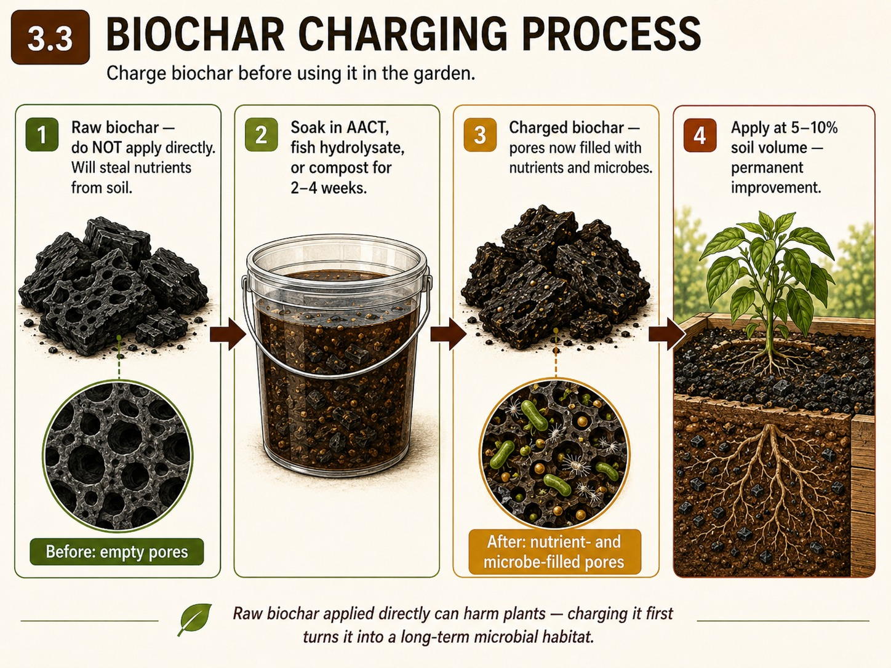
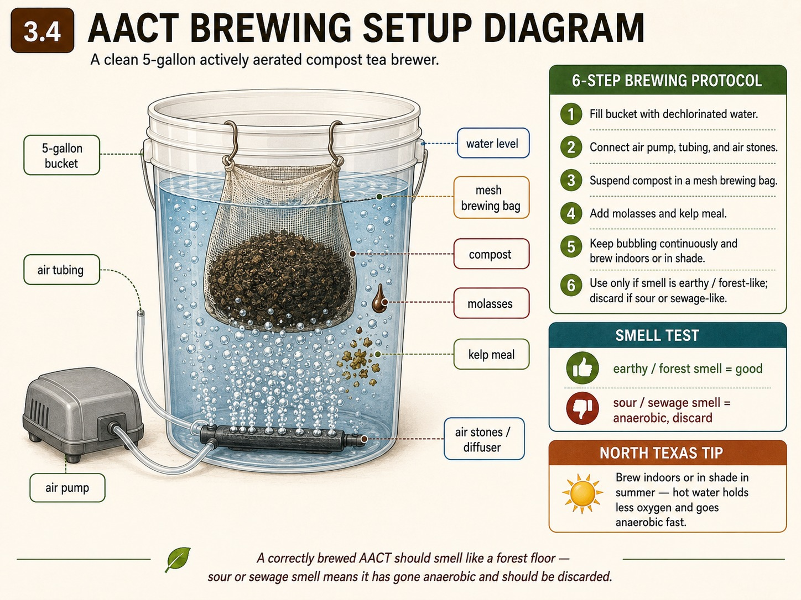
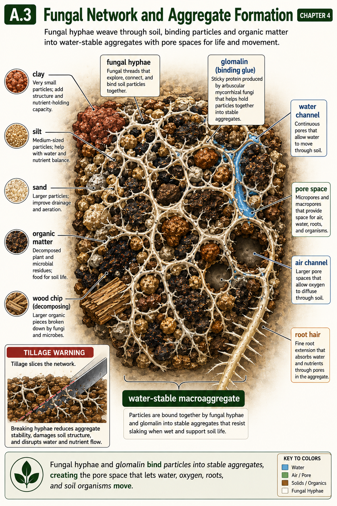
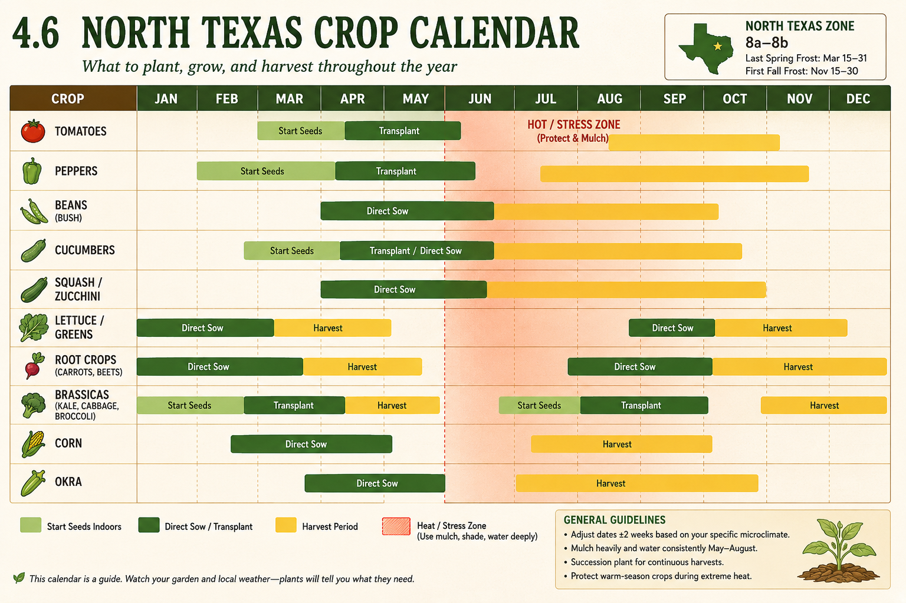
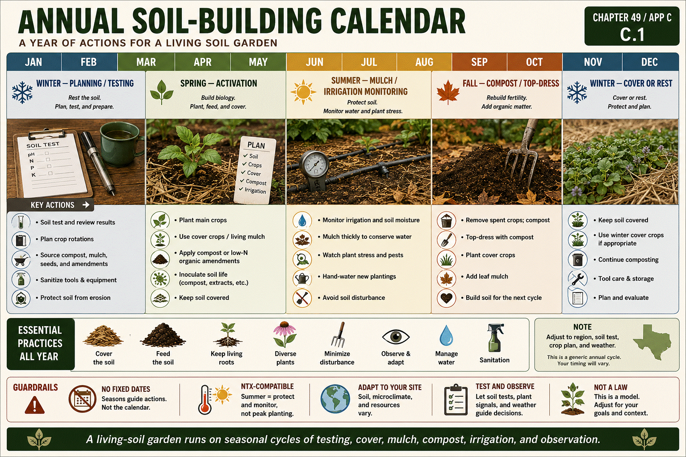
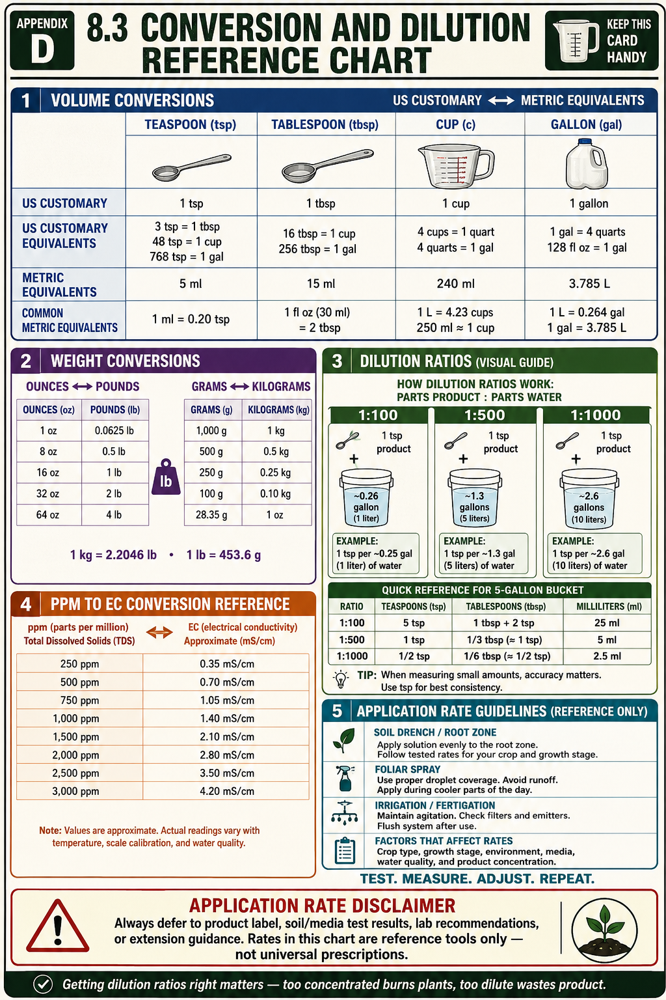
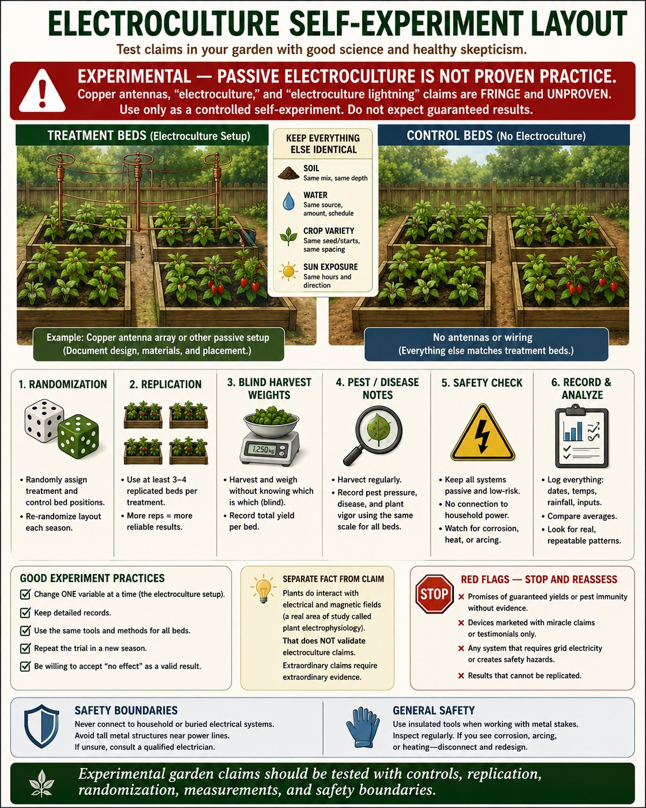
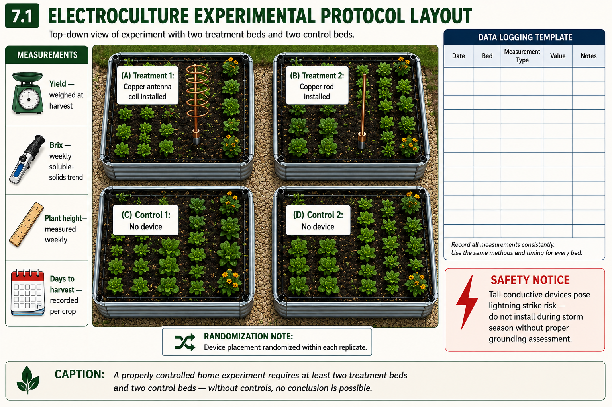
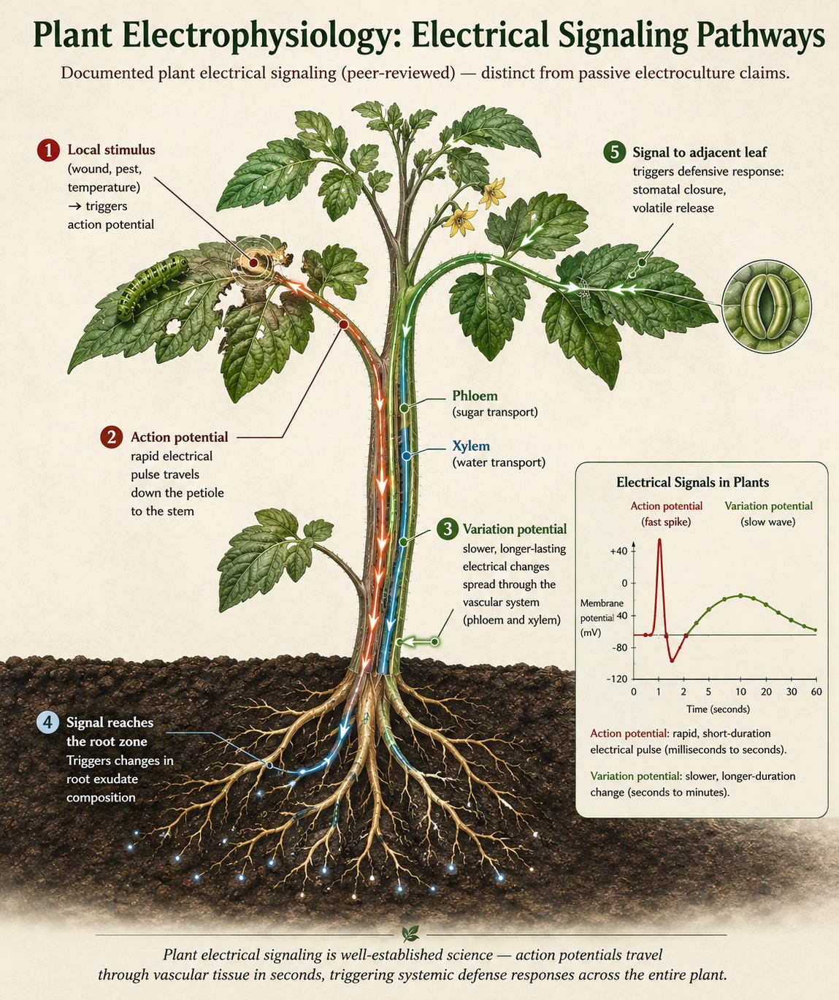

Figure UC-028 ◆

The Living Soil Encyclopedia · Book 5 of 5
The Living Soil Encyclopedia, Book 5: Field Companion
Text and original figures © 2026 Damon Smith.
This work is released under a Creative Commons Attribution-ShareAlike 4.0 International licence (CC BY-SA 4.0). You are free to share and adapt it so long as you give credit and license your contributions under the same terms.
This edition is free. It is not sold, carries no advertising, and generates no revenue.
Photographs by third parties are licensed separately from the text and are credited individually in the Image Credits section. Several appear by permission granted specifically for free, non-commercial educational use. Those permissions cover this work only. They do not transfer to anyone who reuses this text under the licence above, and anyone doing so must clear those photographs independently or remove them.
Nothing here is professional agronomic, medical, or regulatory advice. Test amendments on a small scale before applying them broadly, and follow all product labels and local regulations.
Source, errata, and the current edition: https://github.com/dstorm3691/living-soil-encyclopedia
Five-book working edition — structurally reassembled; publication blockers remain open
Page numbers populate during print rendering through target-counter CSS.
No-till bed establishment creates a permanent growing zone without inverting the soil. The goal is to preserve soil structure, protect fungal networks and aggregates, maintain pore continuity, and build fertility from the surface downward. In a new or degraded bed, no-till does not mean doing nothing; it means correcting access, cover, compaction, organic matter, drainage, and fertility without routine tillage.
1. Read the site first. Identify sun, shade, slope, drainage, runoff, buried utilities, existing vegetation, invasive grasses, soil texture, compaction, and water access. Do not build a bed where water pools unless drainage is solved.
2. Mark permanent beds and paths. Keep foot traffic out of the bed from day one. Beds should be reachable from the sides without stepping into the growing zone. Paths can be mulched heavily to suppress weeds and absorb traffic.
3. Suppress existing vegetation. For annual weeds, cardboard or paper under compost and mulch may be enough. Bermuda, Johnsongrass, bindweed, and other aggressive perennials often require prior depletion, edging, root barriers, repeated removal, or a longer occultation period. Do not pretend cardboard alone stops deep perennial grass.
4. Address compaction without inversion. Where soil is friable, use a broadfork to open vertical channels without flipping layers. Do not broadfork wet clay or bone-dry clay. If the soil smears, clods, or cracks like concrete, wait.
5. Add tested compost and organic matter. Use mature compost or a known bed mix. Avoid raw manure in edible beds unless food-safety guidance and waiting periods are followed. Avoid compost or mulch sources with persistent-herbicide risk unless bioassayed.
6. Add amendments only by test or label. Gypsum, lime, sulfur, phosphorus, potassium, trace elements, animal meals, and minerals should be chosen from soil/media testing, product labels, and crop needs. A no-till bed should not become a stockpile of every amendment.
7. Mulch immediately. Soil armor is non-negotiable. Use straw, leaves, wood chips in perennial zones, or crop-appropriate mulch to moderate heat, erosion, crusting, and evaporation. Keep mulch away from direct stem contact where needed.
8. Establish living roots. Plant the bed, cover crop it, or mulch it until planting. Empty bare soil loses carbon flow and becomes vulnerable to crusting and weeds.
For North Texas Blackland clay, timing is the difference between improvement and damage. Work only when soil is friable. Build on top where clay is compacted, alkaline, and sticky. Maintain thick mulch through summer, and manage water slowly enough that it infiltrates instead of sealing the surface and running off. No-till is a long game: structure improves through roots, organic matter, biology, and traffic control.
Annual top-dressing is the no-till maintenance practice of adding compost, amendments, and mulch to the soil surface without disrupting the bed profile. The purpose is to renew biological habitat, replace nutrients removed by harvest, maintain soil cover, and support steady decomposition from the top down. It is not a dumping event and not a substitute for soil testing.
Use this protocol once or more per year when the bed is between crops, before a major crop cycle, or when mulch and compost layers have been visibly consumed. Timing should follow crop stage, soil/media test, product labels, and local conditions.
1. Inspect before adding anything. Pull back mulch and check moisture, odor, aggregation, roots, earthworm or arthropod activity, weeds, pest signs, salt crust, and disease residue. Do not bury an unresolved problem under compost.
2. Remove risky material. Take out diseased stems, pest-infested debris, Southern Blight crown material, virus-suspect plants, and persistent-herbicide-risk residues. Compost only materials that are appropriate for the composting system being used.
3. Confirm the amendment plan. Choose dry amendments from soil or media tests, crop history, and product labels. Do not apply phosphorus, lime, boron, copper, sulfur, potassium sulfate, blood meal, bone meal, guano, or concentrated trace elements by habit.
4. Apply amendments lightly and evenly. Keep dusty materials damp or mix on a calm day with respiratory and eye protection. Keep concentrated nitrogen or odorous animal meals away from exposed roots and tender stems unless the product label supports that placement.
5. Add mature compost or vermicompost. Use known, finished, non-sour material. Compost is both an organic-matter and biology input, but it is not sterile and not uniform. Where persistent herbicide risk exists, run a bioassay before broad application.
6. Re-cover with mulch. Replace straw, leaf mold, wood chips, or crop-appropriate mulch to protect the surface from heat, crusting, evaporation, and splash. Keep mulch off direct stem contact where crown rot or rodents are a concern.
7. Water to settle, not to saturate. Moisture activates decomposition, but waterlogging drives anaerobic conditions. In drip beds, confirm emitters are under the mulch and wetting the active root zone.
8. Log the work. Record date, bed, crop, compost source, amendments, approximate amounts from label/test guidance, mulch type, and any concerns.
In North Texas, top-dressing is most protective when it prevents bare soil during heat and storm cycles. Blackland clay can crust, crack, and bake; a living bed needs surface armor. But wet clay is easy to damage, so do not work the bed aggressively after spring storms. In summer, re-cover exposed soil quickly and water deeply enough to keep the decomposition zone alive.
A compost pile is a managed biological reactor. Its purpose is to transform raw organic residues into stable, mature material suitable for soil building. A pile is not automatically safe or mature because it looks dark. Good compost requires appropriate feedstock balance, moisture, oxygen, mass, temperature management, time, and screening for contaminants.
1. Choose clean feedstocks. Use plant residues, leaves, small wood chips, spent crop material, and appropriate nitrogen sources. Avoid persistent-herbicide-risk hay, straw, manure, or grass clippings unless the source is known or bioassayed. Do not use diseased crop residue, meat, pet waste, glossy paper, treated wood, or contaminated material in a garden compost stream.
2. Balance carbon and nitrogen. Browns such as dry leaves, straw, and wood chips provide carbon and structure. Greens such as fresh plant matter, coffee grounds, and some manures provide nitrogen and moisture. The exact mix is adjusted by smell, heat, moisture, and texture rather than a fixed universal ratio.
3. Build for aeration. A pile needs enough size to heat but enough structure to breathe. Coarse material prevents collapse. Fine wet material packed tightly can become anaerobic quickly.
4. Set moisture correctly. The pile should feel like a wrung-out sponge: moist enough for biology, not dripping or waterlogged. Dry piles stall; wet piles rot.
5. Monitor temperature and odor. Thermophilic composting can reduce weed seed and pathogen risk only when time, temperature, turning, and pile uniformity are managed. Use a compost thermometer. Rotten, sulfurous, sewage-like, or ammonia-heavy odor signals imbalance.
6. Turn when needed. Turning reintroduces oxygen and moves outer material inward. Frequency depends on heat, moisture, feedstock, and the goal. Do not turn steaming, ammonia-heavy, manure-rich compost without gloves, eye protection, respiratory caution, and awareness of heat and irritant gases.
7. Cure before use. Finished compost should be stable, earthy, crumbly, and no longer heating. Immature compost can burn seedlings, immobilize nitrogen, release ammonia or organic acids, or introduce pathogens.
8. Screen and test. Remove trash, plastic, large woody chunks, and suspicious residues. For unknown compost or herbicide-risk materials, conduct a sensitive-plant bioassay before using it in vegetable beds.
North Texas compost management is mostly moisture management. Summer heat can dry piles until biology stalls; spring storms can waterlog piles into anaerobic mats. Keep piles covered when needed, water during dry periods, and build with enough coarse carbon to maintain airflow. Do not assume local manure or hay is safe; persistent pasture herbicides are a real risk in regional supply chains.
Common names / synonyms: Drip irrigation maintenance, emitter maintenance, irrigation system service, drip line maintenance SOP. This is a maintenance SOP, not a design or installation SOP. The irrigation system is assumed to be installed and operational. See the relevant Phase J entry (Water and Infrastructure) for design and installation guidance.
Functional definition: Irrigation system maintenance is the scheduled inspection and servicing program for a drip irrigation system — including weekly emitter checks during operation, monthly filter service, seasonal line flushes, and annual pressure regulator inspection — with specific attention to the North Texas calcification problem: alkaline municipal water (pH 7.8–8.5, 100–150 mg/L calcium carbonate) deposits calcium carbonate scale inside emitters, reducing or eliminating flow and producing the dry-spot pattern most often misdiagnosed as soil or root problems rather than irrigation failure.
Drip irrigation system components requiring maintenance:
Emitters: The flow-restricting outlets that deliver water to the root zone at controlled rates (0.5, 1.0, or 2.0 gallons per hour are the common home garden rates). Emitters contain a small orifice and a pressure-compensating or non-pressure-compensating mechanism. The emitter orifice is the primary site of calcium carbonate scale buildup from alkaline water.
Drip lines/tubing: 1/2-inch poly main line and 1/4-inch emitter supply tubing. Accumulate sediment, algae, and mineral deposits internally over time. Algae growth is common in clear poly tubing exposed to sunlight.
Y-filter or inline filter: Located at the connection between the water supply and the irrigation system. Captures sediment, organic matter, and algae before they reach and clog emitters. The filter screen requires periodic cleaning.
Pressure regulator: Reduces main line water pressure to the 15–25 PSI range appropriate for drip systems. Failure produces either under-pressure (poor emitter function) or over-pressure (emitter blow-off, tubing separation at fittings).
Timer/controller: Programmable controller at the water supply — not a maintenance item in the mechanical sense, but a calibration item (run times need adjustment as crop water demands change through the season).
The calcification problem in North Texas:
DFW municipal water contains approximately 100–150 mg/L total hardness as calcium carbonate. At the emitter orifice, where water passes from flowing pressure through a tiny restriction into lower-pressure soil, calcium carbonate precipitation is accelerated. Over a growing season, the emitter orifice can narrow from its rated 0.5 GPH to 0.1 GPH or zero — producing the dry-spot pattern that looks like a soil drainage problem or a root establishment failure, but is actually a flow-blocked emitter 2 inches above the dry zone.
Why weekly emitter checks catch problems early:
Emitter flow rate decline is gradual — a partially scaled emitter delivers reduced water over weeks before complete blockage. A plant that was receiving 0.5 GPH begins receiving 0.3 GPH, then 0.15 GPH. The plant shows increasing drought stress gradually — slower growth, then leaf roll in afternoon, then wilting that does not fully recover overnight. By the time wilting is severe, the plant has been water-stressed for weeks. Weekly emitter checks — run the system and walk the drip lines, looking for dry soil spots adjacent to operating emitters — catch partial blockages before the plant stress response begins.
Why filter maintenance prevents emitter clogging:
Sediment, organic matter, and algae that pass through an unmaintained filter accumulate in the narrow emitter orifice, adding to the calcium carbonate scale. A clean filter reduces the particulate load reaching emitters, extending the interval between emitter cleanings.
Why acid flushing dissolves calcium carbonate:
Calcium carbonate (CaCO₃) dissolves in dilute acid. Acetic acid (white vinegar, 5% strength) or citric acid solution at adequate concentration acidifies the water to below pH 4.5 — low enough to dissolve calcium carbonate scale from emitter surfaces and orifices. This is the chemical basis for the periodic acid flush that prevents long-term emitter calcification.
What maintenance does NOT do:
System maintenance cannot compensate for a system with fundamentally inadequate coverage — too few emitters per plant, emitters placed too far from the root zone, or a main line with inadequate flow capacity for the number of zones. If dry spots persist after verifying emitters are functioning correctly, the issue is system design, not maintenance.
Maintenance is organized at three intervals:
WEEKLY MAINTENANCE (during growing season, performed during or immediately after each irrigation cycle)
Step 1: Walk the drip lines during irrigation.
While the system is running, walk every drip line and observe: Is water weeping from every emitter location? Are there dry spots immediately adjacent to emitters that should be wet? Are any emitters spraying rather than dripping (emitter has blown out of the tubing)?
Mark problem locations with a small flag or stake for repair immediately after the irrigation cycle ends.
Step 2: Identify the type of problem at each marked location.
Dry spot adjacent to an in-place emitter: Flow-restricted emitter. Pull the emitter from the tubing (they are barbed press-fit). Hold the emitter and allow water to flow from the tubing briefly to confirm tubing is not blocked. If water flows freely from the tubing and not from the emitter: the emitter is clogged. Proceed to emitter cleaning (Step 3).
No water at a location, tubing also blocked: Root intrusion or sediment plug in the 1/4-inch supply tubing. Replace the tubing section.
Spray pattern rather than drip: Emitter has blown out of the tubing — the barb has released under pressure. Press a new emitter into the tubing or cap the opening if that emitter location is no longer needed.
Flooded area with emitter operating correctly: Emitter is placed in a location with poor drainage, or the run time is too long for the soil's infiltration rate. Reduce run time for that zone or relocate the emitter.
Step 3: Clean clogged emitters.
Remove the clogged emitter from the tubing. Hold the emitter under running tap water and use a toothpick or thin wire to clear visible material from the orifice. Do not use a metal pin or drill — this enlarges the orifice and changes the flow rate. Soak stubborn emitters in white vinegar (5% acetic acid) for 30–60 minutes, then re-flush under running water.
Test the cleaned emitter by holding your finger over the outlet and pressing it into a barb connector or temporary water source — if water flows freely under slight finger pressure and stops when the finger is removed (for pressure-compensating emitters), the emitter is functional.
Step 4: Replace emitters that cannot be cleared.
Quality emitter replacement cost is low ($0.10–0.30 per emitter). Emitters that have been cleared multiple times and immediately re-clog, or that have visible damage to the orifice or body, are replaced, not cleaned again.
MONTHLY MAINTENANCE
Step 5: Clean the Y-filter or inline filter.
Close the main shutoff. Remove the filter housing and extract the filter screen. Rinse the screen under running water to remove accumulated sediment and algae. Hold the screen up to light — it should be transparent across its full surface. If the screen shows mineral deposit (white or light gray coating), soak in white vinegar for 20–30 minutes, then scrub with a soft brush and rinse thoroughly.
Reinstall the filter, restore water pressure, and run the system briefly while checking for leaks at the filter housing connection. A filter housing that was overtightened and cracked during removal is replaced, not reassembled.
Step 6: Run a system pressure check.
With the system running at normal operating pressure, physically check all tubing connections at fittings — main line tees, elbows, end caps, and connections at the timer/regulator. Any fitting showing a slow drip or active stream is leaking. Mark and repair after the irrigation cycle ends.
Replacement of failing push-fit or barb fittings is a straightforward field repair: cut the tubing on both sides of the fitting (leaving adequate tubing length), insert the new fitting, and secure with appropriate clamps if using barb fittings, or simply push to seat if using push-fit.
SEASONAL MAINTENANCE — START OF SEASON (Late February / Early March in North Texas)
Step 7: Full system inspection before first irrigation.
After winter dormancy: walk all tubing above-ground and below mulch for rodent damage (rats and squirrels in North Texas will chew drip tubing during dry winters), cracked fittings from freeze events, and UV-degraded tubing (brittle, discolored tubing that cracks when flexed). Replace damaged sections.
Step 8: Seasonal line flush.
Remove all end caps from drip lines. Run the system for 2–3 minutes per zone with end caps off, allowing accumulated sediment and winter debris to flush from the lines. Replace end caps. This flush prevents the first irrigation cycle of the season from pushing winter debris directly through emitter orifices.
Step 9: Acid flush for calcification control (North Texas specific).
Using a fertilizer injector (Dosatron, EZ-Flo, or similar) or a simple bucket injector: prepare a dilute white vinegar solution (1 cup vinegar per gallon of water, to a pH of approximately 4.0–4.5). Run this solution through the entire drip system at normal pressure for one complete irrigation cycle duration. This dissolves calcium carbonate scale that accumulated during the previous season.
Allow the acid solution to dwell in the lines for 15–30 minutes after the flush cycle, then run clean water for one full cycle to rinse. Check all emitters during the rinse cycle for restored flow.
Step 10: Pressure regulator test.
With the system running, measure the operating pressure at a point downstream of the pressure regulator using an inline pressure gauge (available from irrigation suppliers). Target range: 15–25 PSI for most drip emitters. Pressure below 10 PSI = inadequate flow; check for upstream restriction or failing pressure regulator. Pressure above 30 PSI = regulator failure or bypass; replace the regulator.
SEASONAL MAINTENANCE — END OF SEASON (November)
Step 11: Winterization (limited for North Texas).
North Texas rarely experiences sustained freezes that damage drip tubing — hard freezes (below 28°F for more than 4 hours) occur occasionally and can crack exposed poly tubing and fittings. End-of-season winterization:
Step 12: Perform season-end acid flush (second annual flush for heavily calcified systems).
If emitters required multiple cleanings during the season, or if water hardness is at the higher end of the North Texas range, perform a second acid flush at season end before winterization. This prevents the calcium carbonate scale from hardening further over winter into a less-soluble form.
With water quality: Alkalinity and hardness of the water supply directly drive the calcification maintenance schedule. DFW municipal water requires acid flushing at minimum once per season (start of season) and ideally twice (start and end). Gardens on well water with lower hardness may require less frequent acid flushing. Collect rainwater to irrigate whenever possible — rainwater has near-zero hardness and significantly reduces emitter calcification rates.
With biological inputs: AACT and other liquid biological inputs applied through a fertigation injector into the drip system coat the inside of tubing and emitters with organic material that can accumulate and provide substrate for biofilm growth. Flush the system with clean water for a full cycle after any biological fertigation application.
With organic matter and sediment: Gardens with heavy leaf mulch or compost surface dressing may introduce organic matter into above-ground drip lines through emitter backflow. Run a clean-water flush after heavy rain events that may have driven mulch material into line openings.
Acid flush at too-high concentration: White vinegar at 5% (undiluted) run through a drip system will corrode some metal fittings (brass, galvanized) and degrade rubber O-rings and diaphragms in some pressure regulators over time. Dilute to 1 cup per gallon (approximately 0.5% acetic acid) for system flushing. Higher concentrations (1:1 vinegar:water) are acceptable for soaking individual emitters, not for system-wide flushing.
Overtightening filter housing: Cracked filter housings are the most common maintenance damage event. Hand-tighten plus one-quarter turn is the standard for most plastic filter housings. Do not use pipe wrenches or channel-locks on plastic irrigation components.
Skipping the weekly walk during the growing season: Emitter blockages that develop in mid-July in North Texas will produce water-stressed plants within 4–5 days in extreme heat conditions (140°F soil surface, high VPD, high transpiration demand). A plant that receives no water for 4 days in July may not recover fully even after water is restored. The weekly walk is not optional during the summer production period.
Using metal implements to clear emitter orifices: Enlarges the orifice, changes the calibrated flow rate, and causes the emitter to deliver more water than designed. In a system with multiple emitters per zone on a shared timer, one enlarged emitter delivers disproportionately more water than its neighbors, creating uneven coverage. Replace, don't over-clear.
Emitter function test: With system running, observe each emitter location for approximately 5 seconds. A functioning emitter shows steady flow matching its rated GPH — a 1 GPH emitter should produce a visible wet spot in the soil approximately 6 inches in diameter within 1–2 minutes of operation. Absent or reduced wet spot = flow problem. Excessive wet spot (pooling) = emitter blow-out or flow rate mismatch.
System uniformity check: At each seasonal startup, run the system and photograph or record the relative wet-spot development at 5 minutes of runtime across the entire system. Uniform wet spots = uniform flow rate across the system. Highly variable wet spots = emitter calcification or damage producing flow rate variability. The goal is uniform water delivery to all root zones.
Pressure gauge readings: See Step 10. Pressure outside the 15–25 PSI range is the diagnostic trigger for pressure regulator service or replacement.
Drip tubing: Poly drip tubing (standard 1/2-inch main line and 1/4-inch supply tubing) has a service life of 10–15 years in North Texas conditions with UV exposure. Tubing exposed to direct sunlight without mulch cover degrades faster (UV brittleness). Tubing under mulch lasts longer. Inspect for cracks and brittleness at each seasonal startup.
Emitters: 3–7 year service life depending on water quality and maintenance frequency. Higher-quality pressure-compensating emitters last longer than non-compensating units. In North Texas alkaline water conditions without acid flush maintenance, emitter functional life can be less than one season.
Pressure regulator: 5–10 year service life. Replace when output pressure is outside the rated range with the filter clean and the main supply pressure verified.
Filter screen: Indefinite service life with regular cleaning; replace when the screen material is torn, corroded, or cannot be cleaned to full transparency.
Emitters: Netafim, Rain Bird, and Antelco are the primary quality brands for home garden drip emitters. Pressure-compensating emitters (maintain consistent flow across 7–30 PSI inlet pressure variation) are preferred over non-compensating for systems with variable pressure or multiple elevation changes.
Pressure gauges: A simple glycerin-filled 0–30 PSI gauge with a 1/4-inch NPT fitting ($8–$15) is adequate for system pressure verification. Available from irrigation supply stores and hardware stores.
Fertilizer injectors for acid flushing: A simple Venturi-type injector (EZ-Flo, Mazzei, or equivalent) connects between the water supply and the irrigation system and draws a concentrated solution into the water flow at a fixed ratio.
White vinegar for acid flushing: Standard grocery-store white vinegar at 5% acidity is adequate. Food-grade citric acid (from home brewing suppliers) dissolved at 1 teaspoon per gallon produces a similar acid strength and may be less corrosive to some emitter materials.
Irrigation system maintenance in North Texas is primarily a calcification management problem. Every other maintenance issue described in this SOP exists in all drip irrigation contexts. Calcium carbonate scale from alkaline DFW municipal water is a region-specific challenge that determines the maintenance schedule more than any other factor.
DFW water hardness context: The City of Dallas reports water hardness in the range of 100–150 mg/L CaCO₃ equivalent in typical surface water conditions, with hardness varying seasonally as the water authority blends sources. At the high end of this range (150 mg/L), an emitter operating for one summer season (150 days at 30 minutes per day) may accumulate enough scale to reduce flow by 20–40%. At the low end (100 mg/L), the same emitter may show less than 10% flow reduction. The practical solution: acid flush at start and end of each growing season regardless of current hardness readings, and perform the weekly walk to catch individual emitter problems between seasonal flushes.
Rainwater as the calcification solution: Installing a rain barrel or cistern system that captures roof runoff and supplies the drip system during rain events eliminates the calcification problem at those times — rainwater has near-zero hardness. A 200-gallon cistern providing rainwater for drip irrigation during and immediately after rain events can meaningfully extend emitter service intervals even if municipal water supplies the majority of irrigation. See the Chloramine Neutralization entry for the parallel argument for rainwater collection from a biological-input perspective.
Summer emitter failure urgency: In July and August in North Texas, a failed emitter on a tomato or cucumber plant is an emergency, not a routine maintenance item. The combination of 100°F+ temperatures, high VPD (3–5 kPa), and no water delivery can produce unrecoverable plant damage within 48–72 hours. The weekly walk in summer exists precisely to catch these failures before they become crop losses.
Freeze events: North Texas experiences 2–5 significant freeze events per winter, with hard freezes (below 28°F) occurring in most years. Above-ground drip tubing and uninsulated above-ground fittings are vulnerable. When a hard freeze is forecast (not just a light frost), drain or blow out any above-grade irrigation lines that are not buried under at least 3 inches of mulch. The main line and emitter supply tubes running through beds with wood chip mulch are typically adequately insulated — unprotected above-ground risers and connectors are the failure points.
Related entries: Drip Irrigation Design (Phase J water/infrastructure — design and installation), Chloramine Neutralization (Phase F or Phase J — water quality context), Mulch and Water Retention (Phase I — mulch protects drip lines), Aggregate Stability and Infiltration (Phase F — relevant to emitter flow rate interpretation), Water pH and Alkalinity Management
Internal provisional anchors: Chapter [Water and Infrastructure — VERIFY chapter number]; SOP [Irrigation Setup and Commissioning — VERIFY SOP number in current-manuscript v3]
Common names / synonyms: End-of-season sanitation, garden cleanup protocol, tool disinfection SOP
Functional definition: The Garden Sanitation and Tool Hygiene SOP is the protocol for removing, treating, or destroying disease inoculum, pest overwintering structures, and pathogen-contaminated material from the garden at the end of each season and throughout the growing season as needed. Sanitation is the most underused IPM tool in home vegetable production — many disease and pest problems that recur year after year do so because overwintering inoculum in plant debris, soil, and tools is never adequately disrupted.
Sanitation materials:
Discard list — non-negotiable (do not compost these):
Compost-acceptable plant debris:
Why sanitation breaks the disease cycle: Sclerotium rolfsii (southern blight) produces sclerotia — dense, melanized survival structures viable in North Texas soil for 2–5 years without a host. A single missed plant with sclerotia contributes thousands of new sclerotia to the soil. Over 3–4 seasons without sanitation, sclerotia density builds to levels where every susceptible plant is infected. Sanitation removes this escalating inoculum before it accumulates.
Why tool sanitation prevents disease spread: Pruning shears and harvest scissors that contact infected plant tissue carry inoculum on their surfaces. Bacterial wilt on cut surfaces, tobacco mosaic virus on contaminated hands and tools — these are documented home-garden spread mechanisms. A 10% bleach solution achieves >99% reduction in most vegetable pathogens within 30 seconds of contact.
What sanitation does NOT accomplish: Sanitation does not eliminate established soil-borne pathogen populations — it reduces them. Beds with 3+ years of southern blight history cannot be fully remediated by surface sanitation alone; crop rotation to non-host crops for 1–2 seasons is required. Sanitation does not prevent airborne or vector-borne pathogen introduction — it prevents amplification within the garden.
End-of-Season Debris Management
Step 1: Categorize all crop residue before removal. Walk each bed at season end and assess every plant: (a) healthy or undiagnosed — compost; (b) disease confirmed from the discard list — bag immediately; (c) unidentified symptoms — when in doubt, discard. The cost of discarding healthy plants is lost compost material. The cost of composting pathogen-infected material is multi-year disease escalation.
Step 2: Remove discarded material without shaking or dragging it across the garden. Place infected plants directly into trash bags at the point of removal. Do not carry them through the garden — sclerotia can drop from plants in transit and establish new colonies. Bag at the source, close the bag before moving. Dispose in municipal trash, not yard waste.
Step 3: Remove healthy plant debris and compost or leave as surface mulch. Healthy season-end plant material can be cut at the soil surface and added to the compost pile or left as mulch. Do not pull roots unless the bed will be replanted immediately — leaving roots in place feeds soil biology and maintains root channels.
Soil Surface Sanitation
Step 4: Apply soil surface sanitation to beds with confirmed disease history. For beds where southern blight, TSWV, or late blight was confirmed in the past 2 seasons:
Copper-based spray: Mix copper octanoate or copper hydroxide at label rate (typically 0.5–1 tablespoon per gallon). Apply as a drench to bare soil surface after plant removal at 1 gallon diluted solution per 10 sq ft. This contacts and kills surface-level fungal inoculum — it does not reach sclerotia buried more than 0.5 inches deep, but it reduces surface inoculum load significantly.
Hydrogen peroxide spray: 3% hydrogen peroxide (undiluted) at 0.5 gallon per 10 sq ft. Effective for bacterial surface inoculum and mild fungal pressure. Less effective than copper for Sclerotium. Use as a copper alternative when copper use frequency is a concern — copper accumulates in soil with repeated applications.
Apply soil surface sanitation at least 2 weeks before replanting or top-dressing. Copper at full rate is toxic to soil biology for 1–2 weeks at the soil surface. Allow adequate recovery time before introducing biological inputs.
Tool Cleaning Protocol
Step 5: After every work session, remove all soil and plant material from tools. Use a stiff brush or scraper to remove all adhered soil and plant tissue from metal cutting surfaces and trowels. Do not store tools with soil on them — moist soil on metal accelerates corrosion.
Step 6: Wash with soap and water. Wash all metal and plastic surfaces with dilute soap solution (1 teaspoon dish soap per gallon of water). Rinse thoroughly. This step removes organic material that would protect pathogens from the disinfectant in Step 7.
Step 7: Disinfect. For tools that contacted diseased plant material: dip or wipe with 10% bleach solution. Allow 30-second contact time. Rinse with clean water (bleach corrodes metal with prolonged contact). Alternatively: wipe with 70% isopropyl alcohol and allow to dry — no rinse required. Isopropyl alcohol is preferred for bladed tools used frequently (less corrosive); bleach is preferred for broad sanitation events where a dunk is practical.
Step 8: Dry and oil metal surfaces. Dry all metal surfaces thoroughly after washing and disinfecting. Apply a light coat of linseed oil or mineral oil to all metal cutting surfaces and blade faces. This prevents rust and extends blade life. Wipe off excess from the cutting edge itself to maintain sharpness.
Step 9: Store tools in a dry, covered location. Do not store metal tools outdoors where they contact dew, rain, or irrigation overspray. Tools left in the garden overnight and exposed to morning dew will rust within one season in North Texas humidity.
Synergies: Sanitation combined with crop rotation is the most effective strategy for soil-borne pathogens — rotation removes the host while sanitation reduces inoculum density. Tool sanitation during the season prevents disease from spreading to new beds — the most cost-effective intervention for viral and bacterial diseases that have no organic curative.
Antagonisms: Copper soil surface treatments reduce soil biology for 1–2 weeks — do not apply immediately before AACT or mycorrhizal inoculation. Bleach solutions must be prepared fresh — 10% bleach loses efficacy within 24 hours.
Composting diseased material: The most consequential sanitation failure in home gardens. Southern blight sclerotia survive hot composting. Clubroot oospores survive hot composting. Late blight sporangia may survive incomplete thermophilic cycles. Rule: when in doubt, trash it.
Over-relying on copper: Repeated copper applications accumulate in soil and eventually reach phytotoxic levels. Copper is one tool among many, not a season-long spray program. Use for beds with confirmed disease history — not as a preventive spray across all beds.
Southern blight is the non-negotiable sanitation priority in North Texas. Sclerotium rolfsii is endemic in North Texas soils and favors the exact conditions of summer vegetable production — warm soil above 80°F, moist, high-organic-matter surface. The white mycelium and mustard-seed sclerotia at the soil line are the signature sign. A single plant with southern blight left in place produces thousands of sclerotia that persist 2–5 years. The only management decision when southern blight is found is immediate removal and discard. No organic treatment cures an infected plant. Do not delay.
TSWV-infected plant material: North Texas has high endemic TSWV pressure. Any plant showing the characteristic bronze ring pattern that tests or strongly presents as TSWV-positive should be removed and discarded, not composted. Removing infected plants eliminates the reservoir from which thrips continue acquiring virus to spread to new plants.
Encyclopedia entries: Tool Maintenance and Sharpening SOP (M4-2), Compost Pile Building and Management (M1-3), Disease Triangle (Entry 12), IPM Hierarchy (Entry 20), Daily Scouting SOP (M3-1)
Book 1: Chapter 12: The IPM Framework; Chapter 8: Inputs and Amendments
Common names / synonyms: Hand tool maintenance, sharpening protocol, tool care SOP
Functional definition: The Tool Maintenance and Sharpening SOP is the step-by-step protocol for maintaining sharp, functional, rust-free hand tools through the season and at seasonal transitions. Sharp tools are not a nicety — they determine the effectiveness of every cultural practice that relies on cutting: weeding, harvesting, pruning, and cultivation. A sharp stirrup hoe severs weed seedlings below the soil surface; a dull one pushes them over to re-root. A sharp harvest knife makes a clean cut that heals rapidly; a dull one crushes tissue and creates larger wound surfaces vulnerable to pathogen entry.
Tools covered:
Sharpening equipment:
Why sharp tools change outcomes by type:
Stirrup hoe: The most effective weed management tool in a vegetable garden when sharp. Sharp stirrup hoe, used on 1-inch-tall weed seedlings in moist soil: clears a 4×8-foot bed in 3–5 minutes with clean severing at or below soil surface. Same tool dull: requires 3× the force, tears rather than cuts, and pushes weed seedlings over without severing the root — they re-root within 24 hours in moist soil.
Harvest knife/scissors: Clean cuts leave small wound surfaces that form a callus or dry out quickly. Crushed cuts from dull scissors leave larger, irregular wound surfaces that take longer to heal and provide more pathogen entry points. On high-value crops like basil and herbs, the difference in wound quality between sharp and dull tools is visible as browning at the cut edge within 48 hours.
Bypass pruners: Sharp pruners make a shear cut. Dull pruners crush and tear. On woody stems (pepper, eggplant, tomato), crushing causes dieback at the cut that can track back into living tissue and create canker entry points for Botrytis and bacterial diseases.
Why handle condition affects safety: Cracked, splintered, or dried-out wooden handles break under force — usually at the moment of maximum exertion (driving a fork into compacted clay). A broken handle sends the user's hands into the blade zone. Handles conditioned with linseed oil remain flexible, resist cracking, and grip wood fibers under shock loading.
Assessment
Step 1: Assess sharpness. The thumb test: drag your thumb lightly across the tool edge (not along it). A sharp edge catches lightly on the skin — you feel it without drawing blood. A dull edge slides without catching. For hoe blades: look at the edge at an angle in light — a sharp edge is invisible (the bevel comes to a true point); a dull edge reflects light as a bright line (the flat, worn edge is visible).
Step 2: Assess for rust. Light surface rust (orange film): treat with steel wool and oil — structural integrity is intact. Pitting rust (visible cratered surface): use wire brush then mill file to remove pitted material before sharpening. Deep structural rust (metal flaking or soft): the tool has lost structural integrity — replace.
Hoe Sharpening
Step 3: Secure the hoe and identify the bevel. Clamp the hoe head in a bench vise or brace against a stable surface. Identify the bevel — the angled face forming the cutting edge, typically on the front face away from the operator on a draw hoe. The back face is flat. Never file the flat back face — this removes the geometry that creates the cutting edge.
Step 4: File the bevel. Position the mill bastard file at the bevel angle (typically 25–35° for a hoe — follow the existing bevel angle). File in one direction only: from heel to toe, pushing the file away from your body and lifting on the return stroke. Do not saw back and forth — this produces a ragged edge. Apply moderate, even pressure. Approximately 10–15 strokes per section of blade width. Goal: a consistent, shiny new bevel surface across the full blade width.
Step 5: Remove the burr from the flat side. Filing the bevel raises a thin wire burr on the opposite flat side. Lay the flat file flush against the flat face and make 2–3 light strokes along the full blade length. This completes the edge.
Step 6: Test sharpness. Repeat the thumb test. The edge should now catch. Field test: drag the hoe blade across a flat hand with light pressure — a sharp hoe blade catches on fine arm hairs.
Stirrup Hoe Sharpening
Step 7: Sharpen both cutting edges. The stirrup hoe cuts on both the push and pull stroke — each edge has its own bevel. File each edge following Steps 3–6. The bevel angle is typically 20–25°. A stirrup hoe cutting only on one stroke has one sharp edge and one dull edge — a common maintenance oversight.
Harvest Knife and Scissors
Step 8: Sharpen harvest knives with a diamond file or sharpening stone. For a single-bevel knife: position the blade at the bevel angle (typically 15–20°). Draw the blade across the file from heel to tip, maintaining consistent angle and pressure. Approximately 8–10 strokes, then check sharpness. Finish on the fine side of the stone. Remove burr on the flat side with 2–3 light strokes.
For scissors: sharpen only the inner (beveled) face of each blade. The flat inner face stays flat — filing it rounds the edge and ruins the scissors geometry.
Step 9: Hone between sharpenings. 3–4 light strokes per side on a honing steel after every 3–5 harvest sessions realigns the microscopic edge without removing material. A sharpened harvest knife maintained with regular honing stays sharp for 2–3 months of regular use.
Handle Maintenance
Step 10: Inspect handles at least twice per season. Check each wooden handle: (a) wiggle the head — any looseness at the socket requires immediate repair or replacement; (b) feel for cracks, splinters, or rough surfaces along the handle; (c) look for checking (lengthwise cracks) indicating dried-out wood.
Step 11: Sand and oil handles once per season. Lightly sand with 80-grit then 150-grit. Wipe dust clean. Apply a liberal coat of linseed or tung oil. Allow 30 minutes to absorb. Wipe off excess. Repeat 2–3 times for very dry or new handles.
Step 12: Tighten loose handles. Options: soak the tool in water 24 hours — wood swells and grips the socket (temporary); drive a wooden wedge into the handle end extending into the socket (permanent for mild looseness); replace the handle if the socket fit is compromised beyond wedging. Never use a tool with a loose head.
Seasonal Deep Clean
Step 13: Full deep clean before seasonal storage. At season end (November): remove all soil from every tool. Remove rust with wire brush and steel wool. Sharpen all hoe and harvest tools following Steps 3–9. Inspect and oil all handles following Steps 10–11. Apply oil coat to all metal surfaces. Store in a dry, covered location. Tools that begin the next season sharp and rust-free require only honing maintenance through the season.
Soil abrasiveness is the primary sharpening frequency driver in North Texas. Blackland Prairie clay mixed with sand particles wears hoe edges faster than sandy or loamy soils. On native clay beds, plan to sharpen hoe blades every 2–3 weeks during heavy use periods (spring and fall weeding). Keep a file in the garden shed — a 5-minute touch-up between sessions is more effective than waiting until the hoe is completely dull.
Storage humidity: North Texas summer humidity reaches 85–90% on July mornings. Tools stored in an unventilated shed will rust on metal surfaces between uses if not oiled. A light wipe of mineral oil on all metal surfaces before summer storage sessions prevents surface rust without the labor of a full treatment.
Encyclopedia entries: Garden Sanitation and Tool Hygiene SOP (M4-1), Harvesting and Post-Harvest Handling SOP (M3-4)
Common names / synonyms: Cover crop SOP, green manure protocol, cover crop management, living mulch planting and termination
Functional definition: The Cover Crop Planting and Termination SOP is the complete protocol for selecting, seeding, establishing, and terminating cover crops in North Texas vegetable garden beds. Cover crops serve one or more of four primary functions: nitrogen fixation (leguminous species), biomass addition (any species, grasses in particular), soil biology stimulation (living root exudates feed rhizosphere biology), and weed suppression (dense canopy and allelopathic compounds from some species). The SOP specifies species selection by function and season, seeding method and rates, legume inoculation, termination timing and method, and replanting timeline after termination.
North Texas Cover Crop Calendar:
Fall–Spring (plant October 1 – November 30):
Summer (plant May 15 – July 15):
Legume inoculant: Rhizobium inoculant is species-matched — crimson clover and hairy vetch use a different strain than cowpea; Austrian winter peas use yet another. Confirm strain matching before purchasing. A mismatched inoculant does not fix nitrogen.
Nitrogen fixation: Legume cover crops host Rhizobium bacteria in root nodules that convert atmospheric N₂ into ammonium (NH₄⁺) the plant can use. The plant provides carbon (sugars) to the bacteria; the bacteria provide fixed nitrogen to the plant. At termination, nitrogen stored in legume tissue — including root tissue left in place — mineralizes and becomes available to the subsequent crop.
Nitrogen fixed depends on: species (crimson clover fixes 80–200 lbs N/acre; Austrian winter peas 100–200 lbs; cowpea 80–250 lbs); inoculation (un-inoculated legumes in soil without compatible Rhizobium fix little to no nitrogen); and termination timing (maximum N at early flower — before nitrogen translocates to developing seeds).
Biomass and carbon cycling: Non-fixing grasses (cereal rye, sorghum-sudan) add high-carbon biomass at termination that fuels the fungal community and builds stable organic matter. Cereal rye at termination adds approximately 3,000–8,000 lbs dry biomass per acre — equivalent in organic matter value to 1–2 inches of compost, with a slower release profile that feeds soil biology for months.
Allelopathy: Cereal rye and sorghum-sudan suppress weed germination through allelochemicals released from decomposing residue — benzoxazinoids (rye) and sorgoleone (sorghum-sudan) inhibit small-seeded weed germination for 3–6 weeks. This mechanism is peer-reviewed and genuine. It also inhibits direct-seeded vegetable crops. Use allelopathic covers only in beds being transplanted (not direct-seeded) in the subsequent crop, or wait the full 4–6 weeks before direct seeding.
What cover crops do NOT accomplish: Cover crops do not add nitrogen to beds that already have adequate nitrogen; they maintain cycling, not elevate it above crop demand. Cover crops do not fix phosphorus or potassium — mineral balance still requires testing and amendment.
Planning
Step 1: Determine the primary cover crop function for each bed. Assign a function before selecting species:
Step 2: Confirm the planting date is within the correct establishment window. Do not plant:
Seeding
Step 3: Prepare the bed surface. Cut or remove prior crop residue. Apply surface compost if this coincides with a top-dress event. Rake to a rough, clumpy (not smooth) texture — small seeds germinate better in contact with soil particles than on a crusted surface.
Step 4: Inoculate legume seeds immediately before seeding. Moisten seeds with water or dilute sugar solution (1 teaspoon sugar per cup of water). Add Rhizobium inoculant powder per label rate and mix until seeds are coated. Seed immediately — do not store inoculated seeds for more than 24 hours and keep out of direct sunlight (UV kills Rhizobium).
Step 5: Broadcast seed. Broadcast evenly by hand in two directions (east-west then north-south pass), using half the seed rate per pass. For beds above 100 sq ft, use a push-type broadcaster.
Seeding rates per 100 sq ft:
Step 6: Rake in lightly and firm seed contact. Tine-rake pass at 0.25-inch depth to press seeds into contact with the soil surface. Bury: 0.25 inch for small seeds (clover, vetch); 0.5–1 inch for large seeds (peas, cowpeas). Firm the surface with a board or the back of a flat hoe — seed-to-soil contact is critical for germination.
Step 7: Water thoroughly and maintain moisture through establishment. Irrigate to wet the top 2 inches of soil immediately after seeding. Continue daily irrigation for 7–10 days until seedlings reach 2 inches tall. In North Texas, the fall cover crop window often coincides with reliable rainfall — monitor and supplement when needed.
Step 8: Apply light straw mulch over newly seeded beds (optional). A thin straw scattering protects seeds from birds and maintains surface moisture. Remove or leave in place once seedlings reach 2 inches.
Management During Cover Crop Period
Step 9: Monitor for establishment and pest pressure. Check at 7 and 14 days: germination should be uniform and >70% of seeded area. Gaps indicate: poor seed contact (re-rake and reseed), surface crusting (break with gentle rake), bird predation (straw mulch and netting), or seed quality failure.
Aphid pressure on winter peas and hairy vetch: common in spring. Scout per M3-1 and manage per M3-2. Low aphid pressure on vigorous cover crop with natural enemies present does not require intervention.
Termination
Step 10: Terminate before seed set — the most critical timing decision. A cover crop allowed to set seed:
Termination timing by species:
Step 11: Execute termination by cut-and-drop. Cut all stems at or just below the soil surface with a sharp hoe. Leave all biomass on the bed surface. Do not pull, remove, or incorporate. The surface residue layer becomes the mulch for the incoming crop and feeds soil biology through decomposition.
For large-biomass covers (sorghum-sudan, mature cereal rye): cut with a sharp hoe or scythe. If stems are too thick for a hoe: use loppers. Goal: a uniform, flat layer of residue on the bed surface.
Step 12: Determine replanting timeline. Post-termination waiting periods before transplanting:
For transplanted crops: allelopathic residue affects germination but not established transplants. You can transplant into sorghum-sudan residue after 3 weeks if transplanting rather than direct seeding.
Step 13: Apply fish hydrolysate drench at replanting. Even after the waiting period, incoming transplants benefit from readily available nitrogen while cover crop nitrogen is still mineralizing. Fish hydrolysate at 1 tablespoon per gallon, 0.5 gallon per transplant, at planting bridges the gap between cover crop nitrogen release and immediate plant need.
Synergies: Cover crop residue combined with AACT application at termination creates the highest-activity biological environment of the year. Legume covers followed by high-nitrogen-demand summer crops (corn, squash, tomato) capture maximum nitrogen credit. Sorghum-sudan residue allelopathy, properly timed, provides 4–6 weeks of weed suppression that reduces hand-weeding labor during the most intensive planting periods.
Antagonisms: Hairy vetch allowed to set seed fully converts a beneficial cover into a persistent weed problem — seeds are highly persistent and deeply dormant. Sorghum-sudan allelopathy and direct-seeded crops: germination failure is near-complete during the first 4–6 weeks post-termination.
Planting outside the establishment window: The most common failure. Cereal rye planted December 1 in North Texas has only 6–8 weeks of growth before cold stops it — insufficient for meaningful biomass. Maximum biomass requires October 15 – November 1 seeding.
Failure to inoculate legumes: In soils without prior Rhizobium populations (new garden areas, highly amended soils), un-inoculated legumes rely on native Rhizobium that may be absent. The cover crop establishes but does not fix nitrogen. Inoculate every time.
Terminating at full seed set: Set a termination date at the time of seeding (approximately 8–10 weeks after germination for cool-season covers) and do not allow the cover crop to flower freely without action.
Nitrogen fixation verification: Dig up a legume root at 3–4 weeks after establishment and slice open the nodules. Active nitrogen-fixing nodules are pink to red inside — the color comes from leghemoglobin, the oxygen-regulatory protein required for nitrogen fixation. White or green nodules are not actively fixing. White nodules indicate: Rhizobium strain mismatch, pH too low or too high, waterlogging, or inoculant failure.
Establishment verification: At 7–10 days: >70% germination across the seeded area. At 21 days: uniform stand, seedlings 3–4 inches tall for small-seeded species, 4–6 inches for large-seeded.
Allelopathic residue cleared: Before direct seeding into terminated sorghum-sudan or cereal rye residue: seed 10 radish seeds directly in the bed. If germination exceeds 70% at 7 days, allelopathic compounds have dissipated and direct seeding can proceed.
Seed storage: Cool-season cover crop seeds store 2–4 years in a cool, dry, sealed container. Test germination (10 seeds on moist paper towel, 7 days) before planting seed stored over 2 years. Accept seed lot if >70% germinate. Summer cover crop seeds (cowpea, sorghum-sudan) store 1–3 years similarly.
Rhizobium inoculant: 1–2 year shelf life under refrigeration; 6–12 months at room temperature. Buy fresh each season for best results.
Seeds: High Mowing Organic Seeds, Southern Exposure Seed Exchange (strong selection for warm-climate adapted varieties), Peaceful Valley Farm Supply, True Leaf Market, Johnny's Selected Seeds. Local: Tractor Supply and Atwoods carry cereal rye and crimson clover in bulk.
Rhizobium inoculant: Confirmed species-matched products from NIFTA, Verdesian, or Groundwork BioAg.
Cowpea is the anchor summer cover crop for North Texas. It tolerates the extreme summer heat that eliminates most other cover options, fixes nitrogen effectively in alkaline soil when inoculated with the correct Rhizobium, and is edible (pods and leaves can be harvested during the cover crop period). No other summer cover crop performs as reliably across the full range of North Texas summer conditions. When a summer bed is resting and the question is "what do I plant?", the default answer is cowpea.
Cereal rye is the anchor fall-winter cover for heavy biomass needs. It is the most cold-tolerant, most weed-suppressive, and most biomass-productive option for the October–February window. Its limitation — allelopathic compounds at termination — is a feature when the subsequent crop will be transplanted rather than direct-seeded. For beds scheduled for March transplanting, cereal rye terminated in late February gives adequate time for allelopathic residue to clear before transplants go in.
The fall pivot timing urgency applies to cover crops. Cool-season cover crops must be seeded by November 15 in North Texas for reliable establishment. A cover crop seeded December 1 or later has uncertain establishment as temperatures drop below germination threshold for clover and vetch. November 1–15 is the target seeding window for maximum benefit.
Water during establishment is not optional. North Texas fall cover crop seeding (October–November) occasionally coincides with dry periods after the summer rainy season ends. A cover crop that dries out during the first 14 days of establishment will have poor, patchy germination. Have drip irrigation or a clear watering plan in place for the establishment period — this is not the moment to rely on rainfall.
Encyclopedia entries: Seasonal Succession and Bed Pivoting SOP (M4-3), Annual Top-Dress Protocol (M1-2), No-Till Bed Establishment (M1-1), Compost Pile Building and Management (M1-3), AACT Brewing Protocol (M2-1), Mycorrhizal Symbiosis (Entry 6), Soil Food Web Approach (Entry 13), F:B Ratio (Entry 8)
Book 1: Chapter 4: Organic Matter and the Carbon Cycle; Chapter 7: The Case Against Tillage; Chapter 9: Seasonal Rhythms of the Soil Food Web
Seed starting and transplanting is the controlled process of germinating crop seed, growing seedlings under protected conditions, hardening them off, and moving them into the garden at the correct stage, temperature, and root condition. It includes seed selection, media preparation, sanitation, tray selection, sowing depth, temperature management, lighting, watering, fertility, thinning, potting up, hardening off, transplant timing, planting depth, irrigation, protection, records, and failure checks.
Functionally, this SOP creates healthy transplants with strong roots, compact growth, appropriate hardening, and minimal transplant shock. It is not a shortcut around planting dates, soil temperature, seed quality, disease prevention, irrigation planning, or crop-specific establishment needs.
A seed-starting system contains biological, physical, and operational components:
Texas A&M’s Easy Gardening planting guide emphasizes testing old seed germination before planting and notes that many crops perform better when started indoors and transplanted, including broccoli, cauliflower, peppers, and tomatoes. https://aggie-horticulture.tamu.edu/wp-content/uploads/sites/10/2013/09/EHT-075.pdf
Seed-starting media should be fine-textured, well-drained, pathogen-conscious, and low enough in soluble salts for seedlings. Garden soil alone is usually too dense, inconsistent, and disease-prone for indoor seed starting.
Key properties to manage:
Seed starting works by controlling the germination environment before seedlings face field stress. Germination requires viable seed, appropriate moisture, oxygen, temperature, and, for some species, light or darkness cues. After emergence, seedlings require strong light, moderate airflow, balanced moisture, and enough nutrients to build compact shoots and functional roots.
Transplanting works when the seedling root ball is moved into a prepared root zone with minimal damage and immediate water contact. Hardening off changes the seedling’s physiology and structure by gradually exposing it to outdoor light, wind, temperature swings, and lower humidity. Without hardening, tender indoor leaves and stems can scorch, wilt, break, or stall.
This practice does NOT make weak, leggy, diseased, root-bound, or heat-stressed seedlings into high-quality transplants just because they are planted outside. The transplant carries its propagation history into the bed.
A successful transplant has enough roots to hold the plug together but not so many that roots circle densely. It has true leaves, compact internodes, clean foliage, and no damping-off, fungus gnat outbreak, nutrient burn, or severe nutrient deficiency. The bed must be ready: correct planting date, moisture, mulch plan, irrigation, fertility, and protection.
This SOP interacts with light. Weak indoor light produces leggy seedlings that fail in wind and heat. Indoor Growing Light Physics should guide fixture intensity, distance, photoperiod, and seedling response.
It interacts with water quality. Chloraminated municipal water is not usually a major problem for ordinary seedling irrigation, but it matters when microbial drenches, biological inoculants, compost teas, or living inocula are applied. Under the project standard, microbial products should use chloramine-neutralized water unless the label says otherwise.
It interacts with soil temperature. Warm-season crops transplanted into cold soil stall even if air temperature looks favorable. Cool-season crops transplanted too late in North Texas may bolt or collapse in heat.
It interacts with fertility. Excess nitrogen creates soft, lush, pest-prone seedlings. Excess salts burn roots. High soluble phosphorus at transplant can suppress AMF colonization. Deficient media creates pale, stalled seedlings before field planting.
It interacts with pest management. Healthy transplants still need protection from cutworms, pillbugs, slugs, rabbits, birds, flea beetles, squash bugs, and heat-driven spider mite pressure.
Do not transplant seedlings that are diseased, collapsing from damping-off, severely root-bound, badly sunburned, infested with pests, or too young to withstand field conditions.
Common failure modes include:
Do not use neem oil, sulfur sprays, strong foliar feeds, or pest sprays on tender seedlings in heat without label support. Neem oil should not be applied above 85°F under the project standard, and sulfur plus oils must be separated by at least two weeks.
A seed-starting run is successful when germination is uniform, seedlings are compact, roots are white and branched, leaves are clean, and transplants resume growth within a few days to two weeks depending on crop and weather.
Checkpoints:
If seedlings are leggy, check light intensity, distance, temperature, and crowding. If seedlings collapse at soil line, suspect damping-off, overwatering, contaminated media, or poor airflow. If leaves are purple, check temperature and phosphorus uptake before adding phosphorus. If new transplants wilt daily, check root ball moisture, air gaps, wind, sun exposure, and soil moisture below the surface.
Verification is record-based. A good grower can identify which sowing dates, cell sizes, varieties, and hardening protocols worked under local weather.
Seed has finite viability. Store seed cool, dry, dark, and labeled. Use germination tests for old seed.
Seed-starting mix should be stored dry and protected from fungus gnats, rodents, moisture, fertilizer contamination, and herbicide drift. Open bags can absorb moisture and become uneven. Trays should be cleaned after each cycle, dried, and stored away from pests.
Seedlings have a narrow usable transplant window. A plug that is perfect this week may be root-bound two weeks later. Transplant readiness is crop-specific, but a good transplant usually has several true leaves, a cohesive but not circling root ball, and compact growth.
The SOP lifecycle repeats each season. Fall transplants in North Texas are not spring transplants with the dates shifted casually; they are grown into heat and planted before cool-season windows close.
Good seed and transplant materials should provide:
Good media should provide:
Avoid old unlabeled seed, unknown garden soil, manure-heavy seed media, immature compost, high-salt compost, and recycled trays with damping-off history unless sanitized. Avoid nursery transplants that are flowering too early, root-bound, pest-infested, chlorotic, or held outdoors in heat without water.
OMRI listing is compliance, not proof of seedling performance.
In Lewisville, Denton, and north DFW, seed starting and transplanting must be built around three seasons and rapid weather swings. Spring warm-season crops need enough indoor lead time to beat summer heat, but starting tomatoes and peppers too early creates root-bound plants before soil is warm. Fall brassicas and greens are harder because seedlings are started during intense heat and must be protected from drying, insects, and sunscald before being transplanted into still-warm soil. Blackland Prairie clay can be too wet to work after spring rain and too hard in summer drought, so bed prep must be done before transplant day. Chloraminated municipal water matters most when biological inoculants or microbial drenches are used. In 100–110°F weather, transplanting should be done in evening or cloudy conditions with pre-watered beds, mulch, and temporary shade where needed.
Indoor Growing Light Physics Hybrid Irrigation Design Evapotranspiration and Crop Water Budget Soil Recipes by Crop Type Cover Crop Selection Living Mulch Under Main Crops Compost Maturity Assessment AMF Inoculants Rhizobia (Legume Inoculants) Neem Oil Sulfur Tissue Testing Soil Testing
Common names / synonyms: Bed transition protocol, succession planting SOP, crop rotation timing guide, bed pivot SOP
Functional definition: The Seasonal Succession and Bed Pivoting SOP is the protocol for transitioning a bed from one crop to the next with minimum soil disturbance, maximum biological continuity, and the correct timing and inputs for each North Texas transition point. It covers four primary transition events: spring cool-season to summer warm-season (April–May), summer to fall (August–September), fall to winter cover crop (November), and winter cover crop to spring planting (February–March). Each pivot has distinct timing discipline, distinct inputs, and distinct risk factors if executed incorrectly.
The four North Texas pivot events:
Why pivot timing discipline matters more than any other variable: Each pivot has a narrow productive window defined by temperature and day length. The spring-to-summer pivot must be completed before consistent daytime highs exceed 90°F — summer crops transplanted after May 15 in North Texas face root zone temperatures above 95°F that cause transplant failure. The summer-to-fall pivot must be timed so fall crops are established before first frost risk and before the September heat breaks — fall brassicas transplanted after October 1 do not have adequate time to establish before winter.
Why minimal-disturbance transition preserves biology: The biological community that supported the previous crop — fungal networks, protozoan population, earthworm community — is the same community that will support the next crop. Rototilling or deep cultivation between crops destroys this community and requires weeks to months to re-establish. A minimal-disturbance pivot (cut at soil surface, surface amend, replant) preserves 70–80% of the existing biological community for immediate use by the incoming crop.
PIVOT 1: SPRING COOL-SEASON TO SUMMER WARM-SEASON (April 15 – May 15)
Step 1: Identify the decision trigger. Watch the plants, not the calendar. Bolting brassicas (flower stalks emerging), bitter and elongated lettuce, flowering spinach — these signal the cool-season crop has ended. In North Texas, this typically arrives April 15–30 but can range from April 1 to May 10 depending on the year.
Step 2: Harvest all remaining cool-season produce. Complete harvest before removing crops. Include bolting lettuce and brassica leaves (flavor declines but edibility remains briefly), all snap peas and sugar snaps, and any root crops still in the ground.
Step 3: Cut spent crops at the soil surface. Do not pull roots. Leave root systems in place — they decompose and feed soil biology. Cut stems at the soil surface and add to the compost pile (assuming no disease symptoms per M4-1 discard criteria).
Step 4: Apply surface amendments. Apply the spring top-dress per M1-2. At this pivot, the mineral priority is typically potassium and calcium (for upcoming tomato and pepper crops) based on the current soil test.
Step 5: Install summer transplants 2–4 weeks after crop removal. Allow 2–3 weeks for decomposing roots to mineralize nitrogen for the new crop. If the transplant window is closing: plant immediately and apply a fish hydrolysate drench (1 tablespoon per gallon, 0.5 gallon per transplant) to bridge the nitrogen gap. Install transplants per M2-3 mycorrhizal inoculation protocol.
PIVOT 2: SUMMER TO FALL (August 1 – September 15)
This is the most time-pressure pivot in North Texas. The window for fall brassica success in Zone 8b closes when daytime highs remain consistently above 90°F during establishment. But waiting until September 15 risks insufficient time before first frost for maximum production.
Step 1: Identify crops to retain and crops to remove. Retain: determinate tomatoes still setting fruit; peppers (perennial — will regrow from established plants if protected through mild winters); eggplant still producing. Remove: summer squash and cucumber (decline rapidly after August 1 in North Texas), spent or diseased warm-season crops.
Step 2: Prepare half the bed for fall crops while retaining the other half. In a mixed garden, summer crops are still productive while fall crops need to be established. Divide beds: fall transplants go in removed sections; productive summer crops remain until natural decline.
Step 3: Apply surface amendment to sections being transitioned. Apply 0.5 inch of compost to cleared sections. Apply biology drench to transitioned sections. Do not disturb sections where summer crops remain.
Step 4: Plant fall brassicas August 15 – September 1. This is the target window for broccoli, cabbage, collards, and kale transplants in Zone 8b. Planting before August 15 requires 30% shade cloth to reduce transplant heat stress — shade cloth over newly transplanted brassicas in August reduces soil surface temperature 10–15°F and improves establishment significantly. Later than September 15: brassicas will not reach adequate size before season end.
Step 5: Plant fall salad crops September 1 – October 1. Lettuce, spinach, arugula, cilantro, and radish can be seeded directly or transplanted September 1 – October 1.
PIVOT 3: FALL TO WINTER COVER CROP (November 1–30)
Step 1: Remove or terminate all fall crops. After the first hard frost or after fall crops complete production — whichever comes first. Leave perennial herbs (thyme, rosemary, oregano) in place.
Step 2: Assess beds: cover crop or protected growing. Beds with row cover infrastructure (low tunnels, floating row cover) may continue producing through winter — those beds skip the cover crop and continue to the Spring Pivot. Beds that will rest through winter get a cover crop.
Step 3: Apply light compost amendment to beds going into cover crop. Apply 0.5 inch of compost. This provides the cover crop with nutrients for establishment.
Step 4: Select cover crop species by goal. North Texas winter cover crop calendar:
Step 5: Seed, inoculate legumes, and water in. Broadcast seed evenly. Inoculate any legume component: moisten seeds, coat with appropriate Rhizobium inoculant, seed immediately. Seeding rates per 100 sq ft: cereal rye 2–3 oz; crimson clover 0.5–1 oz; Austrian winter peas 1–2 oz. Rake lightly to improve soil contact.
Step 6: Apply light straw mulch over newly seeded beds. A thin scattering of straw (not thick enough to block light) protects seeds from bird predation and maintains moisture during establishment. Remove or push aside once seedlings reach 2 inches.
PIVOT 4: WINTER COVER CROP TO SPRING (February 15 – March 15)
Step 1: Terminate cover crop before seed set. Terminate at early flowering — maximum biomass moment, before seed production diverts resources from vegetative growth. Crimson clover: first 10% of plants showing flower heads. Cereal rye: early head emergence. Austrian winter peas: first flowers open.
Termination method for home garden: cut at soil surface with a sharp hoe or pruning shears. Leave all biomass on the bed surface as surface mulch. Do not incorporate.
Step 2: Apply compost top-dress over terminated cover crop. Apply 0.5–1 inch of finished compost. This is the spring top-dress event per M1-2.
Step 3: Allow 2–4 weeks before transplanting. Cover crop decomposition immobilizes nitrogen briefly during the first 2–3 weeks. Planting immediately results in nitrogen deficiency symptoms. Wait 2 weeks minimum; 3–4 weeks is ideal for cereal rye, which decomposes more slowly than legumes in cool temperatures.
Step 4: Apply fish hydrolysate drench at transplanting. Even after the waiting period, cool temperatures (below 55°F) slow nitrogen mineralization from cover crop residue. Fish hydrolysate drench (1 tablespoon per gallon, 0.5 gallon per transplant) at planting bridges the gap.
Step 5: Proceed with transplanting per M2-3. Spring cool-season crops (broccoli, cabbage, lettuce, spinach, onions, peas) can be transplanted March 1 – April 1 in Zone 8b. Winter cover-to-spring transition beds are biologically primed — cover crop residue and root channels feed the spring soil community intensively.
The summer-to-fall pivot is the most commonly mismanaged transition in North Texas home gardens. Gardeners who wait until October to transition from summer to fall crops lose 3–4 weeks of critical growing time. Fall brassicas transplanted in October in North Texas have insufficient time to reach productive size before first frost. The correct fall transition is aggressive: remove declining summer crops in early August, amend the bed, and get fall transplants in the ground by September 1. This requires acting while summer crops are still partially productive — a psychologically difficult decision, but the correct agronomic one.
The spring-to-summer pivot timing is the most weather-variable transition. In North Texas, the difference between a late March cool snap and a mid-April heat wave can shift the optimal transplant date by 3–4 weeks. Watch local 10-day forecasts, not calendar dates. The trigger for tomato and pepper transplanting: nighttime temperatures consistently above 50°F (not just one warm night) and daytime highs expected to stay below 95°F for the first 2 weeks after transplanting.
Encyclopedia entries: Annual Top-Dress Protocol (M1-2), Mycorrhizal Inoculation at Transplant (M2-3), Cover Crop Planting and Termination SOP (M4-4), Daily Scouting SOP (M3-1), Harvesting and Post-Harvest Handling SOP (M3-4)
Book 1: Chapter 9: Seasonal Rhythms of the Soil Food Web; Chapter 12: The IPM Framework
Common names / synonyms: Harvest protocol, post-harvest handling SOP, crop harvest and storage procedures
Functional definition: The Harvesting and Post-Harvest Handling SOP is the protocol for harvesting vegetable crops at the correct stage of maturity using sanitary equipment, and handling produce immediately after harvest to maximize shelf life, nutritional quality, and continued plant production. In North Texas, the primary post-harvest challenge is heat — temperatures above 90°F cause quality deterioration within hours in sensitive crops, and produce left on plants in extreme heat develops internal breakdown invisible from the exterior. The SOP specifies harvest timing by crop class, tool sanitation, harvest frequency discipline, rapid cooling protocols, and curing protocols for storage crops.
Equipment: Harvest knives or scissors (dedicated, cleaned and sanitized); harvest baskets or lugs (clean, food-grade — avoid metal containers in direct sun); shade cloth or cooler for field-side staging in summer; 70% isopropyl alcohol or 10% bleach solution for tool sanitation; thermometer for confirming storage temperatures.
Crop categories by harvest timing sensitivity:
Why harvest timing affects plant productivity: Plants produce fruit as a reproductive strategy — when fruit matures to full seed development and is not removed, the plant receives a hormonal signal that reproduction is complete and reduces further flowering and fruit set. Regular harvest at the appropriate maturity stage removes this signal and maintains continuous production. A cucumber plant with one overripe (seedy, yellow) fruit on the vine is producing 30–50% fewer new cucumbers than a plant from which all fruit is harvested at peak size.
Why morning harvest maximizes shelf life: Vegetable crops lose water through transpiration continuously. At night, plants rehydrate from soil moisture — internal water content is at its daily maximum in early morning. Morning harvest of leafy greens captures this maximum turgor, producing produce with the longest possible shelf life. Afternoon harvest of leafy greens — after 8+ hours of transpiration — produces material that wilts faster in storage.
Why North Texas tomatoes must be harvested at color break: Lycopene synthesis (the red pigment) stops above 86°F. Fruit surface temperatures in North Texas gardens in July–August regularly reach 100–110°F. Tomatoes left on the vine in these conditions stop developing color and develop internal breakdown — the flesh softens and develops off-flavors even while the skin remains green or partially colored. Harvesting at first color break and ripening indoors at 65–75°F produces superior flavor, texture, and color compared to vine-ripening at 100°F.
What this SOP does NOT accomplish: Does not cover post-harvest processing (canning, preservation, cooking). Does not cover all crop-specific maturity indicators in detail — only the most important North Texas timing decisions are addressed.
Step 1: Harvest leafy greens and herbs in the morning. From May through October: harvest all leafy greens (lettuce, spinach, arugula, chard, kale), herbs (basil, cilantro, parsley, dill), and flowers (edible flowers, okra at size) between 6:30 and 9:00 a.m. Do not harvest these crops in the afternoon during warm months. The quality difference is significant and consistent: morning-harvested greens keep 5–7 days refrigerated; afternoon-harvested greens keep 2–4 days.
Step 2: Harvest fruit crops when dry. Tomatoes, peppers, cucumbers, squash, eggplant, and beans can be harvested at any time of day when the plant surface is dry. Never harvest when foliage or fruit is wet — wet harvesting spreads fungal and bacterial pathogens from plant to plant and into storage.
Exception: storm predicted within 24 hours and tomatoes are at first color break — harvest immediately regardless of surface moisture. Wipe dry with a clean cloth before staging.
Step 3: Apply the North Texas summer tomato protocol. From June 15 through September 30: harvest tomatoes at first color break — the moment any color other than solid green appears at the blossom end. Do not leave any tomato on the vine once it shows color during this period. Bring to a shaded indoor location (not the refrigerator — do not refrigerate tomatoes before fully ripe; temperatures below 55°F destroy flavor compounds and cause mealy texture) and allow to ripen at room temperature.
The visual test: squeeze the fruit lightly. At first color break, the fruit is firm but yields slightly at the blossom end. A fully firm fruit throughout is not yet at color break regardless of surface color — leave it 24 more hours and recheck.
Step 4: Sanitate harvest tools between plants when disease is present. Baseline protocol: wipe cutting tools with 70% isopropyl alcohol between each plant when any of the following are present: bacterial wilt, TSWV infection, any fungal disease showing active sporulation, or any plant with unexplained sudden decline.
Standard protocol (no active disease): clean tools with a fresh water rinse between crop types. Dedicate one pair of scissors to leafy greens, one to fruit crops — this reduces cross-contamination without the time cost of full sanitation between every cut.
Step 5: Cut, do not pull. Pulling fruit, stems, or roots damages the plant at the attachment point, creating wounds that are pathogen entry points. A sharp cut leaves a clean wound that heals rapidly. This applies to: cucumber stems (cut 0.5 inch above the fruit), squash (cut the stem), beans (cut or snap — snap is acceptable), peppers (cut — the stem is fibrous and snapping tears the branch), leafy greens (cut outer leaves at the base).
Step 6: Harvest all crops at the correct frequency to maintain production. Harvest frequency discipline by crop class:
Step 7: Remove harvested produce from direct sun immediately. In North Texas summer, produce in a harvest basket in direct sun at 100°F will show heat damage within 15–20 minutes. Stage all harvested produce in shade. Move to cool or refrigerated storage within 30 minutes of harvest.
Step 8: Field-cool heat-sensitive crops. For leafy greens and herbs harvested in summer: immerse in a bucket of cool water (60–65°F) for 2–3 minutes immediately after cutting. This field-hydration step dramatically extends refrigerated shelf life. Shake excess water, wrap loosely in a dry cloth or paper towel, and refrigerate immediately in a perforated bag or container with air circulation. Do not seal greens in airtight containers without airflow — they gas and degrade rapidly.
Step 9: Do not refrigerate tomatoes, peppers, or cucumbers before full ripening.
Step 10: Cure garlic before storage. Harvest when the lower 3–4 leaves have dried and turned brown (typically June in North Texas for fall-planted garlic). Dig carefully to avoid skin damage. Do not wash. Hang in bunches or lay on screens in a shaded, well-ventilated location with good airflow. Cure 3–4 weeks. Properly cured garlic stores 6–10 months in a cool, dry location.
Step 11: Cure winter squash before storage. Harvest when the rind cannot be dented with a fingernail and the stem has dried and turned corky. Cut with 2 inches of stem attached — never pull the stem. Cure at 80–85°F for 10–14 days. Not in the refrigerator; not outdoors in October heat. Curing hardens the skin and heals minor harvest wounds. After curing, store at 50–60°F with low humidity.
Step 12: Cure sweet potatoes before storage. Harvest after the first light frost warning or when vines begin to yellow (October–November in North Texas). Dig carefully — skins are easily damaged. Do not wash. Cure at 80–85°F and 85–90% relative humidity for 7–10 days. A practical method: stack loosely in cardboard boxes, cover with a damp cloth, keep in a warm indoor space. After curing, store at 55–60°F with moderate humidity.
Summer heat creates a harvest urgency that North Texas gardeners consistently underestimate. Tomatoes left on the vine at 100°F develop internal breakdown within 2–3 days of reaching full color. Okra pods left unharvested for 36 hours at 95°F are inedible. Cucumbers left 3 days past peak size have hard seeds and bitter flesh. Summer harvesting requires a schedule, not a casual impulse — plan to be in the garden every 1–2 days from June through September specifically for harvest.
Basil requires special attention. Basil bolts rapidly in North Texas heat — once bolting begins, leaf quality drops within days. Harvest tops at 6–8 inches of growth and remove any flower buds immediately. A basil plant allowed to flower fully in July effectively ends its useful production for the season. Harvest assertively and frequently.
Encyclopedia entries: Garden Sanitation and Tool Hygiene SOP (M4-1), Daily Scouting SOP (M3-1), Seasonal Succession and Bed Pivoting SOP (M4-3), Disease Triangle (Entry 12)
Book 1: Chapter 10: Reading Plant Signals; Chapter 11: From Garden to Kitchen
Actively Aerated Compost Tea, or AACT, is a compost-derived liquid biological preparation made by suspending mature, high-quality compost in water while supplying continuous aeration. Some protocols add small quantities of microbial foods such as kelp, fish hydrolysate, humic substances, or molasses. The goal is to extract organisms and soluble compounds from compost and maintain an oxygenated environment long enough for some microbial groups to remain active or increase. AACT is not a standardized fertilizer, not a guaranteed disease-control spray, and not interchangeable with compost extract or anaerobic ferments.
Use this SOP only when the compost source, water quality, equipment, crop stage, weather, and food-safety context justify brewing.
1. Clean and inspect the brewer. Remove biofilm from buckets, tubing, bags, stones, diffusers, and sprayers. Sanitize equipment before brewing, then rinse as appropriate for the sanitizer used. Dirty equipment is one of the fastest ways to turn a biological brew into a risk.
2. Prepare biologically appropriate water. Free chlorine may dissipate with time or aeration, but chloramine does not reliably off-gas. Where chloramine is present, use a rated filter or verified neutralization method before brewing. Do not rely on standing water alone.
3. Start aeration before adding compost. Confirm vigorous mixing without dead zones. There is no universal pump size; oxygen demand depends on volume, brewer geometry, diffuser efficiency, compost load, food additions, and water temperature.
4. Add mature compost or vermicompost. Use fully finished, earthy-smelling material from a known source. Do not use immature, ammonia-heavy, sour, sewage-like, manure-risk, or contaminated compost. If the crop is edible and harvestable portions may be contacted, use extra caution or avoid foliar use entirely.
5. Add microbial foods only if the chosen protocol calls for them. Sugars can drive oxygen demand and multiply unwanted organisms if the compost or brewer is contaminated. Keep additions conservative and protocol-dependent.
6. Brew only within the protocol window. Many practitioner protocols use a short brewing window rather than long storage. Monitor smell, temperature, foam, and aeration. A sweet-earthy smell can be acceptable. Sour, rotten, sewage-like, strongly sulfurous, or putrid odor means discard.
7. Apply promptly. Soil drench is the safer default. Foliar use on edible crops requires mature compost, clean equipment, safe water, conservative timing, and harvest-safety judgment. Do not spray uncertain tea on harvestable leaves, herbs, or fruit.
8. Clean immediately after use. Biofilm left in the system becomes the inoculum for the next failure.
Common failures include chloraminated water, weak aeration, too much molasses, hot-weather brewing, immature compost, manure-derived compost used near edible harvest, dirty sprayers, long holding times, and treating AACT as a pesticide. In North Texas, summer heat reduces dissolved oxygen and speeds microbial shifts. Brew in shade or indoors, apply in cool conditions, and discard questionable batches rather than trying to rescue them.
Common names / synonyms: Foliar spray, foliar application, foliar feeding, leaf spray, phyllosphere application. Distinct from soil drench application (root zone), fertigation (applied through irrigation), and root dip or in-hole applications (at transplant). This SOP is the operational execution protocol for all foliar spray applications in the encyclopedia — whether the material is a biofungicide, a liquid biological, a foliar nutrient, a mineral oil, or a contact insecticide. The decision of what to spray (and when) is made in the relevant material entry or pest entry. This entry is about how to spray it effectively and safely.
Functional definition: A foliar spray application is the deliberate delivery of a liquid input to plant leaf surfaces for absorption through the cuticle and stomata, or for biological or chemical activity on the leaf surface — requiring specific attention to water quality and pH, input compatibility, timing relative to environmental conditions (VPD, temperature, wind), coverage completeness, and post-application equipment cleaning to achieve consistent, effective results.
The foliar spray system has four components:
Carrier water: The solvent and delivery vehicle. Water quality determines everything downstream — pH, mineral content, and chloramine concentration all affect the efficacy of inputs mixed into it.
Active inputs: Whatever is being applied — biofungicides, liquid biologicals, foliar nutrients, mineral oil, contact insecticides. These have their own pH, compatibility, and stability requirements.
Adjuvants: Spreader-stickers (wetting agents) that improve coverage by reducing surface tension, helping the spray droplet spread across the waxy leaf surface rather than beading up. Surfactants may also improve stomatal penetration and cuticle absorption for foliar nutrients.
Equipment: The delivery system — from a simple hand pump sprayer for a 4×8 raised bed to a backpack sprayer for a larger garden.
North Texas carrier water characteristics:
DFW municipal water is alkaline (typical pH 7.8–8.5) and contains 100–150 mg/L bicarbonate hardness in addition to chloramine. This alkalinity affects foliar spray in two ways:
For these reasons, acidifying the carrier water to pH 5.5–6.5 before mixing inputs is the standard protocol for North Texas foliar applications.
Why VPD governs application timing:
Vapor pressure deficit (VPD) is the difference between the amount of moisture in the air and the amount it can hold at saturation. High VPD means air is dry relative to saturation — stomata close to reduce transpiration loss. Closed stomata block foliar absorption of nutrients and biologicals applied to the leaf surface. Applications made at high VPD (midday in North Texas summer: routinely above 3–4 kPa) achieve poor stomatal penetration and dry rapidly on the leaf surface — reducing dwell time for biological activity and chemical contact.
Low VPD (early morning, evening): stomata are open, leaf surface wetting time is longer, absorption is better, UV exposure is lower (relevant for biologicals and some pesticides). This is why the timing rule is not arbitrary.
Why water pH matters for inputs:
Many foliar inputs have pH-dependent stability and activity. The hydrolysis rate of spinosad — a commonly used organic insecticide — approximately doubles for each pH unit above 7.0. Bt crystal protein (the active component of Bacillus thuringiensis insecticides) dissolves and activates optimally at slightly acidic pH. Copper-based fungicides are more efficacious and less phytotoxic in the pH 5.5–7.0 range. Adjusting carrier water pH to 5.5–6.5 optimizes the activity window for most organic foliar inputs.
Why coverage completeness matters:
Foliar inputs work on the surface they contact. A powdery mildew biofungicide applied only to the top leaf surface provides no protection to the lower surface where mildew spores germinate. A contact insecticide applied to 60% of the plant surface leaves 40% of the pest population unexposed. Coverage standard: spray to incipient runoff on both upper and lower leaf surfaces. Not pooling, not dripping heavily — the surface should be uniformly wet with no dry patches.
What this SOP does NOT accomplish:
A perfectly executed foliar spray application cannot compensate for incorrect product selection, wrong timing relative to pest or disease pressure (too late for a preventive input, too early for a curative one), or systemic problems that require soil-level management. This SOP assumes the decision of what to apply and when has already been made correctly by consulting the relevant material entry or pest entry.
Pre-application checklist (before filling the tank):
Step 1: Check VPD and plant stress status.
Measure or estimate current VPD. Target VPD: below 1.5–2.0 kPa for foliar absorption applications (nutrients, biologicals). For contact pesticides where absorption is not the goal, the VPD tolerance is slightly higher — up to 2.5 kPa for wettable powders applied for surface contact activity. In North Texas summer, acceptable VPD windows are typically 5:30–8:30 a.m. and 7:30–9:30 p.m. Do not attempt foliar applications during the midday window (10 a.m.–6 p.m.) in June through September.
Assess plant stress before spraying. Do not apply foliar inputs to: wilting plants (drought or root stress), plants with visible heat stress (leaf roll, bleached tips), or plants immediately after transplanting (wait 5–7 days for root establishment before first foliar application). Stressed plants have open stomata for water stress reasons, not nutrient uptake — applying foliar nutrients to a drought-stressed plant without addressing the drought first adds input cost without proportional benefit.
Step 2: Assess equipment calibration.
For hand pump sprayers: pump 10 strokes and spray onto a measured surface for 30 seconds. Calculate output per minute. Know your sprayer's output per minute so you can estimate coverage rate per bed. For backpack sprayers: walk your standard spray pace down a measured row and calculate square feet per minute covered at your nozzle setting.
Check for: nozzle clogs (uneven or dribbling pattern), worn O-rings (leaks under pressure), correct nozzle type (flat fan or hollow cone for foliar work — not a misting nozzle for heavy materials, not a flood jet for foliar applications).
Nozzle clog from previous applications: soak nozzle tips in warm water for 10 minutes and flush before use. For mineral-encrusted nozzles: soak in 50:50 white vinegar/water for 30 minutes.
Step 3: Prepare carrier water.
Fill sprayer tank with the volume of water needed for the application. Test water pH with a pH meter or pH test strips. For DFW municipal water: expected pH 7.8–8.5. Target pH: 5.5–6.5.
Acidify using food-grade citric acid (preferred for biologicals — gentler than phosphoric acid), white vinegar (5% acetic acid — practical, widely available, slightly less consistent), or phosphoric acid (most effective for heavy bicarbonate loads, less gentle to some biologicals). Add the acidifier in small increments, stir thoroughly, and test pH between additions.
Approximate acidification rates for DFW tap water (starting pH ~8.0): citric acid at 1/4 teaspoon per gallon as a starting point; phosphoric acid at 1–2 ml per gallon.
After acidifying to target pH range: add the chloramine neutralizer (ascorbic acid, 1/4 teaspoon per 5 gallons) if applying a biological input (AACT, Bacillus products, AMF products). Not required for synthetic or mineral inputs that are not biology-dependent.
Stir tank thoroughly after each addition. Re-test pH after adding the chloramine neutralizer — ascorbic acid is itself an acid and will lower pH slightly; adjust carrier pH accordingly before adding the neutralizer.
Step 4: Add inputs in correct mixing sequence.
Mixing sequence matters for compatibility and homogeneity. The standard order:
Add each component, agitate or stir, and allow to disperse before adding the next. For wettable powders: pre-mix in a small amount of water to form a paste before adding to the tank — this prevents clumping.
Compatibility check before tank-mixing: Before mixing multiple inputs in the same tank, check their compatibility. The jar test: mix 1 tablespoon of each input in a small glass jar with 1 cup of water. Agitate. Observe for: immediate precipitate (incompatible), visible separation after 30 minutes (marginally compatible, agitate before application), or uniform suspension (compatible). Precipitates or phase separation in the jar test = do not tank-mix. Apply each input separately at different times. Never mix copper-based fungicides with AACT or live biological inputs — copper is biocidal and kills the biology.
Step 5: Calibrate spray output and begin application.
Prime the sprayer (build operating pressure for pump sprayers). Begin spray at the outer edge of the bed and work systematically toward the center to avoid walking through wet material.
Coverage standard: Move the wand continuously — never hold it stationary over one spot. A uniform wet sheen on both leaf surfaces is the target. "Drip-off" means you have achieved complete coverage — a few drops running off the leaf is the indicator that the surface is fully wet. Heavy dripping wastes product without additional benefit.
For crops with dense canopies (tomato, pepper, dense squash): part the canopy to reach inner leaves and lower leaf surfaces. The upper canopy is not the primary target for powdery mildew foliars (mildew starts on the lower surfaces in shaded canopy conditions), pest foliars (insects shelter in the canopy interior and on the lower leaf surface), or foliar nutrients (abaxial surface has more stomatal density in most crops).
Work systematically: outer canopy top surface → outer canopy bottom surface → inner canopy. Do not skip the lower surfaces.
Step 6: Record the application.
Date, input name and dilution rate, target pest or purpose, VPD/temperature at time of application, estimated coverage percentage. Record in the scouting log. This record-keeping serves two purposes: enables follow-up scouting at the correct interval (3–7 days post-application), and provides the data needed to evaluate whether the input worked.
Step 7: Clean equipment immediately after use.
Rinse tank, wand, and nozzles with clean water after every application. For biological materials: plain water rinse is sufficient. For oils (neem, karanja): flush with warm soapy water, then rinse thoroughly. For copper-based fungicides: flush with water, then run a dilute acid solution (1 tablespoon citric acid per gallon) through the system to dissolve mineral deposits, then rinse with clean water. For synthetic pesticides: follow product label cleanup instructions. Allow equipment to air dry with lid off before storage.
With high VPD: See Sections 2 and 3. High VPD is the most consequential interaction. No amount of perfect mixing compensates for an application made at 2 p.m. in July.
With recent rain or irrigation: Apply foliars when leaves are dry. Wet leaves dilute the applied material and reduce dwell time before the next rain. Best practice: apply foliars when no rain is forecast for 4–6 hours. Light dew on leaves in the early morning is acceptable for most materials; heavy moisture on leaves is not.
With pest natural enemies: Contact insecticides applied as foliars kill natural enemies as readily as pests. Before applying any foliar insecticide, assess natural enemy presence per the IPM Decision SOP (M3-2). If beneficial insect populations are present and building, a foliar contact insecticide eliminates both populations simultaneously — setting up the conditions for a pest rebound at a higher population level than existed before treatment (resurgence). This is the most common way organic insecticide applications make pest problems worse rather than better.
With adjacent food crops near harvest: Observe pre-harvest intervals on all pesticide labels, including organic-approved materials. Spinosad, neem oil, and copper-based fungicides all have specified pre-harvest intervals. Biostimulants and foliar nutrients generally do not have mandatory pre-harvest intervals but follow the food safety guideline for biologicals (Section 6).
Applying at wrong VPD: The most common failure mode. A foliar application made at midday in North Texas summer at 3+ kPa VPD wastes product, produces spray burn from concentrated deposits drying on leaves, and achieves no stomatal penetration for absorption applications. Application timing is non-negotiable.
Spraying stressed plants: Applying foliar inputs to heat-stressed, drought-stressed, or root-stressed plants does not relieve the underlying stress and can compound injury. Address the root cause (irrigation, shade, root health) before applying foliar programs.
Incorrect water pH: Neglecting to acidify North Texas municipal water before adding pH-sensitive inputs (spinosad, Bt, biologicals) reduces efficacy, sometimes dramatically. The ascorbic acid and citric acid steps are not optional chemistry — they are the difference between an effective application and an expensive waste.
Under-coverage of lower leaf surfaces: Powdery mildew, spider mites, and aphids all preferentially colonize and shelter on the lower (abaxial) leaf surface. An application that covers only the upper surface addresses the symptom (visible colonization on top) while missing the primary habitat. Inspect lower surfaces before determining that a previous application was ineffective — insufficient coverage is often the explanation.
Food safety consideration for biologicals: Do not apply AACT, live bacterial biofungicides, or other soil organism-containing inputs to edible leaf surfaces within 4 days of harvest. Apply as soil drenches or direct to soil rather than leaf surfaces for crops where leaves are consumed whole.
Coverage verification: After completing the application, inspect the underside of several leaves in different canopy positions. The surface should be uniformly wet with a visible sheen. Dry spots indicate missed areas; heavy pooling indicates over-application. Correct coverage shows complete wetting without excessive runoff.
Efficacy follow-up: The relevant pest or material entry specifies the expected observation window for results. Standard follow-up intervals: biofungicides 5–7 days (check for disease progression slowdown); contact insecticides 3–5 days (check for population reduction); foliar nutrients 7–14 days (check for foliar color response).
Equipment calibration verification: The output of a properly calibrated sprayer is consistent within 10% of its stated rate across multiple applications. If coverage is inconsistent from session to session, recalibrate — check for nozzle wear, pressure regulator function, and pump efficiency.
Sprayer equipment: Pump sprayers: 2–5 year service life with proper maintenance. Annual service: replace all O-rings and diaphragms; inspect wand for cracks; clean nozzle orifice with a fine needle (not a metal pin — it enlarges the orifice). Store with lid off and tank empty.
Mixed spray solution: Do not store mixed spray solutions. Mix only what will be applied in the current session. Leftover biological solutions go anaerobic within hours. Leftover pesticide solutions may degrade. Dispose of small volumes of unused mixed solution by diluting heavily (10:1 water:solution) and watering into a non-food-garden area.
Dry inputs (wettable powders): Store in sealed, moisture-proof containers. Heat and humidity degrade biological wettable powders (Bt, Bacillus, Trichoderma) faster than mineral inputs. Store biological WPs in a cool, dry location — not in an outdoor shed in North Texas summer.
Sprayer selection for home garden scale:
1-gallon hand pump sprayer: adequate for 1–2 raised beds. Inexpensive but requires frequent refilling; suitable for small applications.
2-gallon backpack pump sprayer: the practical minimum for a 4-bed home garden. Ergonomically manageable; one fill typically covers 200–400 square feet depending on canopy density.
4-gallon battery electric backpack sprayer: recommended for gardens over 400 square feet or for gardeners who spray frequently. Consistent pressure without manual pumping reduces operator fatigue and improves coverage consistency.
pH measurement: A digital pH meter ($15–40 range) provides reliable, fast measurement. pH test strips are adequate for approximate range checking but are less accurate in the 5.5–7.0 range than a digital meter. For a practice that depends on hitting a specific pH range, invest in the meter.
Acidifiers: Citric acid (food-grade, anhydrous): available from home brewing suppliers, health food stores. pH Down (phosphoric acid-based): widely available from hydroponic suppliers. White vinegar: accessible but pH-variable between batches.
Foliar spray application in North Texas requires year-round timing adaptation:
Summer (May through September): The only acceptable application windows are 5:30–8:30 a.m. and 7:30–9:30 p.m. VPD exceeds 2.5 kPa for the entire 10 a.m.–7 p.m. window on most days from June through August. Morning applications are preferred because evening applications leave wet foliage overnight, which increases fungal disease risk — particularly for powdery mildew and early blight on tomato. In summer, dawn is the target time: soil cool, VPD low, dew beginning to dry, stomata opening for the day.
Spring and fall (March–May, September–November): The acceptable VPD window extends to 7 a.m.–9 a.m. and 5 p.m.–7 p.m. in these seasons. Morning applications remain preferred.
Winter (December–February): Foliar spray needs are limited in North Texas winter. Cold-hardy cover crops and overwintering brassicas may occasionally require foliar inputs. Apply midday on mild days (above 50°F) when temperatures are warmest and VPD lowest. Do not apply when frost is forecast within 6 hours — wet leaves are more susceptible to frost damage.
Alkaline water is the defining regional challenge. Every foliar application in North Texas should begin with pH testing and acidification of carrier water. This is not an advanced technique — it is the baseline, particularly for any pH-sensitive biological or pesticide input. The 5 minutes of preparation time pays for itself in input efficacy.
Wind: North Texas spring and fall can produce significant wind events. Do not spray in winds above 10 mph — drift wastes product, reduces coverage precision, and risks off-target impact on neighboring plantings or pollinators. Schedule foliar applications for calm morning windows.
Related entries (what gets applied using this SOP): Bacillus subtilis, Bacillus thuringiensis (Bt), Spinosad, Neem Oil, Copper Sulfate / Copper Hydroxide, Potassium Bicarbonate, Wettable Sulfur, AACT Brewing Protocol (M2-1), JADAM Liquid Fertilizer (JLF), Fermented Plant Juice (FPJ), Fish Amino Acid (FAA)
Related SOPs: IPM Decision and Intervention SOP (M3-2) — the decision framework for what to apply; Daily Scouting SOP (M3-1) — the observation system that triggers intervention decisions
Mechanistic foundations: Vapor Pressure Deficit (VPD), Chloramine Neutralization, Induced Systemic Resistance (ISR) (for biologicals applied as immune primers), Disease Triangle (for foliar fungicide applications)
Book 1 references: Chapter 41 (Foliar Applications and Root Drenches); SOP 4 (Sprayer Calibration and Maintenance, Book 1)
This SOP covers the practical use of arbuscular mycorrhizal fungi at transplant. The purpose is to place a viable, crop-compatible mycorrhizal product where new roots will physically contact it. Mycorrhizal inoculants are living products, not fertilizers, not disease cures, and not universal transplant tonics. They work only when the host plant is compatible, the product is alive, phosphorus status is not suppressive, roots contact propagules, and moisture and soil conditions support colonization.
1. Confirm the crop is a host. Many vegetables, herbs, fruiting crops, and perennials can associate with AMF. Brassicas generally do not form AMF associations. Do not apply an AMF product to non-host crops and expect colonization.
2. Read the product label before opening. Confirm species list, crop fit, propagule count, placement method, expiration date, storage requirements, PPE, and compatibility warnings. Do not use a product that has been stored hot, left in direct sun, held past expiration, or mixed into incompatible inputs.
3. Prepare the transplant site. The planting hole should be moist but not saturated. Avoid placing inoculant into dry dust, standing water, raw fertilizer, strong salt concentrations, or chemical residues that could damage viability.
4. Place inoculant in the root-contact zone. The key step is contact with growing root tips. Dust the root ball, place granules in the hole where roots will touch them, or use the label-approved slurry or seedling treatment. Broadcasting on the bed surface is usually a poor use of expensive product unless the label specifically supports that method.
5. Transplant carefully. Set the plant at correct depth, firm gently, and avoid scraping all inoculant away from roots. Backfill with compatible soil or mix.
6. Water in according to label and crop needs. If the inoculant has already been placed in soil against the roots, ordinary watering-in is less risky than soaking spores in a concentrated chloramine solution before placement. Where water quality is a concern, use filtered, rain, or verified dechloraminated water for the inoculant slurry.
7. Avoid early antagonism. Do not immediately drench with high-phosphorus fertilizer, incompatible fungicides, disinfectants, or untested biological tank mixes. Keep soil evenly moist during establishment.
8. Record the application. Note product, lot, expiration date, crop, bed, transplant date, placement method, and water source. Evaluate plant performance against an untreated comparison when possible.
North Texas transplant conditions are harsh. AMF products are most defensible for compatible transplants such as tomatoes, peppers, many herbs, and perennials where root contact is easy to achieve. They do not compensate for planting into cold mud, dry cracked clay, high soluble salts, poor drainage, root-knot nematodes, or extreme summer heat. Mulch, irrigation stability, drainage, and transplant timing remain the foundation.
The following SP-xx slots require original owner photographs before the reader volumes can be finalized.
These B30 entries use text callouts because no rights-cleared image was available.
Common names / synonyms: Daily scouting, garden observation walk, pest monitoring, scouting protocol, integrated pest management monitoring. This is the operational version of the Scouting Protocol reference entry (Phase K1), which describes the framework and rationale. This SOP is the executable procedure — what to carry, where to look, what to record, and when to escalate.
Functional definition: The daily scouting walk is a structured, systematic observation of the entire garden performed at a consistent time each morning — recording plant health status, pest presence and population estimates, natural enemy presence, and environmental conditions — and constituting the primary data source for all IPM decision-making. Without consistent scouting data, IPM decisions are reactive guesses; with it, they are informed thresholds.
The scouting system has four components:
The walk: A structured route through the garden covering every bed, crop, and planting zone in a consistent sequence.
The look: Specific observation targets — what to examine, where on the plant, and what signs indicate which problems.
The record: A written log capturing what was observed, where, and at what density — the data that enables trend assessment and threshold comparison.
This SOP does NOT reduce pest pressure by itself; it creates the observation record that makes later IPM actions justified, timed, and reversible.
What scouting does NOT replace:
Scouting is not treatment. It is the information-gathering that makes treatment decisions defensible rather than arbitrary. Scouting also does not replace integrated management of the host-environment-pathogen triangle (Disease Triangle) — it identifies when the triangle has tipped toward disease or pest outbreak, not why the conditions allowed it.
Why consistency in timing matters:
Many of the most damaging North Texas garden pests are most visible and most countable at specific times of day. Squash bugs aggregate under leaves and at the soil line in early morning; they disperse and hide in midday heat. Spider mites are most easily seen on the underside of leaves before the leaf wilts in afternoon heat. Aphid populations look larger at dawn when attended by ants; by midday, parasitoid wasp activity has removed some visible individuals. Scouting at the same time each day produces comparable counts that can be tracked as trends — a population that was 8 per leaf on Monday and 22 per leaf on Wednesday is building; the same counts reversed would indicate natural enemy control is operating. These trends are invisible if scouting happens at random times.
Why the natural enemy assessment is as important as the pest count:
The IPM hierarchy's primary question at threshold breach is not "what do I spray?" but "are natural enemies present and building?" A pest population at threshold with no natural enemy presence warrants immediate intervention. The same population with active parasitoid wasps, lady beetle larvae, or lacewing eggs warrants a 48-hour hold and re-scout — the natural enemy population may drive the pest below threshold without intervention, preserving the biological control relationship for the rest of the season. This assessment cannot happen without consistent scouting data on both pest and natural enemy populations over time.
Why written records outperform memory:
A grower who scouts daily but does not write down what they find cannot answer the question "is this getting worse or better?" after 10 days. Written records with dates and counts provide the trend data that the threshold-based IPM system requires. Memory consistently underestimates pest populations observed 5+ days ago and overestimates the severity of what was seen yesterday — both errors lead to incorrect intervention decisions.
Equipment:
Timing:
Summer (May 15 through September 30): 6:00–9:00 a.m. Non-negotiable. By 9:30 a.m. on most North Texas summer days, VPD is rising past the acceptable window, squash bugs are dispersing into hiding, and spider mite colonies on the undersides of heat-stressed leaves are entering the desiccation-induced reproduction sprint that makes afternoon counts unreliable. The quality of information gathered after 9:30 a.m. in summer is substantially lower than at 6:30 a.m. If you cannot scout before 9:30 a.m. in summer, do not skip it — scout anyway for the 30–40 minutes available, prioritizing the crops under highest current pressure.
Spring and fall (March–May, October–November): 7:00–10:00 a.m. Temperature and VPD windows are wider; the quality of information is acceptable across a broader morning window.
Winter (December–February): 9:00 a.m.–noon. Scout midday when temperatures are warmest and pest activity (what little there is) is most visible. Winter scouting is lower intensity — primarily monitoring overwintering cover crops and brassicas for aphid pressure and caterpillar feeding damage.
Step 1: Check weather and environmental conditions first.
Before examining individual plants: assess the overall environmental context. Record: temperature, estimated VPD (is it already hot and dry, or still cool?), last rain date, any weather events since the last scout (high wind that could have moved pests from adjacent areas, heavy rain that may have physically removed foliar pest colonies and disrupted fungal spore germination, or conversely, extended humid conditions that favor disease development). These conditions frame all subsequent observations.
Step 2: Walk the entire garden in your established route.
Your scouting route is fixed — you walk it the same way every time. A consistent route ensures no bed is skipped and allows you to develop pattern recognition for your specific garden. A simple route for a multi-bed North Texas garden: start at the bed furthest from the gate, work systematically toward the gate, ending with any container plantings or porch-area herbs. Ending at the gate ensures you don't unconsciously cut the walk short when time is short.
During the walk, slow down at any bed where previous scouting found active pest pressure — these beds require more careful observation than beds currently clean.
Step 3: At each bed, examine 5–10 plants using the structured look sequence.
Do not examine every plant. A representative sample of 5–10 plants per bed or crop planting provides adequate data for threshold decisions at home garden scale. Sample randomly — do not preferentially examine the plants that look worst (this inflates apparent population density) or the ones that look best (this deflates it).
The structured look sequence (per plant):
a. Whole-plant overview: From 2–3 feet away, assess overall appearance. Wilting (drought? vascular disease? root pest?), yellowing pattern (mosaic = virus; interveinal = nutrient; V-shaped from tip = disease; random stippling = spider mite or thrips), presence of webbing (spider mites), visible frass (caterpillars), visible insects on stems or leaves.
b. Stem base and soil line: Squat down and look at the stem at and just below soil level. Squash bug adults and egg masses concentrate here in the morning. Look for: soft brown stem rot at the soil line (Southern blight), entry holes with frass (squash vine borer), soil pushed up against stem from cutworm activity, slug trails.
c. Lower leaf surfaces (abaxial): This is the primary habitat for the most damaging North Texas pests. Flip 3–5 leaves per plant. Look for: spider mite colonies (fine stippling on the leaf, fine webbing in webbed mite infestations, visible mites moving on the undersurface), aphid colonies (clusters of soft-bodied insects, often attended by ants — a reliable indicator), thrips feeding (silvery scarring and black fecal deposits), whitefly adults (flying up from disturbed leaves) and nymph scales (flat, pale scales stuck to the leaf surface), powdery mildew (white powdery patches on the undersurface first on some crops), downy mildew (angular water-soaked lesions with gray-purple sporulation below), caterpillar eggs (mass or scattered).
d. Upper leaf surfaces: Powdery mildew (white patches progressing from lower to upper), early blight and Septoria (dark lesions with characteristic patterns), bacterial spot (water-soaked to dark lesions, often with yellow halos), thrips feeding (silvery scarring), leaf curl (virus symptoms, broad mite feeding, or environmental response).
e. New growth tips: Thrips preferentially infest new growth — check the terminal bud and newest leaves. Aphids also concentrate at stem tips. Look for deformed or cupped new leaves (broad mite, herbicide drift) or blackened/bronzed new growth (thrips-vectored virus).
f. Flowers and fruit surfaces: Caterpillar entry holes with frass at stem end of fruit (tomato fruitworm, corn earworm). Spotted wilt symptoms (concentric rings, mosaic patterns on fruit). Blossom-end rot (calcium/irrigation issue, not pest — record separately). Stink bug feeding scars.
Step 4: Count pest population and record.
For each pest observed, record:
Step 5: Check sticky cards.
Pull sticky cards from their stakes. Count the trapped insects (aphids, whiteflies, thrips, fungus gnats) on each card for your record. Compare to the previous session's count. Increasing counts on sticky traps = increasing adult flight activity = expect population increases in the plants below within 5–7 days. Decreasing counts = population declining. Replace cards when they are more than 50% covered with insects or debris.
Step 6: Record and assess against thresholds.
Record everything observed before making any intervention decision. Then compare observed population densities to the thresholds for each pest species. North Texas thresholds for the five most common summer pests (home garden scale):
| Pest | Monitoring unit | Threshold | Notes |
|---|---|---|---|
| Aphids | Average per leaf or per plant tip | 25–50 per plant tip for solanaceous/brassica crops | Raise threshold significantly if natural enemies present and actively feeding — a population with lady beetle larvae may control itself |
| Spider mites | % of sampled leaves with stippling | 10% of sampled leaves showing stippling | Act sooner on heat-stressed plants — their capacity to compensate is lower |
| Whiteflies | Adults per plant (estimate) | 10–15 adults per plant, combined with nymph presence below leaves | Whiteflies at low density rarely warrant intervention; high adult density with nymph evidence warrants response |
| Thrips | Flowers and tips per scouting sample | 1–2 per flower (thrips count is done by tapping flowers over a white card and counting) | TSWV risk justifies lower threshold on susceptible crops |
| Caterpillars | Larvae per plant | 1 larva per plant (young instar) | 3rd instar+ larvae are far more damaging; treat early |
Step 7: Make the escalation decision.
If any pest is at or above threshold: proceed to IPM Decision and Intervention SOP (M3-2) before the next day's scout.
If no pest is at threshold but counts are increasing: increase scouting frequency to every other day for the pest in question, and note the trajectory in the log.
If populations are stable or declining with natural enemies present: continue monitoring at current frequency; do not intervene.
If no significant pest pressure is found: record the clean observation date, note any environmental conditions that may change this (incoming heat wave, storm system that may bring pest movement from adjacent areas), and continue the routine.
With IPM Decision SOP (M3-2): Scouting provides the data that M3-2 processes. The two SOPs are sequential — scouting always precedes and triggers the decision protocol. Do not skip to M3-2 without having scouted.
With seasonal succession: The pest suite in North Texas changes dramatically by season. Spring scouting focuses on aphids on cool-season brassicas, overwintered thrips and whitefly populations, and early-season cutworm activity. Summer scouting centers on spider mites (the dominant high-risk summer pest), squash vine borer adults, cucumber beetle flight, and disease progression in tomato and cucumber. Fall scouting adds harlequin bug monitoring on brassicas, whitefly pressure (often peaks in October), and fall armyworm on warm-season crops still in production. The structured look sequence stays constant; the species being prioritized shifts.
With disease scouting: The same walk and look sequence covers both pest and disease monitoring. Early blight and Septoria are found on the lower leaves of tomato during the lower-surface inspection. Powdery mildew is found first on lower leaf surfaces. Southern blight is found at the stem-soil interface during the stem base check. Integrated pest and disease monitoring in a single structured walk is more efficient than separate pest and disease walks.
Scouting at the wrong time of day in summer: As detailed in Section 4. A post-10 a.m. summer scout misses squash bugs (dispersed), spider mites (colonies harder to see on wilted, curled leaves), and the natural enemy activity assessment that is critical for intervention decisions. The 6–9 a.m. window is productive; the rest of the summer day is not.
Sampling bias: Consistently examining the same 5 plants per bed (the most accessible, the closest to the path), or preferentially sampling the worst-looking plants, produces biased data. Randomize plant selection within the bed — move to different areas of the bed each scouting session.
Not recording before treating: Recording a pest population after treating it produces falsely low counts. Always record the pre-treatment observation separately from the post-treatment follow-up. The log requires: scout date + pre-treatment count, then 3–5 days later, scout date + post-treatment count. This is the only way to assess whether an intervention worked.
Scouting frequency reduction during busy periods: The weeks when scouting is most tempting to skip — mid-July heat, early-September fall transition urgency — are exactly the weeks when pest pressure is highest and natural enemy populations are most informative. Consistent scouting during peak stress seasons is more valuable than consistent scouting during low-pressure periods.
Verification that the scouting system is working:
A functional scouting system produces intervention decisions before populations reach damaging levels. If you consistently find pest populations already at "severe" levels when you first observe them, the scouting frequency is inadequate or the look sequence is missing the early-detection observation points.
The scouting log as a learning tool:
At end of season, review the log for: earliest date each pest was first detected each year, the conditions associated with population explosions (heat events, rain gaps, specific crop ages), and the interventions that produced measurable population decline versus those that did not. Over 2–3 seasons, the log builds a garden-specific pest calendar that enables pre-season preparation — ordering biological controls before they are needed, setting up exclusion cloth before adult cucumber beetle flight begins.
Sticky traps: Replace when more than 50% covered. Typical service interval: 1–2 weeks in peak pest season (May–September), 3–4 weeks in low season. Store replacement cards sealed in their packaging — exposed adhesive collects dust and becomes ineffective within a few days.
Scouting log: The log itself is the long-lived output of the scouting system. Physical logs in a waterproof notebook kept in a garden bag are practical. Digital logs in a phone app (farm/garden management apps, or a simple notes app with consistent formatting) are acceptable. At minimum, the record format should capture: date, crop, pest ID, count per unit, natural enemies present/absent, action taken or not taken.
Hand lens: A 10x jeweler's loupe ($10–20) or 10x clip-on phone macro lens ($15–30) is sufficient for all home garden scouting. A 20x loupe improves identification of small mites and eggs but is not required.
Sticky traps: Yellow sticky cards (Seabright Labs, Gro-Stake, or equivalent OMRI-listed yellow sticky traps) and blue sticky cards (for thrips) are available from garden supply retailers and online.
Reference materials: Texas A&M AgriLife Extension publishes pest identification guides specific to Texas vegetable crops, available for free download. UC IPM (ipm.ucanr.edu) provides detailed pest and beneficial insect identification resources that apply to North Texas conditions.
The North Texas garden scouting calendar has four distinct phases:
Spring (late February–May): Primary concerns are aphids on cool-season crops (broccoli, kale, chard, peas), imported cabbageworm and cabbage looper on brassicas, and overwintered thrips populations activating on new growth. Scout at 7–9 a.m. Cucumber beetle adults begin flight when soil warms to 55°F — typically late March in DFW. Scout cucurbit beds daily from this date forward.
Early summer (May–June): The transition period. Cool-season crop pests are peaking; warm-season crop pests are establishing. Squash vine borer adult flight begins when black locust or chicory blooms — a traditional phenological marker for the DFW area. Scout 6:30–8:30 a.m. Begin checking squash and zucchini at the stem base daily.
High summer (July–September): Spider mites are the dominant high-risk pest. Every scouting walk in this period begins with lower-leaf inspection on tomato, cucumber, and melon. Spider mite population doubling time at 95°F+ is 3–5 days — a population below threshold on Monday can be at severe-damage density by Thursday. Scout daily. Scout at 6:00–8:30 a.m., non-negotiable. Add: check all solanaceous crops for TSWV (tomato spotted wilt) symptoms — mottled, bronzed new growth indicates thrips-vectored infection that requires immediate rouging of infected plants.
Fall (October–November): Harlequin bugs on brassica transplants are the primary threat in early fall — they move from summer host plants as those plants senesce in October. Scout brassica transplants specifically for adult and nymph harlequin bugs from transplant through mid-November. Also: whitefly populations often peak in October–November on fall crops and cover crops. Fall armyworm can defoliate cover crop stands rapidly — check cover crops and lawn areas adjacent to the garden.
Related entries: Scouting Protocol (Phase K1 reference entry — the framework and threshold rationale), IPM Hierarchy (Entry 22), IPM Decision and Intervention SOP (M3-2 — the sequential next step), Plant Immunity as IPM Layer, Beneficial Predators — Generalist Survey (K2 — natural enemy ID reference)
Related pest entries (K2–K11): Each pest entry contains pest-specific threshold guidance and natural enemy information relevant to the scouting decision.
Internal provisional anchors: Chapter 39 (IPM Foundations); SOP 7 (Observation and Record-Keeping — provisional internal anchor)
Common names / synonyms: IPM decision protocol, pest intervention decision tree, threshold-based intervention SOP. This SOP processes the scouting data collected in M3-1 into a structured intervention decision. It does not specify products or application rates — those are in the individual pest and disease entries and the Foliar Spray Application SOP (M2-2).
Functional definition: The IPM Decision and Intervention SOP is the sequential protocol followed when a scouting observation (M3-1) records a pest or disease population at or above threshold — moving from identification confirmation through natural enemy assessment through tier selection through intervention execution and follow-up, in that sequence, with explicit decision gates that prevent premature or incorrect intervention.
The decision protocol has six sequential gates:
This SOP does NOT authorize treatment merely because a pest is present; it converts scouting data, threshold context, and label/source constraints into a defensible intervention choice.
Skipping any gate increases the probability of intervention failure, off-target effects, or disruption of the biological control relationships that reduce intervention frequency over time.
Why identification precedes treatment:
The most common IPM failure at home garden scale is treating the wrong pest with the wrong tool. Thrips and spider mites both cause foliar stippling — but Bt (effective against caterpillars, irrelevant to sucking insects) is sometimes applied to stippled leaves by growers who assumed the symptom meant caterpillar feeding. Neem oil (contact and feeding deterrent) applied to powdery mildew lesions provides some activity — but potassium bicarbonate or wettable sulfur would be faster, more effective, and less phytotoxic at high summer temperatures. Wrong identification wastes materials, causes avoidable phytotoxicity risk, and delays effective treatment.
Why natural enemy assessment precedes chemical or biological intervention:
Applying a contact insecticide to an aphid colony attended by actively feeding lady beetle larvae eliminates both populations simultaneously — the aphid population recovers faster than the predator population (shorter reproduction cycle, no specialist learning period), producing a worse population outcome within 10 days than if the intervention had not been applied. This is "resurgence" — a well-documented IPM failure mode that is entirely preventable by the natural enemy assessment gate.
The tier hierarchy rationale:
Tier 1 (plant immunity and cultural management) acts continuously and is never "off" — it is the environment that makes all subsequent tiers more effective. Tier 2 (physical and mechanical) removes pests directly without biological side effects. Tier 3 (biological — PGPR, beneficial insects, biological insecticides) is pest-specific or broad-spectrum with low non-target effects. Tier 4 (organic contact pesticides) has varying non-target effects and is applied last because it most disrupts the biological control relationships that reduce intervention frequency. Escalating to Tier 4 before exhausing Tier 2 and 3 options converts a garden that might have needed 2 interventions per season into one that needs 6 — each Tier 4 application disrupts biological control, which increases pest pressure, which triggers the next Tier 4 application. The tier sequence is not bureaucracy; it is the mechanism that keeps the system self-regulating.
What this SOP does NOT do:
It does not make the intervention decision for you — it structures the decision-making process. Specific thresholds, timing windows, and product selection details are in the individual pest entries.
Step 1: Confirm the identification.
Do not proceed to Step 2 until you are confident in the identification of the pest or disease.
For insects: use a hand lens (10x) to examine the organism. Consult the relevant Phase K pest entry, the Texas A&M AgriLife Extension insect ID resources, or the UC IPM photo gallery. If still uncertain, place the insect in a sealed clear plastic bag and photograph it under good light for later consultation with extension service.
For diseases: use the symptom pattern, affected tissue (new vs. old growth), and environmental context from the scouting record. Consult the relevant Phase K disease entry. Many home garden disease misidentifications stem from confusing nutrient deficiency patterns (interveinal chlorosis = iron or manganese deficiency in alkaline North Texas soil, not disease) with pathogen symptoms. Take a photograph of the affected tissue before making the decision.
If identification is genuinely uncertain after consulting resources: Do not treat. Take a sample to Texas A&M AgriLife Extension county office for identification. A wrong treatment applied to an unknown pest is a waste of materials and a potential disruption of beneficial insect populations that were managing the actual problem.
Step 2: Assess natural enemy presence and trajectory.
From the scouting record for the pest in question: are natural enemies present? Which ones?
Active, abundant natural enemies: Lady beetle larvae (orange-black alligator-shaped larvae actively moving among the pest colony), lacewing larvae (alligator-shaped with bristles), parasitoid wasp adults flying above an aphid colony, parasitized aphid "mummies" (bronzed, swollen dead aphids in the colony), Cotesia braconid cocoons on a caterpillar. If these are present and visible at the scouting observation, proceed to the hold decision below.
Marginal natural enemy presence: A few adult lady beetles on the plant but no feeding larvae, occasional parasitoid wasp adults not concentrated over the pest colony, a small number of mummies in a large aphid colony. This indicates natural enemy response is not yet adequate to the population load — the trajectory will determine the decision.
No natural enemy presence: No beneficial insects observed on or near the affected plant during the scouting walk. Proceed to Tier selection.
The hold decision: If active, abundant natural enemies are present and clearly feeding:
→ Do NOT intervene at this time. → Raise the effective threshold by 50% for this pest in this bed. → Set a 48-hour re-scout. Record observation and decision in the scouting log. → At the 48-hour re-scout: if pest population has declined by any amount, continue holding. If population has increased despite active natural enemies, proceed to Tier 3 biological intervention (not Tier 4 — killing the natural enemies while treating the pest removes the suppression you've been allowing to develop).
Step 3: Select the intervention tier.
Tier 1 — Cultural and physical environment management:
For most pest and disease situations, Tier 1 adjustments are the first response if not already in place:
Tier 1 responses address the environmental vertex of the Disease Triangle. If a Tier 1 response resolves the underlying stress, the pest or disease population often declines without further intervention.
Tier 2 — Physical removal:
Tier 2 responses are appropriate for any pest or disease where the population is manageable by direct removal, and for confirmed disease situations where no curative treatment exists.
Tier 3 — Biological and low-impact interventions:
Tier 4 — Organic contact pesticides (last resort):
Step 4: Select the specific tool within the chosen tier.
Consult the individual pest or disease entry for the specific tool within the selected tier. The pest entries provide: product-specific recommendations, timing windows within the growing season, life-stage-specific timing (Bt is only effective against early-instar caterpillars — applying to 3rd instar larvae wastes the product), and specific North Texas considerations.
Step 5: Execute the application using the Foliar Spray Application SOP (M2-2).
Every foliar application in the encyclopedia, regardless of the material, follows the procedure in M2-2: water pH adjustment, chloramine neutralization, correct mixing sequence, VPD timing, coverage standard, and equipment cleaning. Do not apply any foliar material without following that protocol.
Step 6: Record the intervention.
Add to the scouting log: date, pest or disease, bed location, tier selected, specific product and rate, dilution, application method, coverage assessment (good/partial/poor). This is the baseline for the follow-up effectiveness evaluation.
Step 7: Set the follow-up scout date and criteria.
3–5 days post-intervention for most contact materials: Assess pest population. If population declined by 50%+ from pre-intervention count, continue monitoring. If population declined by less than 50%, assess whether re-application is warranted (contact materials often require 2 applications at 5–7 day intervals for adequate control).
7–14 days post-intervention for biologicals: Bt, B. subtilis, and AACT effects are slower. Assess disease progression rate (has new lesion development slowed?) rather than total lesion count (existing lesions do not reverse). New lesion development halted or slowed = treatment is working. Accelerating new lesion development = re-apply or escalate.
No improvement after 2 properly executed interventions at the correct tier: Re-examine the identification. Escalate to a higher tier if appropriate. Consult AgriLife Extension for plants showing disease symptoms that do not match the expected response to the applied treatment.
North Texas-specific decision pathway: Aphids on spring brassicas
This is the most common threshold-breach situation in North Texas spring gardening, and it splits into two pathways based on natural enemy presence:
Pathway A — Natural enemies present (lady beetle larvae, parasitoid mummies, lacewing larvae visible in the colony): → Do NOT apply insecticide. Apply nothing. → Record population count. → Re-scout in 48 hours. → At 48-hour scout: if aphid population is stable or declining, hold and re-scout in 48 more hours. Continue this loop until: (a) population declines below threshold on its own = successful biological control, or (b) population continues increasing despite active natural enemies = proceed to Pathway B Tier 3 (insecticidal soap only, not pyrethrin — soap is less damaging to beneficial insects than pyrethrin).
Pathway B — No significant natural enemy presence: → Tier 2 first: strong jet of water directed at the aphid colonies on both leaf surfaces. This physically removes 80%+ of a moderate aphid colony immediately and does not disrupt natural enemies. Re-scout 24 hours later. → If population rebounds to threshold within 24–48 hours: Tier 3 — insecticidal soap spray following M2-2 SOP. Apply to both leaf surfaces at dusk. Re-scout 72 hours later. → If soap application at 72 hours shows less than 50% reduction: second soap application. Also introduce lady beetle eggs or lacewing eggs purchased from Arbico Organics or equivalent — a targeted biological augmentation. → If two soap applications at 5-day intervals fail to reduce population meaningfully: re-examine identification (Is this actually a different sucking insect? Check for scale insects or psyllid nymphs which look like immature aphids to the naked eye). If confirmed aphids: Tier 4 — pyrethrin in early morning when beneficial insects are least active.
With the scouting log: The IPM Decision SOP outputs are only as good as the scouting data inputs. Decisions made without adequate scouting data (population count, natural enemy presence, environmental context) are guesses dressed as IPM. The two SOPs are inseparable.
With beneficial insect populations: Every Tier 3 and 4 intervention potentially reduces beneficial insect populations. Track whether intervention frequency increases over the season — increasing frequency of needed intervention despite declining pest populations may indicate that interventions are disrupting the biological control that would otherwise keep populations below threshold.
With disease management: Pest interventions and disease interventions sometimes conflict. Neem oil applied for spider mites has some activity against powdery mildew — beneficial overlap. But applying wettable sulfur for powdery mildew and then neem oil within 2 weeks produces severe phytotoxicity — a dangerous conflict. Tank-mixing decisions and timing conflicts between pest and disease interventions require checking compatibility before application.
Treating unidentified pests: The absolute contraindication. Do not apply any intervention material to an unidentified pest. Wrong identification leads to wrong tool selection, wasted product, possible disruption of beneficial insects, and delayed effective treatment.
Skipping the natural enemy assessment: Leads to resurgence events as described in Section 3.
Applying Tier 4 to population at or near threshold: If a population just reached threshold and natural enemies are absent, Tier 2 (water jet, hand removal) should be attempted before Tier 4 materials. A direct water jet that physically removes an aphid colony is just as effective as a soap spray in terms of immediate population reduction — and it does not kill beneficial insects or leave any residue.
Applying late blight rescue treatments: Late blight (Phytophthora infestans) plants showing confirmed late blight symptoms are removed and destroyed. There is no effective organic rescue treatment for established late blight. Do not spend time and product on attempting to treat confirmed late blight — use that time to get the infected plants out of the garden before sporulation spreads to neighboring plants.
Missing the life-stage timing for Bt: Bacillus thuringiensis kurstaki is effective only against early-instar (1st and 2nd instar) caterpillars. 3rd-instar and later larvae are insufficiently affected by Bt to produce practical control. If caterpillars on your plants are already 3rd instar+ (half-inch or larger larvae), do not apply Bt as the intervention — hand-pick instead.
Primary verification: The follow-up scout at 3–5 days (contact materials) or 7–14 days (biologicals) with direct population count comparison to pre-intervention count. A 50%+ decline in pest population within the expected window = effective intervention. Less than 50% decline = application failure (product, timing, coverage, or resistance).
Secondary verification: Disease progression rate. A biofungicide applied preventively should produce slowed new lesion development — not resolution of existing lesions. If new lesion count continues to accelerate after 2 properly timed preventive applications, re-examine: product quality (stored correctly?), application coverage (both leaf surfaces covered?), VPD at application time (was the product applied during the correct window?).
See individual product entries for storage requirements. General principles: biological products (Bt, B. subtilis, predatory mites) require refrigeration and have the shortest shelf lives. Wettable powders are more stable than liquid concentrates. Opened containers of biological products should be used within the season. Do not store mixed spray solutions.
See individual pest and disease entries for product sourcing. General principle: purchase from reputable suppliers who provide strain-specific information (not just genus-level), lot numbers and manufacturing dates, and third-party testing documentation for biological products.
The North Texas IPM calendar has three high-intervention-demand periods:
Late April through May: Aphid populations on spring brassicas peak as temperatures warm. Cucumber beetle flight begins. Squash vine borer adult flight begins. Multiple pest species become active simultaneously, and the intervention decision protocol may need to be applied to multiple pests in the same week. Prioritize: cucumber beetle on cucurbits (bacterial wilt vector — threshold is very low), squash vine borer exclusion (the window to act is before adult flight, not after larvae are inside stems), and aphid natural enemy assessment on brassicas before applying any insecticide.
July through mid-August: Spider mites are the primary concern. The IPM decision for spider mites in North Texas summer heat requires recognition that the population can go from threshold to severe in 5–7 days at 100°F+. Once mites are at severe levels on a heat-stressed tomato, organic interventions have limited efficacy — the plant cannot compensate for the damage already done, and the high VPD means foliar interventions (applied at dawn) dry off within 30 minutes. The intervention decision for spider mites must be made earlier in the population trajectory than for most other pests.
Late September through October: Harlequin bugs move to fall brassica transplants. The intervention decision for harlequin bugs is complicated by their resistance to most organic contact insecticides — the committing position from the Harlequin Bugs entry applies here: hand removal of adults and egg masses, neem oil at dawn for nymphs, and tolerance of some cosmetic feeding damage are the practical options. Do not apply pyrethrin to fall brassicas with harlequin bugs if beneficial stink bugs (Podisus species, which prey on harlequin bug nymphs) are present — identification of beneficial vs. pest stink bugs before any application is essential.
Related entries: IPM Hierarchy (Entry 22 — the conceptual framework), Disease Triangle (Entry 12), Daily Scouting SOP (M3-1 — the prerequisite), Foliar Spray Application SOP (M2-2 — the execution protocol), Plant Immunity as IPM Layer (K1)
All Phase K pest and disease entries are cross-references — each contains the pest-specific threshold, timing, and product guidance that this SOP references without repeating.
Internal provisional anchors: Chapter 39 (IPM Foundations); Chapter 42 (Disease Identification and Management)
Use Note: Product labels, tests, and protocol context override these cards. These quick-reference cards summarize where an input fits in the system. They are not product labels, fertility prescriptions, or proof that a material is needed. For purchased products, follow the product label and supplier analysis. For minerals and fertility amendments, use soil, media, or sap testing where appropriate. For KNF/JADAM-style ferments, treat the dilution and timing as practitioner-protocol dependent, not as standardized fertilizer rates.
Safety Box: Dry Amendments, Living Products, Compost Tea, and Ferments
- Wear dust protection and eye protection when handling rock dusts, humics, biochar, dry inoculants, kelp meal, alfalfa meal, animal meals, and other powders.
- For microbial inoculants and biological products, check the label for storage temperature, expiration date, UV/heat exposure, water-quality requirements, and tank-mix compatibility.
- Compost tea and other brews used on edible crops require clean equipment, potable or appropriately filtered/neutralized water, mature compost, and extra caution with manure-derived compost, sugars/molasses, and foliar contact with harvestable plant parts.
- Ferments can build gas pressure. Use breathable covers or controlled venting, label containers clearly, keep them away from children and pets, and discard putrid, moldy, or questionable batches.
- JWA is not prepared in this appendix; if used with JADAM materials, follow the JADAM safety box in Volume 2, Chapter 7 because KOH/caustic potash is hazardous and requires gloves, eye protection, long sleeves, ventilation, secure storage, and careful mixing procedures.
Category: CompostPrimary Function: Stable organic matter addition and potential biological inoculation; biology varies by feedstock, maturity, storage, and handling.Application Guidance: Use only mature, finished compost according to source quality, supplier guidance, soil/media needs, and Volume 2, Chapter 1 guidance; do not treat a fixed depth as universal.Application Frequency: As needed based on crop cycle, bed condition, and organic-matter goals.Application Method: Top-dress.Best Time: Early Spring (pre-planting) and Late Fall (bed put-to-bed).Sourcing: Make on-site or source locally from municipal/commercial composters. Avoid municipal compost with high persistent herbicide risk.Quick Recipe: N/ATop 3 Pairings: Vermicompost, Kelp Meal, Basalt Rock Dust.Top 3 Conflicts: Synthetic nitrogen fertilizers, raw uncomposted manure, high-salt inputs.NTX Note: In North Texas heat, ensure compost is fully finished before application and keep it covered with mulch so exposed compost does not dry out or lose activity rapidly.Cross-Reference: Chapter 13, Entry 1.
Category: CompostPrimary Function: Biologically active compost fraction and humic substances; microbial profile varies by feedstock, worm-bin conditions, storage, and moisture.Application Guidance: Follow supplier guidance or Volume 2, Chapter 1 / Volume 1, Chapter 9 media guidance; use conservatively in seed and potting mixes and keep moist but aerobic.Application Frequency: As needed by crop cycle and media condition.Application Method: Top-dress or Mix-in.Best Time: At planting or during active vegetative growth.Sourcing: Make on-site (worm bin) or purchase from reputable local worm farmers. Avoid bagged products stored in hot sun.Quick Recipe: N/ATop 3 Pairings: Thermophilic Compost, Kelp Meal, Malted Barley.Top 3 Conflicts: Synthetic fertilizers, dry/hot surface application without mulch, anaerobic conditions.NTX Note: Top-dress under mulch to protect living biology from extreme summer soil-surface temperatures.Cross-Reference: Chapter 13, Entry 2.
Category: CompostPrimary Function: Fungal-leaning decomposed leaf material and moisture-buffering carbon; biology varies by tree species, age, moisture, and handling.Application Guidance: Use as mulch or soil component according to Chapter 13 and media needs rather than a fixed universal depth.Application Frequency: As needed to maintain surface cover and moisture buffering.Application Method: Top-dress.Best Time: Fall or Winter.Sourcing: Make on-site from fallen deciduous leaves. Avoid walnut or eucalyptus leaves due to allelopathy.Quick Recipe: N/ATop 3 Pairings: Thermophilic Compost, Wood Chips, Endomycorrhizae.Top 3 Conflicts: Tilling (disrupts fungal networks), synthetic fungicides, bare soil exposure.NTX Note: Useful for buffering moisture swings in Houston Black clay during the July-August dry period when kept covered and moist.Cross-Reference: Chapter 13, Entry 3.
Category: Plant-BasedPrimary Function: Seaweed-derived trace minerals and biostimulant compounds; effects vary by product, processing, crop, and rate.Application Guidance: Follow the product label or a tested soil/media recipe; do not apply a fixed cup-per-square-foot rate universally.Application Frequency: Product-label or soil/media-recipe dependent.Application Method: Top-dress or Mix-in.Best Time: Early Spring or at transplanting.Sourcing: Purchase from agricultural supply stores. Look for Ascophyllum nodosum.Quick Recipe: N/ATop 3 Pairings: Alfalfa Meal, Crab Meal, Vermicompost.Top 3 Conflicts: Over-application (can cause salt stress), concurrent use with synthetic PGRs.NTX Note: Kelp products may be used as part of label-directed stress support, but they do not rescue plants from inadequate water, heat management, or root stress.Cross-Reference: Chapter 15, Entry 1.
Category: Plant-BasedPrimary Function: Organic nitrogen source and plant-derived biostimulant compounds; release depends on microbial activity, moisture, temperature, and product.Application Guidance: Follow the product label, soil/media test, or tested recipe; avoid fixed rates for all beds.Application Frequency: Product-label, crop-stage, and nitrogen-budget dependent.Application Method: Top-dress or Mix-in.Best Time: Early Spring or during active vegetative growth.Sourcing: Feed stores (ensure it is pelletized or milled without molasses/salt additives).Quick Recipe: N/ATop 3 Pairings: Kelp Meal, Neem Cake, Thermophilic Compost.Top 3 Conflicts: Over-application (can burn young plants), application during late fruiting stage (promotes vegetative growth over fruit).NTX Note: Apply only when nitrogen demand and soil moisture support microbial processing; avoid heavy applications during extreme summer stress.Cross-Reference: Chapter 15, Entry 2.
Category: Plant-BasedPrimary Function: Organic nitrogen source and pest-pressure support within IPM; nematode and fungus-gnat effects are product-, pest-, crop-, and context-dependent.Application Guidance: Follow the product label or tested recipe; do not treat a fixed rate as universal nematode control.Application Frequency: Product-label and IPM-threshold dependent.Application Method: Top-dress or Mix-in.Best Time: Early Spring or at transplanting.Sourcing: Agricultural supply stores. Look for cold-pressed neem cake with high azadirachtin content.Quick Recipe: N/ATop 3 Pairings: Kelp Meal, Crab Meal, Vermicompost.Top 3 Conflicts: Application directly to seeds (can inhibit germination), concurrent use with beneficial nematodes (may suppress them).NTX Note: May be one tool in a root-knot nematode plan, but it does not replace crop rotation, resistant varieties, sanitation, solarization where appropriate, and monitoring.Cross-Reference: Chapter 15, Entry 3.
Category: Animal-BasedPrimary Function: Slow-release nitrogen, calcium, and chitin-containing amendment; chitin effects are context-dependent and should not be presented as proof of fungal or nematode suppression.Application Guidance: Follow the product label, soil test, or tested recipe; avoid fixed universal rates.Application Frequency: Product-label and soil-test dependent.Application Method: Top-dress or Mix-in.Best Time: Early Spring or Fall bed prep.Sourcing: Agricultural supply stores.Quick Recipe: N/ATop 3 Pairings: Kelp Meal, Neem Cake, Vermicompost.Top 3 Conflicts: Over-application in high-pH soils (adds calcium carbonate), concurrent use with high-phosphorus inputs (can lock up).NTX Note: Chitin-containing meals may support soil biology, but disease and nematode management still require IPM, rotation, resistant varieties, drainage, and monitoring.Cross-Reference: Chapter 16, Entry 1.
Category: Plant-BasedPrimary Function: Enzyme-containing practitioner amendment used to support organic matter breakdown; effects vary with freshness, moisture, soil biology, and temperature.Application Guidance: Follow the tested Coot’s Mix/community protocol or product guidance; do not use a fixed monthly rate for all beds.Application Frequency: Protocol-, crop-, and moisture-dependent.Application Method: Top-dress (freshly ground).Best Time: Anytime during active growth, applied to the soil surface under mulch.Sourcing: Homebrew supply stores. Buy whole 2-row or 6-row malted barley and grind fresh.Quick Recipe: N/ATop 3 Pairings: Vermicompost, Kelp Meal, Alfalfa Meal.Top 3 Conflicts: Pre-ground storage (enzymes degrade quickly), application without moisture (enzymes need water to activate).NTX Note: May help residue breakdown when soil is moist and biologically active; it is not a substitute for mulch moisture management.Cross-Reference: Chapter 15, Entry 4.
Category: Animal-BasedPrimary Function: Liquid organic nutrient and biostimulant product; fungal stimulation and nutrient response vary by product, crop, weather, water chemistry, and rate.Application Guidance: Follow the product label for dilution, foliar use, soil drench use, timing, and tank mixes.Application Frequency: Product-label, crop-stage, and plant-stress dependent.Application Method: Soil drench or Foliar spray.Best Time: Early morning or late evening.Sourcing: Agricultural supply stores. Ensure it is cold-processed hydrolysate, not heat-processed emulsion.Quick Recipe: N/ATop 3 Pairings: Kelp Extract, Humic Acid, AACT.Top 3 Conflicts: Application in direct midday sun (foliar burn), concurrent use with strong alkaline inputs.NTX Note: Can be used as a label-directed support after hail or wind, but avoid foliar use during heat stress unless the label allows it.Cross-Reference: Chapter 16, Entry 2.
Category: Animal-BasedPrimary Function: Slow-release phosphorus and calcium provision; availability depends on soil pH, biology, particle size, and existing phosphorus levels.Application Guidance: Use only when soil/media testing or a tested recipe indicates need; follow product label and avoid fixed universal rates.Application Frequency: Soil-test and crop-demand dependent.Application Method: Mix into the root zone where appropriate.Best Time: Early Spring or Fall bed prep.Sourcing: Garden centers. Look for steamed bone meal.Quick Recipe: N/ATop 3 Pairings: Blood Meal, Kelp Meal, Thermophilic Compost.Top 3 Conflicts: Surface application (attracts scavengers, immobile in soil), application in high-phosphorus soils.NTX Note: Use cautiously in native Blackland Prairie soils, which often already have adequate to high phosphorus levels.Cross-Reference: Chapter 16, Entry 3.
Category: Animal-BasedPrimary Function: Slow-release organic nitrogen source; release depends on keratin-degrading microbes, moisture, and temperature.Application Guidance: Follow the product label, nitrogen budget, soil/media test, or tested recipe.Application Frequency: Product-label and crop-stage dependent.Application Method: Mix-in.Best Time: Early Spring (requires microbial action to release N).Sourcing: Agricultural supply stores.Quick Recipe: N/ATop 3 Pairings: Bone Meal, Kelp Meal, Vermicompost.Top 3 Conflicts: Late-season application (delays fruiting), application in cold soils (microbes inactive).NTX Note: Apply only far enough ahead of crop demand for warm, moist soil biology to mineralize nitrogen.Cross-Reference: Chapter 16, Entry 4.
Category: MineralPrimary Function: Trace mineral and silica source; paramagnetism claims should be treated as practitioner/experimental rather than established mechanism.Application Guidance: Follow supplier analysis, soil/media testing, product label, or tested recipe; avoid fixed universal dust rates.Application Frequency: Soil-test, recipe, and product-dependent.Application Method: Top-dress or Mix-in.Best Time: Fall bed prep.Sourcing: Agricultural supply stores or local quarries.Quick Recipe: N/ATop 3 Pairings: Thermophilic Compost, Vermicompost, Humic Acid.Top 3 Conflicts: Application without organic matter (minerals may not become plant-available quickly).NTX Note: Silica-containing minerals may support cell-wall strength over time, but they are not a stand-alone wind-stress solution.Cross-Reference: Chapter 14, Entry 1.
Category: MineralPrimary Function: Calcium and sulfur provision without raising soil pH; structural effects depend on soil chemistry, sodium, clay type, and drainage.Application Guidance: Use according to soil test, lab/extension guidance, supplier analysis, or product label.Application Frequency: As needed based on soil test.Application Method: Top-dress or Mix-in.Best Time: Fall or Early Spring.Sourcing: Agricultural supply stores. Look for mined, agricultural-grade gypsum.Quick Recipe: N/ATop 3 Pairings: Thermophilic Compost, Kelp Meal, Basalt Rock Dust.Top 3 Conflicts: Application in soils already high in calcium and sulfur.NTX Note: Can be useful where testing supports a calcium/sulfur or sodicity/structure need, but it is not automatically required for every alkaline North Texas soil.Cross-Reference: Chapter 14, Entry 2.
Category: MineralPrimary Function: Calcium provision and pH buffering (raises pH); effects depend on particle size, soil pH, and calcium status.Application Guidance: Use according to soil/media testing, product label, or tested recipe; avoid fixed rates in alkaline soils.Application Frequency: As needed based on soil/media test.Application Method: Mix-in.Best Time: Fall bed prep (takes time to break down).Sourcing: Feed stores or agricultural supply stores.Quick Recipe: N/ATop 3 Pairings: Crab Meal, Kelp Meal, Thermophilic Compost.Top 3 Conflicts: Application in alkaline soils (pH > 7.0).NTX Note: Generally avoid in native North Texas clay (pH 7.5-8.2); reserve for media or beds where testing shows a calcium/pH need.Cross-Reference: Chapter 14, Entry 3.
Category: MineralPrimary Function: Slow-release phosphorus and calcium source; availability depends strongly on pH, calcium status, organic acids, biology, and existing phosphorus.Application Guidance: Use only when soil/media testing indicates phosphorus need; follow supplier analysis and product label rather than fixed rates.Application Frequency: Soil-test dependent.Application Method: Mix into the root zone where appropriate.Best Time: Fall bed prep.Sourcing: Agricultural supply stores.Quick Recipe: N/ATop 3 Pairings: Endomycorrhizae, Thermophilic Compost, Kelp Meal.Top 3 Conflicts: Surface application (immobile in soil), application in high-phosphorus soils.NTX Note: In alkaline soils, phosphorus availability is limited; mycorrhizal benefit depends on host plant, soil phosphorus status, fungal community, and fertilizer history.Cross-Reference: Chapter 14, Entry 4.
Category: MicrobialPrimary Function: Product-specific AMF inoculant for compatible host plants; colonization and benefits depend on species/strain mix, host crop, soil phosphorus, placement, storage, and product viability.Application Guidance: Follow the product label for crop fit, placement, storage, expiration, water quality, and application method.Application Frequency: Product-label dependent.Application Method: Direct root-zone contact when the label supports dusting or root dip.Best Time: At transplanting or seed sowing.Sourcing: Agricultural supply stores. Look for current, date-stamped products and appropriate species.Quick Recipe: N/ATop 3 Pairings: Soft Rock Phosphate, Kelp Meal, Humic Acid.Top 3 Conflicts: High-phosphorus fertilizers or soils (can reduce colonization), tilling (disrupts networks), brassicas (non-host plants).NTX Note: Compatible AMF products may contribute to water and nutrient access after successful colonization, but they are not reliable drought insurance.Cross-Reference: Chapter 17, Entry 1.
Category: MicrobialPrimary Function: Product- and strain-specific biofungicide/root-zone biological; pathogen suppression and root effects vary by strain, crop, disease, environment, and formulation.Application Guidance: Follow manufacturer label instructions for rate, timing, PPE, storage, water quality, tank mixes, and target disease.Application Frequency: Product-label dependent.Application Method: Soil drench or root dip where label supports it.Best Time: Early Spring or at transplanting.Sourcing: Agricultural supply stores.Quick Recipe: N/ATop 3 Pairings: Endomycorrhizae, Kelp Extract, Humic Acid.Top 3 Conflicts: Broad-spectrum synthetic fungicides, tank mixes not allowed by label, application conditions outside product guidance.NTX Note: May help in damping-off risk programs when label-matched to the crop and pathogen; it does not replace sanitation, drainage, and clean seed-starting media.Cross-Reference: Chapter 17, Entry 2.
Category: MicrobialPrimary Function: Product- and strain-specific microbial biocontrol/biological product; ISR and disease effects vary by strain, crop, disease, and environment.Application Guidance: Follow manufacturer label instructions for rate, timing, PPE, storage, water quality, tank mixes, and foliar/soil use.Application Frequency: Product-label and disease-pressure dependent.Application Method: Foliar spray or soil drench where label supports it.Best Time: Early morning or late evening.Sourcing: Agricultural supply stores.Quick Recipe: N/ATop 3 Pairings: Fish Hydrolysate, Kelp Extract, Humic Acid.Top 3 Conflicts: Broad-spectrum synthetic bactericides, incompatible tank mixes, application in direct midday sun.NTX Note: May be one tool in a powdery-mildew prevention program, but airflow, resistant varieties, sanitation, irrigation timing, and monitoring remain necessary.Cross-Reference: Chapter 17, Entry 3.
Category: CarbonPrimary Function: Conditioned biochar can provide long-lived carbon habitat, moisture buffering, and nutrient exchange; effects vary by feedstock, ash content, particle size, pH, salts, and conditioning method.Application Guidance: Use supplier analysis or tested media/soil guidance; conditioning/charging is the safer default, but raw biochar should not be universally described as banned or nutrient-stripping in all soils.Application Frequency: Soil/media-test and batch-dependent.Application Method: Mix-in.Best Time: Initial bed construction.Sourcing: Make on-site safely or purchase from agricultural suppliers with batch information.Quick Recipe: N/ATop 3 Pairings: Thermophilic Compost, Vermicompost, AACT.Top 3 Conflicts: Unconditioned high-ash or high-pH biochar can cause pH, salt, or nutrient-availability problems.NTX Note: Conditioned biochar may provide microbial refuges and water buffering, but test pH/EC and avoid dusty handling.Cross-Reference: Chapter 18, Entry 1.

Category: CarbonPrimary Function: Humic substances may complex minerals and influence nutrient availability; effects vary by source, extraction, water chemistry, soil pH, and product quality.Application Guidance: Follow the product label for dilution, soil/foliar use, timing, and tank mixes.Application Frequency: Product-label and soil/sap-test dependent.Application Method: Soil drench or Foliar spray.Best Time: Anytime during active growth, if label and weather conditions allow.Sourcing: Agricultural supply stores. Look for label transparency and source information.Quick Recipe: N/ATop 3 Pairings: Fish Hydrolysate, Kelp Extract, Basalt Rock Dust.Top 3 Conflicts: Concurrent use with strong oxidizers or incompatible tank mixes.NTX Note: May help complex iron and manganese in some high-pH contexts, but it is not an automatic fix for alkaline-soil micronutrient lockup.Cross-Reference: Chapter 18, Entry 2.
Category: BrewPrimary Function: Variable compost-based biological brew; biology and efficacy depend on compost quality, brewer design, water, food rate, oxygen, temperature, sanitation, and timing.Application Guidance: Follow a tested brewer-specific protocol and Volume 2, Chapter 7/SOP 6 food-safety guidance; avoid universal dilution rates and do not treat AACT as reliable disease control.Application Frequency: Protocol-, crop-, and risk-dependent.Application Method: Soil drench or Foliar spray where food-safety risk is controlled.Best Time: Early morning or late evening, immediately after brewing.Sourcing: Brew on-site only with clean equipment and mature compost.Quick Recipe: Use the detailed SOP 6/Chapter 19 protocol rather than a universal quick recipe; adjust compost, foods, aeration, and timing to brewer design and temperature.Top 3 Pairings: Vermicompost (as base), Fish Hydrolysate, Humic Acid.Top 3 Conflicts: Chlorinated/chloraminated water, manure-derived compost without food-safety controls, excess sugars/molasses, anaerobic brewing, delayed application.NTX Note: In warm weather, brew temperature and dissolved oxygen become limiting; questionable odors or scum mean discard rather than apply.Cross-Reference: Chapter 19, Entry 1.

Category: Brew / KNF practitioner fermentPrimary Function: Practitioner ferment used for odor management, fermentation, and biological support; pathogen suppression claims are context-dependent.Application Guidance: Follow the KNF/practitioner protocol or product guidance; do not treat LAB as a standardized fertilizer or universal disease spray.Application Frequency: Protocol- and crop-risk dependent.Application Method: Soil drench, Foliar spray, or Compost inoculant where protocol and food-safety context support it.Best Time: Early morning or late evening.Sourcing: Cultivate on-site (rice wash water + milk) or use a labeled product.Quick Recipe: Use the Volume 2, Chapter 7/SOP 6 protocol; maintain breathable fermentation, sanitation, labeling, and discard questionable batches.Top 3 Pairings: FPJ, IMO, Thermophilic Compost.Top 3 Conflicts: Chlorinated/chloraminated water, direct midday sun, edible-crop foliar use without food-safety controls.NTX Note: May be useful in compost or soil contexts, but it should not be presented as a reliable powdery-mildew control.Cross-Reference: Chapter 19, Entry 2.
Category: Brew / KNF practitioner fermentPrimary Function: KNF practitioner extract of plant juices; nutrient, enzyme, and hormone content varies by plant species, harvest stage, sugar ratio, temperature, and fermentation quality.Application Guidance: Follow KNF protocol guidance and Volume 2, Chapter 7/SOP 6 safety rules; do not treat FPJ as a standardized fertilizer rate.Application Frequency: Protocol- and crop-stage dependent.Application Method: Foliar spray or Soil drench where protocol and food-safety context support it.Best Time: Early morning or late evening.Sourcing: Ferment on-site.Quick Recipe: Common KNF protocol uses fast-growing plant tips mixed by weight with brown sugar, but timing and dilution remain protocol- and temperature-dependent.Top 3 Pairings: LAB, OHN, WCA.Top 3 Conflicts: Chlorinated/chloraminated water, direct midday sun, fermentation in airtight containers, toxic/diseased/unknown or pesticide-treated plants.NTX Note: Spring weeds may be used only when correctly identified and safe; “local” does not mean standardized or risk-free.Cross-Reference: Chapter 19, Entry 3.
Category: Brew / JADAM practitioner protocolPrimary Function: JADAM practitioner microbial solution using leaf mold and a carbohydrate source; microbial composition and safety vary by collection site, water, temperature, timing, and sanitation.Application Guidance: Follow JADAM protocol guidance and Volume 2, Chapter 7/SOP 6 safety rules; do not treat a fixed dilution as universal.Application Frequency: Protocol-, crop-, and risk-dependent.Application Method: Soil drench.Best Time: Early morning or late evening, near the protocol-defined peak stage.Sourcing: Brew on-site.Quick Recipe: Common JADAM protocol uses leaf mold, potato, sea salt, and water, but batch timing depends heavily on temperature and odor/contamination checks.Top 3 Pairings: JLF, JWA, Leaf Mold.Top 3 Conflicts: Chlorinated/chloraminated water, contaminated leaf mold, missed fermentation window, putrid batches, unclear JWA/KOH handling.NTX Note: Heat can accelerate fermentation; monitor closely and discard questionable batches rather than applying them.Cross-Reference: Chapter 19, Entry 4.
Category: Brew / KNF practitioner fermentPrimary Function: KNF practitioner calcium acetate input for calcium-related nutrition within a broader protocol; not a reliable blossom-end-rot correction.Application Guidance: Follow KNF protocol guidance or a product label; do not use a fixed dilution or weekly schedule as universal calcium correction.Application Frequency: Protocol-, crop-stage-, and test-dependent.Application Method: Foliar spray where protocol, weather, and food-safety context support it.Best Time: Early morning or late evening.Sourcing: Ferment on-site.Quick Recipe: Common KNF protocol dissolves roasted eggshells in brown rice vinegar, but fermentation completion and use require protocol-specific guidance and safe venting.Top 3 Pairings: FPJ, LAB, OHN.Top 3 Conflicts: Chlorinated/chloraminated water, direct midday sun, using WCA as a substitute for water consistency or root-zone management.NTX Note: Do not present WCA as a blossom-end-rot fix; BER is primarily a calcium transport, water-consistency, and root-stress physiology problem, so prioritize even soil moisture, healthy roots, and reduced heat stress.Cross-Reference: Chapter 19, Entry 5.
[IMAGE APP-A.1: Identification photo of Vermicompost, showing the dark, rich, coffee-grounds texture at the scale a gardener would see when buying or applying it.][IMAGE APP-A.2: Identification photo of Kelp Meal, showing the coarse, dark green/brown granular texture.][IMAGE APP-A.3: Identification photo of Neem Cake, showing the typical brown, crumbly, slightly oily texture.][IMAGE APP-A.4: Identification photo of Basalt Rock Dust, showing the fine, grey/black powder texture.][IMAGE APP-A.5: Identification photo of Biochar (Inoculated), showing the porous, black, charcoal-like structure.]
Diagnostic Caution: These trees provide field clues, not final diagnoses. Confirm likely causes with moisture checks, soil/media tests, sap/tissue tests, pest identification, product labels, or extension/diagnostic support before applying amendments, sprays, or microbial products.
[IMAGE APP-B.1: Flowchart diagram for yellowing leaves diagnostic. Top box: "Yellowing observed." First decision branch: "Where on the plant?" with three arrows to "Lower leaves," "New growth at top," "All leaves uniformly." Each branch leads to a second decision point about pattern (interveinal, marginal, uniform), which leads to likely cause boxes and recommended action boxes. Use distinct colors or shapes to differentiate decision points (diamonds), causes (rectangles), and actions (rounded rectangles). Include 8-12 leaf nodes total.]

Text Logic:
IF yellowing is observed:
When to call for help: If yellowing is accompanied by sudden, severe wilting of the entire plant despite adequate moisture, one-sided wilt, vascular browning, or rapid spread, treat systemic vascular disease such as Fusarium as a possibility and consult extension services for confirmation.
[IMAGE APP-B.2: Flowchart diagram for pest damage diagnostic. Top box: "Damage observed." First decision branch: "Damage pattern?" with arrows to "Chewed holes," "Stippling/Yellowing," "Sticky residue/Sooty mold," "Leaf curl/Distortion," "Chewed stems at base." Each branch leads to likely pest boxes and recommended action boxes.]
Text Logic:
IF pest damage is observed:
When to call for help: If pest populations increase rapidly despite correct identification and initial interventions, or if you cannot distinguish pests from beneficial insects.
Safety Box: Organic Pesticides and Biological Controls Bt, neem, horticultural oils, insecticidal soaps, iron phosphate baits, and beneficial nematodes must be used according to label directions and target-pest identification. Organic-compatible does not mean harmless. Avoid spraying during heat stress or pollinator activity, protect beneficial insects, follow PPE/reentry/preharvest instructions, and never mix sprays unless the labels or a tested protocol allow it.
[IMAGE APP-B.3: Flowchart diagram for stunted growth diagnostic. Top box: "Plant not growing." First decision branch: "Soil moisture?" -> "Soil temperature?" -> "Recent transplant?" -> "Nutrient signs?" -> "Compaction?" Each branch leads to likely cause and action.]
Text Logic:
IF plant is alive but not growing:
When to call for help: If multiple unrelated crops in the same bed exhibit severe stunting, suspect herbicide carryover in compost or severe soil contamination.
[IMAGE APP-B.4: Flowchart diagram for root/stem diagnostic. Top box: "Plant wilting despite moisture." First decision branch: "Pull plant gently." -> "Root inspection" (white/firm vs. brown/mushy vs. knotted) -> "Stem base inspection" (canker, white mycelium). Leads to likely cause and action.]
Text Logic:
IF plant is wilting despite adequate soil moisture:
When to call for help: If Southern Blight or Fusarium wilt is confirmed, as these pathogens can persist in the soil for years and require strict management protocols.
[IMAGE APP-B.5: Flowchart diagram for germination diagnostic. Top box: "Seeds failed or seedlings died." First decision branch: "Time since sowing" -> "Surface vs. deep?" -> "Soil temp?" -> "Damping-off signs?" Leads to likely cause and action.]
Text Logic:
IF seeds didn't come up OR seedlings collapsed:
When to call for help: If using commercial potting mix and experiencing 100% germination failure across multiple seed lots, suspect contaminated mix.
[IMAGE APP-B.6: Flowchart diagram for compost diagnostic. Top box: "Compost issue." First decision branch: "Not heating up" vs. "Smells bad" vs. "Too dry." Leads to C:N ratio, moisture, and aeration checks, then likely cause and action.]
Text Logic:
IF compost pile is not heating up (below 130°F):
IF compost pile smells bad (ammonia or sulfur/rotten egg smell):
When to call for help: If a large pile overheats, smokes, dries dangerously, or creates a fire hazard.
Safety Box: Compost Heat and Handling Large piles, hot compost, and dry high-carbon/high-nitrogen pockets can create burn, inhalation, and fire hazards. Monitor temperature, moisture, odor, and airflow; keep piles away from structures; and avoid applying unfinished, manure-derived, sour, ammonia-smelling, or putrid compost to edible-crop beds.
Calendar Caution: These calendars are planning baselines. Local extension recommendations, NOAA/NWS data, cultivar tolerance, soil temperature, recent weather, and site microclimate override generic dates, average temperatures, and monthly task lists.

Organized by frost-date relationships to apply to any climate zone.
Late Winter (8–10 weeks before last frost):
Early Spring (4–6 weeks before last frost):
Mid-Spring (Last frost date):
Late Spring (4–6 weeks after last frost):
Summer:
Late Summer (8–10 weeks before first frost):
Early Fall (4–6 weeks before first frost):
Mid-Fall (First frost date):
Late Fall:
Winter:
[IMAGE APP-C.1: Twelve-month calendar grid for the baseline calendar. Rows labeled with crop categories (Cool-season, Warm-season, Heat-tough) and SOPs. Columns labeled by frost-date relationship (Late Winter through Winter). Color-code cells: green for "actively growing/working," yellow for "transition window," red for "dormant."]
Anchored to NTX-specific dates and conditions.

January (NTX)
February (NTX)
March (NTX)
April (NTX)
May (NTX)
June (NTX)
July (NTX)
August (NTX)
September (NTX)
October (NTX)
November (NTX)
December (NTX)
[IMAGE APP-C.2: Twelve-month calendar grid for the NTX overlay. Rows labeled with crops (tomato, pepper, lettuce, kale, broccoli, garlic, etc.) and SOPs (bed prep, brewing, IPM scouting, irrigation maintenance). Columns labeled January through December. Color-code cells: green for "actively growing/working," yellow for "transition window," red for "do not plant/dormant." Include a legend.]
| Unit | Equals | Equals | Equals |
|---|---|---|---|
| 1 Tablespoon (tbsp) | 3 Teaspoons (tsp) | 1/2 Fluid Ounce (fl oz) | 15 Milliliters (ml) |
| 1 Cup | 16 Tablespoons | 8 Fluid Ounces | 237 Milliliters |
| 1 Pint | 2 Cups | 16 Fluid Ounces | 473 Milliliters |
| 1 Quart | 2 Pints | 32 Fluid Ounces | 0.95 Liters |
| 1 Gallon | 4 Quarts | 128 Fluid Ounces | 3.78 Liters |
Soil Mix Calculations:
1 Cubic Foot = 7.5 Gallons (dry) = 25.7 Quarts
1 Cubic Yard = 27 Cubic Feet
To fill a 4' x 8' x 1' raised bed: 4 × 8 × 1 = 32 Cubic Feet (approx. 1.2 Cubic Yards).
| Unit | Equals | Equals |
|---|---|---|
| 1 Ounce (oz) | 28.35 Grams (g) | 0.0625 Pounds (lb) |
| 1 Pound (lb) | 16 Ounces | 453.6 Grams |
| 1 Kilogram (kg) | 1,000 Grams | 2.2 Pounds |
**Approximate Amendment Weights:***(Note: Bulk densities vary significantly by source and moisture content. Weigh your specific inputs for precision.)*
Kelp Meal: ~0.4 lbs per cup
Alfalfa Meal: ~0.3 lbs per cup
Basalt Rock Dust: ~0.8 lbs per cup
Feather Meal: ~0.4 lbs per cup
Compost (moist): ~40 lbs per cubic foot
Use this chart only to convert rates that come from a product label, soil/media test, lab recommendation, extension recommendation, or tested protocol. It is not a source of application rates.
| Rate per 100 sq ft | Rate per 1,000 sq ft | Rate per Acre (43,560 sq ft) |
|---|---|---|
| 1 lb | 10 lbs | 435 lbs |
| 5 lbs | 50 lbs | 2,178 lbs |
| 10 lbs | 100 lbs | 4,356 lbs |
Per-Bed Calculations (Standard Sizes):
4' x 8' bed = 32 sq ft (Multiply 100 sq ft rate by 0.32)
4' x 12' bed = 48 sq ft (Multiply 100 sq ft rate by 0.48)
30" x 10' bed = 25 sq ft (Multiply 100 sq ft rate by 0.25)
These conversions are arithmetic references only. Product labels and KNF/JADAM or other practitioner protocols override these generic ratios.

| Ratio | Practical Equivalent (per Gallon of Water) | Percentage | Parts Per Million (ppm) |
|---|---|---|---|
| 1:100 | ~2.5 Tablespoons | 1.0% | 10,000 ppm |
| 1:500 | ~1.5 Teaspoons | 0.2% | 2,000 ppm |
| 1:1000 | ~3/4 Teaspoon | 0.1% | 1,000 ppm |
Rainfall Equivalents:
1 inch of water over 1 sq ft = 0.62 Gallons
To apply 1 inch of water to a 4' x 8' bed (32 sq ft): 32 × 0.62 = 19.8 Gallons.
Drip Emitter Output:
If using 0.5 GPH emitters spaced every 12 inches, a 4' x 8' bed with 4 lines has 32 emitters.
Total output = 32 emitters × 0.5 GPH = 16 Gallons Per Hour.
To apply 1 inch of water (19.8 gallons), run the system for approx. 1 hour and 15 minutes.
| Fahrenheit (°F) | Celsius (°C) | Relevance |
|---|---|---|
| 32°F | 0°C | Freezing point |
| 50°F | 10°C | Minimum for warm-season seed germination |
| 75°F | 24°C | Common warm root-zone reference point; crop-specific |
| 95°F | 35°C | Heat-stress reference point for tomato fruit set; cultivar and night temperatures matter |
| 131°F | 55°C | Common thermophilic composting reference point |
| 160°F | 71°C | Upper compost-management caution; process and duration matter |
Common C:N Ratios:
Wood Chips: 400:1 (High Carbon / Brown)
Fall Leaves: 60:1 (Carbon / Brown)
Coffee Grounds: 20:1 (Nitrogen / Green)
Grass Clippings: 15:1 (High Nitrogen / Green)
Target Pile Ratio: 25:1 to 30:1
| Brix % | Specific Gravity |
|---|---|
| 5% | 1.019 |
| 10% | 1.040 |
| 15% | 1.061 |
| 20% | 1.083 |
Sap pH and EC Practitioner Reference Ranges:
Sap pH around 6.4 is used in some practitioner frameworks as a reference point; it should not be treated as a stand-alone diagnosis.
Sap EC reference ranges vary significantly by crop, cultivar, growth stage, sampling protocol, and lab method.
This visual reference guide pairs with Volume 3, Chapter 14. Use it at the microscope as a screening and learning aid, not as a stand-alone diagnostic standard. At 400x, bacterial morphology is illustrative, fungal/oomycete morphology is suggestive rather than definitive, nematode mouthpart screening may require expert confirmation, and F:B estimates are Soil Food Web-style practitioner trend indicators rather than universal crop requirements.
Bacteria are the smallest organisms visible at 400x, appearing as tiny dots or rods, often jiggling due to Brownian motion. Shape is useful for illustration, but bacterial morphology at 400x is not a diagnostic test of bacterial function or soil health.
[IMAGE APP-E.1: Microscopy reference image at 400x showing cocci bacteria (spherical dots) in a soil aggregate.][IMAGE APP-E.2: Microscopy reference image at 400x showing bacilli bacteria (rod-shaped) in a soil aggregate.][IMAGE APP-E.3: Microscopy reference image at 400x showing spirilla bacteria (spiral-shaped).][IMAGE APP-E.4: Microscopy reference image at 400x showing a moderate apparent bacterial population density (moderate coverage, not a solid sheet of bacteria).]
Fungi appear as long strands (hyphae). Some practitioner microscopy protocols treat wide, dark, septate hyphae as favorable indicators, but morphology alone does not prove function or species identity.
[IMAGE APP-E.5: Microscopy reference image at 400x showing a fungal hypha often treated in Soil Food Web practice as a favorable indicator: dark-colored (brown/black), clearly septate (visible cross-walls), and >3 μm in diameter. Include 10 μm scale bar.][IMAGE APP-E.6: Microscopy reference image at 400x showing a possible oomycete-like hypha. Hyaline (clear/transparent), narrow (<1.5 μm), and lacking septa; diagnostic confirmation is required before naming a pathogen.][IMAGE APP-E.7: Microscopy reference image at 400x showing a fungal spore (large, distinct, often dark-colored oval or sphere).][IMAGE APP-E.8: Microscopy reference image at 400x showing a clamp connection on a basidiomycete hypha.][IMAGE APP-E.9: Microscopy reference image at 400x showing a fungal hypha interacting with a soil aggregate.][IMAGE APP-E.10: Microscopy reference image at 400x showing a hyphal network suggesting higher fungal biomass in practitioner trend monitoring.]
Protozoa are single-celled predators that consume bacteria.
[IMAGE APP-E.11: Microscopy reference image at 400x showing a Flagellate. Small, oval/teardrop shape, exhibiting fast, erratic, bouncing movement.][IMAGE APP-E.12: Microscopy reference image at 400x showing a Naked Amoeba. Irregular, shape-shifting blob, moving very slowly via pseudopods.][IMAGE APP-E.13: Microscopy reference image at 400x showing a Testate Amoeba. Distinct, often symmetrical shell (test) with the amoeba inside.][IMAGE APP-E.14: Microscopy reference image at 400x showing a Ciliate. Covered in fine hairs (cilia), moving rapidly and smoothly. (High numbers may suggest low-oxygen conditions when combined with moisture, odor, compaction, and plant symptoms).]
Nematodes are microscopic roundworms. Mouthpart screening can separate broad feeding groups, but difficult IDs should be confirmed by an experienced diagnostician.
[IMAGE APP-E.15: Microscopy reference image at 400x focusing on the mouth of a Bacterial-feeding nematode. Simple V-shaped or tubular mouth cavity, no stylet.][IMAGE APP-E.16: Microscopy reference image at 400x focusing on the mouth of a Fungal-feeding nematode. Small, delicate, needle-like stylet used to pierce hyphae.][IMAGE APP-E.17: Microscopy reference image at 400x focusing on the mouth of a Predatory nematode. Large, robust mouth cavity, often with visible tooth-like structures.][IMAGE APP-E.18: Microscopy reference image at 400x focusing on the mouth of a Root-feeding nematode (pest). Robust, spear-like stylet with prominent basal knobs at the base of the stylet.]
[IMAGE APP-E.19: Microscopy reference image at 400x showing a plant root hair. Note the smooth, uniform edges and attachment to a larger root structure, distinguishing it from fungal hyphae.][IMAGE APP-E.20: Microscopy reference image at 400x showing a cotton fiber/lint. Note the twisted, ribbon-like appearance and lack of internal structure, distinguishing it from fungi.][IMAGE APP-E.21: Microscopy reference image at 400x showing a clear mineral particle (e.g., quartz). Note the sharp, angular edges, distinguishing it from a cyst or spore.][IMAGE APP-E.22: Microscopy reference image at 400x showing an air bubble. Note the perfectly round shape and thick, dark refractive edge, distinguishing it from a testate amoeba or spore.][IMAGE APP-E.23: Microscopy reference image at 400x showing a pollen grain. Note the geometric, often symmetrical shape, distinguishing it from a fungal spore.][IMAGE APP-E.24: Microscopy reference image at 400x showing a piece of decaying plant tissue (xylem). Note the spiral or ladder-like internal structure.]
[IMAGE APP-E.25: Microscopy reference image at 400x showing a "Low" bacterial population density (scattered individuals).][IMAGE APP-E.26: Microscopy reference image at 400x showing a "Moderate" bacterial population density.][IMAGE APP-E.27: Microscopy reference image at 400x showing a "High" bacterial population density (dense swarms).][IMAGE APP-E.28: Visual estimation guide showing a Soil Food Web-style practitioner estimate of a 1:1 Fungi-to-Bacteria ratio in a single field of view.][IMAGE APP-E.29: Visual estimation guide showing a Soil Food Web-style practitioner estimate of a bacterially dominated field of view (e.g., 0.1:1 F:B ratio).]
This table provides Carey Reams / Harrill-style practitioner benchmark values for tracking soluble-solids trends and crop-quality observations via refractometry (see Volume 3, Chapter 17 for the full sampling protocol). These values are not validated pest-resistance, disease-resistance, plant-health, or nutrient-density standards.
The values are divided into four practitioner benchmark categories:
Low: A lower soluble-solids reading for that crop; treat it as a scouting and trend signal, not a diagnosis.
Moderate: A middle benchmark range that should be interpreted alongside cultivar, weather, hydration, crop stage, and symptoms.
Higher: A higher benchmark range that may correspond with stronger photosynthesis or concentration of soluble solids, but does not prove pest resistance.
Very High: A very high benchmark range for that crop. It may be useful for trend tracking and quality comparison, but it does not prove nutrient density, pest-free status, or disease resistance.
Caveats: Brix values are a snapshot of soluble solids and sap concentration at a specific moment. Readings fluctuate with time of day, hydration status, weather, cultivar genetics, leaf/fruit sampled, crop stage, and instrument handling. For consistent tracking, sample from the same part of the plant at the same time of day.
Note: All values are percentages (%). all values against primary Reams/Harrill practitioner literature. These are practitioner benchmarks, not validated pest-resistance, disease-resistance, or nutrient-density categories.
| Crop | Low | Moderate | Higher | Very High |
|---|---|---|---|---|
| Fruiting Vegetables | ||||
| Tomato | 4 | 6 | 8 | 12+ |
| Pepper | 4 | 6 | 8 | 12+ |
| Eggplant | 4 | 6 | 8 | 12+ |
| Cucumber | 4 | 6 | 8 | 12+ |
| Squash (Summer) | 4 | 6 | 8 | 12+ |
| Squash (Winter) | 6 | 8 | 10 | 14+ |
| Pumpkin | 6 | 8 | 10 | 14+ |
| Melon (Cantaloupe) | 8 | 12 | 14 | 16+ |
| Melon (Honeydew) | 8 | 10 | 12 | 14+ |
| Watermelon | 8 | 12 | 14 | 16+ |
| Tomatillo | 4 | 6 | 8 | 12+ |
| Leafy Greens | ||||
| Lettuce | 4 | 6 | 8 | 10+ |
| Kale | 6 | 8 | 10 | 12+ |
| Collards | 4 | 6 | 8 | 10+ |
| Cabbage | 6 | 8 | 10 | 12+ |
| Bok Choy | 4 | 6 | 8 | 10+ |
| Spinach | 4 | 6 | 8 | 10+ |
| Chard | 4 | 6 | 8 | 10+ |
| Arugula | 4 | 6 | 8 | 10+ |
| Mache | 4 | 6 | 8 | 10+ |
| Mustard Greens | 4 | 6 | 8 | 10+ |
| Brassicas (Heads/Florets) | ||||
| Broccoli | 6 | 8 | 10 | 12+ |
| Cauliflower | 6 | 8 | 10 | 12+ |
| Brussels Sprouts | 6 | 8 | 10 | 12+ |
| Root Crops | ||||
| Carrot | 4 | 8 | 14 | 18+ |
| Beet | 6 | 8 | 10 | 12+ |
| Turnip | 4 | 6 | 8 | 10+ |
| Radish | 4 | 6 | 8 | 10+ |
| Parsnip | 4 | 8 | 14 | 18+ |
| Sweet Potato | 6 | 8 | 10 | 14+ |
| White Potato | 3 | 5 | 7 | 10+ |
| Alliums | ||||
| Onion | 4 | 6 | 8 | 10+ |
| Garlic | 6 | 8 | 10 | 12+ |
| Leek | 4 | 6 | 8 | 10+ |
| Shallot | 4 | 6 | 8 | 10+ |
| Legumes | ||||
| Bean (Snap) | 4 | 6 | 8 | 10+ |
| Bean (Dry) | 4 | 6 | 8 | 10+ |
| Pea (Snap) | 4 | 6 | 8 | 10+ |
| Pea (Shelling) | 4 | 6 | 8 | 10+ |
| Cowpea | 4 | 6 | 8 | 10+ |
| Fruiting Tree/Shrub Crops | ||||
| Apple | 6 | 10 | 14 | 18+ |
| Peach | 6 | 10 | 14 | 18+ |
| Plum | 6 | 10 | 14 | 18+ |
| Pear | 6 | 10 | 14 | 18+ |
| Fig | 10 | 14 | 18 | 22+ |
| Blackberry | 6 | 8 | 12 | 14+ |
| Blueberry | 8 | 12 | 14 | 18+ |
| Strawberry | 6 | 10 | 14 | 16+ |
| Grape | 8 | 12 | 16 | 20+ |
| Herbs | ||||
| Basil | 4 | 6 | 8 | 10+ |
| Oregano | 4 | 6 | 8 | 10+ |
| Thyme | 4 | 6 | 8 | 10+ |
| Rosemary | 4 | 6 | 8 | 10+ |
| Sage | 4 | 6 | 8 | 10+ |
| Cilantro | 4 | 6 | 8 | 10+ |
| Parsley | 4 | 6 | 8 | 10+ |
| Mint | 4 | 6 | 8 | 10+ |
| Specialty | ||||
| Sweet Corn | 6 | 10 | 14 | 24+ |
| Asparagus | 4 | 6 | 8 | 10+ |
| Okra | 4 | 6 | 8 | 10+ |
You will notice that some crops have exceptionally high “Very High” benchmark values (e.g., Sweet Corn at 24+, Carrots at 18+, Grapes at 20+). This is because the genetic potential for soluble-solids accumulation differs by crop, cultivar, organ sampled, and stage of maturity. A Brix of 12 may fall in the “Very High” benchmark range for a tomato, but only the “Moderate” benchmark range for a cantaloupe.
If you consistently record readings below the “Moderate” benchmark across multiple crops, treat it as a scouting signal rather than a diagnosis. In the Kempf/Bionutrient practitioner framework, low Brix may prompt closer attention to photosynthesis, mineral availability, biology, water status, and stress. Before intervening, confirm with visual symptoms, soil/sap/tissue tests, irrigation checks, weather context, and product-label or lab-guided recommendations.
This chapter contains practitioner systems, traditional growing methods, experimental practices, cultural timing systems, and grower-observation frameworks that are used by significant communities of growers but are not all supported to the same standard as the main encyclopedia entries. Some topics have peer-reviewed support for limited mechanisms; some have extension or government support for narrow pieces; others rely mainly on practitioner doctrine, farm-school tradition, anecdotal field experience, or cultural practice. Inclusion in this chapter does not mean the Living Soil Encyclopedia treats every claim as proven, universal, safe, legal, product-label compliant, or peer-reviewed. These sections are included to preserve the information, explain how practitioners frame the method, and help the reader evaluate it critically.
Nothing in this chapter publication-locks an entry. Nothing here final-clears a product rate, product label, pesticide use, fertilizer use, adjuvant use, safety instruction, legal interpretation, medical claim, therapeutic claim, or image-based factual claim. Product labels, law, safety data sheets, soil and water tests, extension guidance, and final citation review still govern the public version.
Read this chapter as a controlled evidence-status appendix, not as the same kind of canonical encyclopedia entry used elsewhere in the manuscript. The main encyclopedia entries use the full 12-section template, strict word-count and `` controls, source classes, and Section 3 boundary language. This appendix uses shorter evidence-status notes because the goal is different: preserve useful systems, traditions, and unresolved rows without pretending they are fully cleared.
Each substantive note asks the same questions: what the method is, why growers use it, what is reasonably supported, what remains uncertain, how to trial without overclaiming, and how the Living Soil Encyclopedia currently routes it. The safe trial boundary is deliberately conservative: test small, keep an untreated comparison, keep written records, do not replace soil tests or product labels, do not apply unfamiliar combinations to the whole garden, do not stack multiple untested inputs, and stop if plant injury occurs.
A non-consensus practice should be treated like an experiment, not a belief test. Use one variable at a time. Keep an untreated control. Choose a small plot or a few containers. Record variety, planting date, soil mix, water source, weather, fertilizer, pest pressure, disease pressure, and observations. Do not rely on memory. Take dated notes and photos, but do not treat images as proof of diagnosis unless the diagnostic claim is source-controlled.
Do not stack unfamiliar inputs. A grower who combines a ferment, an oil, sulfur, copper, a biological pesticide, a surfactant, and a foliar nutrient cannot tell which input helped or harmed the plant. Do not use experimental materials on the whole garden first. Do not replace soil tests, water tests, product labels, safety sheets, extension guidance, or legal requirements. Stop immediately if plant injury, odor, contamination, burn, wilt, residue, or human/pet safety concern appears.
The safest useful result from a trial is often not “this works.” It is “under my conditions, this did not injure the plant and may justify a better-controlled test.” That level of humility protects the crop and the reader.
Electroculture is a polarizing topic in agricultural and horticultural circles. Some practitioner communities describe copper antennas, magnetic coils, and atmospheric-energy devices as a dramatic route to yield gains or pest resistance; many conventionally trained agronomists dismiss those same claims as pseudoscience. This chapter treats passive home-garden electroculture as a fringe/experimental practitioner practice, not as an established regenerative best practice.
The approach of this book is neither advocacy nor dismissal. We do not present electroculture as a settled regenerative best practice, nor do we reject it out of hand. Instead, this chapter is designed to equip you to investigate the question rigorously yourself.
To do this requires more discipline than simply following a recipe or driving a copper rod into the ground and hoping for the best. It requires stepping into the role of a citizen scientist. The center of gravity for this chapter is not the literature review, but the self-experimentation protocol. If electroculture has a future as a verifiable regenerative practice, that case will be made by growers running their own controlled experiments, gathering clean data, and sharing those results—not by this book advocating for it.
Crucially, this chapter does not carry the regenerative anchor framing found in the rest of Book 1. Unlike every other chapter, this one is methodology-agnostic by design. The regenerative anchor is built on practices with established evidence, and electroculture has not yet earned that anchor. The chapter's purpose is to give you the tools to determine whether it should. This is why the methodology comparison sidebar at the end of this chapter will mostly say "not addressed."
Evidence-tier note: In this chapter, established plant electrophysiology is treated as mainstream science; active electrostimulation is treated as emerging, mixed-evidence research; passive garden electroculture is treated as a fringe/experimental practitioner protocol. Passive copper rods, coils, antennas, and magnetoculture devices should not be presented as proven regenerative best practices, proven yield enhancers, or proven pest-resistance tools.
To navigate the claims surrounding electroculture, it is essential to separate the underlying science into three distinct categories. Blending these categories is the primary source of confusion in popular discussions.
This is well-documented, mainstream science. Plants generate, transmit, and respond to electrical signals as a fundamental part of their normal physiology.
When a plant is wounded by an insect or experiences sudden environmental stress, it can generate electrical signals that travel through vascular tissues. These signals—specifically action potentials and variation potentials—can contribute to systemic responses in distant parts of the plant, such as changes in stomatal behavior, photosynthesis, or defense-related metabolism.
Primary literature has documented these mechanisms in specific plant systems. For example, Fromm and Eschrich (1993) documented action potentials in willow trees, and Fromm and Lautner (2007) provided a review of electrical signals and their physiological significance in plants. Sukhova et al. (2018) detailed how variation potentials interact with photosynthesis and stress signaling. Volkov's work on plant electrochemical signaling further established the parameters of plant electrophysiology. The broader literature on plant action potentials, variation potentials, and stress signaling supports this category: plants are electrical organisms in the sense that electrical signaling is part of normal plant physiology.
This category involves laboratory and controlled-environment studies where researchers apply external electrical currents or fields to plants or seeds. This includes direct current (DC), pulsed electric fields, electroporation, and triboelectric nanogenerators (TENG).
The evidence here is mixed but active. Some studies show significant effects. For example, Grzelka et al. (2023) demonstrated that specific electrostimulation protocols altered the flavonoid profiles of Scutellaria baicalensis grown in aeroponics. Li et al. (2022) reported crop-growth effects using a triboelectric nanogenerator/electric-field approach.
However, this field faces methodological criticisms and replication challenges. Many studies suffer from small sample sizes, lack of blinding, or failure to replicate in independent labs. Reviews such as Dannehl (2018) treat electrical effects on plants as an active research area while emphasizing that protocol, dose, environment, and mechanism matter. Furthermore, while an effect is sometimes observed, the exact mechanism by which the external current interacts with the plant's internal electrophysiology is often not clearly established. This is an emerging field of agronomic research, characterized by both promising results and significant methodological debate.
This is the category most home growers encounter: copper-wrapped wooden dowels, antenna coils, magnetoculture variations, and atmospheric-energy designs. The modern revival traces its historical origins to the 1920s work of Justin Christofleau and others who claimed large yield increases from passive atmospheric antennas.
The current peer-reviewed evidence for passive electroculture is weak. Chier et al. (2025) is the audit-verified recent source for passive copper-rod effects, and it should be treated as a critical negative-result source rather than proof that passive antennas work. No unverified extension placeholder is used here as mechanism evidence.
The primary scientific criticism is one of scale. The voltages and currents plausibly generated by passive copper coils in a garden bed appear far below the controlled inputs used in active stimulation research, and they have not been shown to drive the documented electrophysiological responses described in Category A. While we do not dismiss the practice as a subject for careful testing, it is crucial to state clearly: the current evidence for passive electroculture is weak, the studies are mostly non-replicated and non-blinded, and the proposed mechanisms are not established in physics or biology.
To understand the skepticism surrounding passive electroculture, it is helpful to compare the actual voltages involved across the three categories:
| Category | Source | Approximate Voltage Range |
|---|---|---|
| (A) Endogenous Signals | Plant action potentials and variation potentials | Tens of millivolts to ~100 mV |
| (B) Active Stimulation | Lab or controlled experimental setups | Volts to tens of volts, depending on protocol |
| (C) Passive Devices | Copper antenna or rod in soil | Estimated millivolt-range signal, highly variable and not yet established as biologically effective |
The gap between the measurable scale of passive devices and the controlled fields or currents used in active stimulation research is one core reason passive electroculture remains experimental rather than proven.
Because the evidence for passive electroculture (Category C) is weak, any home-garden use should be treated as a controlled personal experiment, not as a recommended soil-health practice. This protocol provides a complete, season-long experimental design that a home grower can execute. The structure is the same regardless of whether you are testing a copper coil, a magnetic rod, or any other passive device.
A scientific hypothesis must be specific, testable, and falsifiable. "Electroculture makes plants grow better" is not a testable hypothesis.
Worked Examples:
To know if a result is real or just random chance, you need to understand variance, sample size, and statistical power.
Variance: In any garden, plants will grow differently even under identical conditions. One tomato might yield 4 lbs, another 6 lbs, simply due to genetic variation or microscopic soil differences. This natural spread is variance.
Why a Single Comparison is Meaningless: If you plant one tomato with a coil (yielding 6 lbs) and one without (yielding 4 lbs), you have learned nothing. The difference could be entirely due to natural variance. You cannot distinguish the effect of the coil from the noise of nature.
Statistical Power and Sample Size: Statistical power is the probability that your experiment will detect a real effect if one actually exists (Cohen, 1988). Small sample sizes have low power, meaning they often miss real effects or produce false positives.
The Practical Minimum ($n=6$): For a home garden, 3 treatment plants and 3 control plants is a practical bare minimum for a small citizen-science trial, not a statistically robust agronomic study. It allows you to calculate an average and compare whether the variation between the groups is larger than the variation within the groups.
Worked Example: Suppose your 3 treatment plants yield 4.0, 4.5, and 5.0 lbs (average 4.5 lbs). Your 3 control plants yield 5.0, 5.5, and 6.0 lbs (average 5.5 lbs). The within-group standard deviation is small (the plants in each group performed similarly to each other), and the difference between the averages (1.0 lb) is clear. This suggests a directional effect worth retesting (in this case, favoring the control). If, however, the yields were wildly scattered (e.g., Treatment: 2, 5, 8; Control: 3, 6, 9), the averages might still be different, but the massive variance makes the result inconclusive.
The fundamental rule of experimental design is isolating the variable. Everything must be identical except the intervention.

Worked Example: Setting up the Experiment You have two identical 4x8 raised beds. You will plant 6 'Celebrity' tomatoes total (3 treatment, 3 control).
Observer bias is the strongest confounding factor in citizen science. If you want the coiled plants to win, you will unconsciously pick the best tomatoes from them or measure them more generously.
End-to-End Walkthrough:
Rely on numbers, not feelings.
Create a spreadsheet or dedicated notebook with the following tables:
1. Weekly Observation Log
| Date | Plant ID | Height (cm) | Brix | Vigor (1-5) | Notes |
|---|---|---|---|---|---|
2. Harvest Log
| Date | Plant ID | Weight (g) | Count | Brix | Notes |
|---|---|---|---|---|---|
3. Pest/Disease Log
| Date | Plant ID | Pest Type | Pest Count | Disease Severity (0-5) | Notes |
|---|---|---|---|---|---|
4. Season Summary
| Plant ID | Treatment/Control | Days to First Flower | Days to First Harvest | Total Yield (g) | Average Brix | Final Vigor | Pest/Disease Total |
|---|---|---|---|---|---|---|---|
A single season is never enough. Weather anomalies can skew results. Three seasons of consistent directional data are a practical threshold before treating a home-garden result as more than anecdotal.
This protocol applies equally to passive electroculture configurations that practitioners commonly discuss:
Safety Box: Tall Conductive Devices and Lightning Risk Passive electroculture devices that use copper rods, zinc rods, wire antennas, or tall arrays can create practical weather, trip, and utility hazards even when the biological claim is unproven. Do not install tall conductive antennas in food beds, near overhead power lines, near buried irrigation or utility lines, or where children, pets, or visitors can contact or trip over them. Do not connect garden antennas, rods, or coils to household electrical systems, fences, solar controllers, irrigation controllers, powered circuits, or building grounding systems. Do not handle or adjust conductive devices during thunderstorms, when lightning is visible or audible, or during severe-weather windows. If you test passive devices at all, keep them low, stable, clearly marked, and easy to remove before storm season or severe-weather events.
Methodology Comparison: Electroculture
- Soil Food Web (Ingham): Does not address electroculture. The methodology centers entirely on biological mechanisms and trophic interactions.
- Coot's Mix (Bennett): Does not address electroculture.
- Bionutrient (Kittredge): Does not formally address electroculture; informal use by some growers should be labeled as an experimental add-on, not part of the Bionutrient framework.
- KNF/JADAM (Cho): Does not address electroculture.
- Biodynamics (Steiner): Does not centrally address electroculture. While some practitioners draw conceptual parallels between Biodynamic framing and electroculture claims, passive electroculture remains separate from biodynamic doctrine, and the mechanism for either is not established in peer-reviewed literature at this level of discussion.
Conducting field experiments in North Texas introduces specific regional confounds and safety constraints.
To summarize the boundary lines: Plant electrophysiology (internal electrical signaling) is established science. Active electrostimulation is an emerging, mixed-evidence field of laboratory and controlled-environment research. Passive electroculture (garden antennas, rods, and coils) currently lacks robust peer-reviewed evidence and a demonstrated physical mechanism at home-garden scale.
This chapter does not tell you what to believe about electroculture. Instead, it invites you to test a specific claim honestly and safely. By applying the self-experimentation protocol outlined above, you move from being a passive consumer of internet claims to a citizen scientist capable of generating cleaner data in your own backyard.
emitter, loose fitting, or line perforation
Step 2: Mark problem emitters. Do not fix emitters while the system is running. Mark problem locations with a flag or stake. Fix after the irrigation cycle completes.
Step 3: Service marked emitters after the cycle. Remove the suspect emitter from the spaghetti tubing. Observe flow from the tube end — is water flowing freely? If yes, the emitter is clogged. Soak removed emitter in white vinegar for 30–60 minutes, then rinse and reinstall. If flow does not resume, replace with a new emitter of the same GPH rating.
Monthly Filter Service
Step 4: Flush the inline filter monthly. If all emitters are underperforming simultaneously, check the filter first — a clogged filter reduces flow to all downstream emitters at once.
Procedure: Turn off water supply. Unscrew the filter housing (hand-tight — no tools). Remove the mesh screen. Rinse under running water. Use the filter brush to clear debris from the mesh. Hold up to light and confirm mesh is clear. Reinstall. Restore water and confirm normal operation.
Step 5: Check pressure regulator function at filter service time. Attach an inline pressure gauge to the regulator output. Confirm output is within 2–5 PSI of the rated value (25–30 PSI). A failing regulator reads much higher than rated (diaphragm failure — replace immediately) or much lower (debris — flush and re-test).
Seasonal Line Flush
Step 6: Flush distribution lines at season start. Before the growing season begins (February in North Texas): remove end caps from all distribution lines and the header line. Open water supply and allow water to run freely through the open ends for 2–3 minutes per line. This expels debris, insect nests (wasps and dirt daubers nest in capped line ends over winter), and stagnant water. Reinstall end caps after flushing.
Step 7: Flush distribution lines at season end. After the final irrigation of the season (November or first hard freeze): repeat the flushing procedure. This removes water that would freeze and crack lines during winter cold snaps. North Texas does not require full system winterization, but standing water in distribution lines can freeze during the 3–8 hard freeze events (below 28°F) typical of North Texas winters. Drain all distribution lines before the first expected hard freeze.
Calcification Management
Step 8: Execute acid flush on a 4–6 week schedule during the growing season. This is the defining North Texas maintenance step. Acid flush prevents calcium carbonate scale accumulation in emitters and lines before it blocks flow.
Procedure:
Emitter Replacement
Step 9: Replace emitters that do not respond to cleaning. An emitter remaining clogged after vinegar soaking has internal scale beyond chemical treatment. Replace with a new emitter of identical GPH rating. If replacing more than 20% of emitters in a season: the acid flush interval is insufficient — increase to every 3 weeks during May–August.
Step 10: Confirm the replacement emitter is delivering correctly. Run the system 5 minutes and observe soil around the new emitter. Moisture spread should match adjacent, known-functional emitters of the same type. If significantly dry: recheck emitter seating. If significantly wet: confirm GPH rating matches replaced emitter.
Synergies: Drip system maintenance directly supports soil biology — consistent, calibrated moisture delivery is the primary driver of stable rhizosphere biology in summer. Mulch over drip lines reduces soil surface temperature at the emitter tip, slowing the evaporation-precipitation cycle that causes calcification.
Antagonisms: AACT or biologically rich water applied through drip lines will clog emitters faster than municipal water — biological material deposits in emitter orifices. If applying biologicals through drip, flush the system thoroughly immediately after every biological application.
Running the system without observing it: A timer-controlled system running at 2:00 a.m. cannot be observed. Walk the system at least once per week during a scheduled cycle — adjust the timer temporarily if needed.
Acid flush concentration too high: Full-strength vinegar or citric acid above 2% can damage plastic fittings with repeated exposure. Maintain the dilutions in Step 8.
Replacing the wrong GPH emitter: GPH ratings are stamped on the emitter body. Mixing 0.5 GPH and 1.0 GPH emitters on the same line creates uneven delivery. Use consistent ratings throughout each distribution line.
System-level: After full seasonal flush and acid flush, run the full system and confirm uniform soil wetting across all beds within 30 minutes. Any persistent dry spot after verification requires replacement, not further maintenance.
Emitter-level: Catch 30 seconds of flow from a running emitter in a measured cup. Calculate GPH: mL collected × 120 = mL per hour ÷ 3,785 = GPH. A nominal 0.5 GPH emitter should deliver 0.4–0.6 GPH.
Calcification is the dominant North Texas drip system failure mode. DFW area water hardness consistently runs above 200 mg/L as CaCO₃. At this hardness level, visible emitter calcification occurs within 6–8 weeks of initial installation in summer. The acid flush protocol is not optional maintenance — it is the primary maintenance activity.
The backflow preventer matters for vegetable gardens applying biologicals. If applying AACT, fish hydrolysate, or any organic input through the drip system, the backflow preventer prevents siphoning back into the municipal water supply. This is both a regulatory requirement and a practical sanitation measure.
Winter freeze protocol: The 2021 freeze event caused extensive damage to outdoor drip systems in the DFW area. Before any predicted hard freeze (below 28°F), open end caps and allow all distribution lines to drain fully. Bring rubber and plastic components (pressure regulators, filters) indoors during extreme freeze events.
Encyclopedia entries: Annual Top-Dress Protocol (M1-2), AACT Brewing Protocol (M2-1), Foliar Spray Application SOP (M2-2)
Book 1: Chapter 9: Water Management in the Living Soil Garden

Common names / synonyms: Electroculture, passive electroculture, antenna gardening, copper spiral gardening, electromagnetic gardening. "Passive" distinguishes it from active electroculture, which applies externally generated electrical current — a different and separate practice with its own evidence base. Not to be confused with plant electrophysiology, the peer-reviewed study of plant bioelectrical signals (see Plant Electrophysiology).
Functional definition: Passive electroculture encompasses gardening practices that place metal objects — copper spirals, rods, shaped antennas — in soil or near plant tissue with the claim that they capture atmospheric electricity, stimulate plant growth, or improve pest resistance. No controlled experimental evidence with adequate statistical power and independent replication validates these specific claims, despite the practices being framed as applications of established plant electrophysiology.
Common passive electroculture practices:
Copper spirals: Copper wire wound helically, inserted into soil near plants. Claimed to concentrate atmospheric electrical energy. At home garden quantities, the spiral functions primarily as a slow-release trace copper source — copper ions dissolve into soil solution as the wire oxidizes. At standard home scale (one 12-inch spiral per bed), this is below toxic thresholds for soil biology and represents a minor trace copper addition. This mineral effect is real and mundane. It is unrelated to the electrical claims.
Metal rod antennas: Steel or copper rods placed vertically in beds at various heights, sometimes coiled. Claimed to gather and transmit atmospheric electricity to plants. The physical mechanism by which an ungrounded metal rod in soil differs meaningfully from any other metal object in the same field — in terms of atmospheric electrical interaction with plant tissue — is not described mechanistically in the electroculture literature.
Magnetic row alignment: Planting rows on specific compass headings with the claim that geomagnetic field alignment benefits growth. Effects of geomagnetic orientation on plant growth have been tested in controlled settings with inconsistent results — some small-effect positive findings exist but have not been independently replicated at adequate scale.
The atmospheric electric field:
The fair-weather atmospheric electric field averages roughly 100–200 V/m near the surface. Metal rods in this field concentrate field lines at their tips (point-discharge effect) — this is real physics. The mechanism by which this field concentration translates to a biological signal inside plant cells, at magnitudes meaningful to cellular function, has not been described in terms connecting to known plant membrane physiology.
What controlled trials have shown:
Controlled trials of passive electroculture — copper spirals, metal antennas — have been conducted at European agricultural research institutions. Results are predominantly null or negative for yield and growth metrics versus controls. A cluster of negative results is commonly cited from Belgian and French research contexts.
The honest evidence statement:
The absence of consistent positive results in controlled trials is not definitive proof of no effect. Limitations apply: trials have been small and underpowered, not all peer-reviewed, and not replicated across multiple seasons and environments at adequate scale. A real but small or highly variable effect could exist and be undetectable in current trial designs. This is the intellectually honest uncertainty — not a concession that the practices work, but acknowledgment that the current negative evidence is not airtight.
The confounding problem:
Practitioners adopting passive electroculture rarely adopt it as the sole change. They also increase observation frequency, improve watering consistency, and engage more closely with garden management — all of which independently improve outcomes. Attributing improved performance to the copper spiral rather than to concurrent management changes is a systematic confounding problem that anecdote cannot resolve. Only randomized controlled trials with adequate power can answer the question.
The category error:
Passive electroculture literature cites plant electrophysiology — the established, peer-reviewed science of plant action potentials and bioelectrical signaling — as its mechanistic foundation. This is a category error. Established plant electrophysiology documents signals generated within plant tissue by plant cells. The claim that an external copper spiral enhances or modifies these signals through atmospheric electricity is a separate, unestablished claim that plant electrophysiology literature does not support. See Plant Electrophysiology for what the established science actually shows.
What passive electroculture does NOT do:
It does not have a demonstrated, reproducible, independently replicated effect on plant growth, yield, or pest resistance. This is the most accurate and complete statement of the current evidence state.
If you choose to test passive electroculture:
Run a clean A/B comparison in your own garden: identical adjacent beds, identical plant varieties from the same transplant flat, identical fertilization, irrigation, and pest management. Add copper spirals or antennas to one bed only. Make no other management changes between beds during the trial period. Run minimum 2–3 seasons before drawing conclusions — one season's results can be explained by natural variation. Record all data: germination rate, days to first harvest, yield by weight, pest pressure. Report honestly, both positive and negative results.
Prerequisite before testing:
Establish baseline soil biology, mineral nutrition, and irrigation consistency before adding experimental variables. A garden with variable soil biology and intermittent watering will show variable performance attributable to those root causes, not to the experimental variable. A clean management baseline is the prerequisite for meaningful observation.
Cost and risk profile:
Low cost (copper wire from hardware store), minimal downside risk at home scale (small copper source at ambient quantities is not a soil biology threat in the short term), low opportunity cost if you are already managing fundamentals well. The primary risk is opportunity cost — redirecting decision-making energy from validated to unvalidated interventions.
With mineral nutrition (copper accumulation): Over multiple seasons of continuous use, copper wire oxidizing in alkaline North Texas clay may release copper ions at rates that accumulate in a fixed bed. Copper is an essential trace mineral but phytotoxic at elevated concentrations and toxic to earthworms at high doses. At home garden scale with standard spiral quantities, acute risk is low. If using spirals in the same bed continuously for 5+ years, check baseline soil copper levels with a standard soil test.
With soil biology: No established mechanism of interaction between atmospheric electric field concentration at a metal tip and soil microbial populations. The slow-release copper from wire oxidation is the only established soil-biological interaction.
With ISR/SAR programs and biological inputs: Neutral. Passive electroculture does not conflict with, enhance, or interfere with any of the validated plant immunity, foliar spray, or biological control programs described elsewhere in this encyclopedia.
Substitution for validated management: The primary failure mode is opportunity cost. Spending time installing and monitoring passive electroculture while neglecting soil testing, biological inoculation, scouting, and mineral nutrition is a net loss — each of those validated interventions has a documented effect size. Passive electroculture does not. Validated interventions come first.
Copper accumulation in continuous-use beds: See Section 5. Not an acute risk; a multi-year consideration.
Misattribution of positive results: If a garden improves after installing copper spirals and nothing else changed, the improvement is likely attributable to concurrent management improvements or seasonal variation. The controlled comparison is the only way to find out.
No established verification method exists for passive electroculture effects because no consistent positive effect has been demonstrated. If running the A/B trial from Section 4, verification metrics are: yield by weight per bed (objective), days to first harvest (objective), foliar health rating documented with photographs (semi-objective), and pest event frequency from scouting log (objective if recorded consistently). These metrics verify whether a difference between beds exists; they do not verify the electroculture mechanism — causation would require further investigation.
Copper wire in soil oxidizes at a rate dependent on soil pH, moisture, and temperature. In alkaline, moist North Texas clay, oxidation will be faster than in neutral or dry soils. A standard copper spiral will lose mass to oxidation over years, releasing copper ions into soil solution. No storage considerations apply — copper wire is stable indefinitely in dry storage.
No commercial passive electroculture products are required. Standard 14–18 gauge solid copper wire from any hardware store is what practitioners use. Cost is negligible. Some products marketed as "electroculture kits" use copper-coated steel rather than solid copper — different oxidation rate, different conductivity. No OMRI listing, EPA registration, or organic certification applies to the practice.
Passive electroculture developed and circulates primarily in European gardening contexts — French, Belgian, Dutch, and German practitioner communities. The North Texas growing environment — alkaline Blackland Prairie clay, Zone 8b summer temperatures regularly exceeding 105°F, chloraminated municipal water, VPD routinely above 4 kPa in July and August — is essentially absent from the electroculture literature. Any effect, if real, would need to be demonstrated under conditions relevant to this region, not assumed to transfer from European garden contexts.
The alkaline clay pH of North Texas soils (7.5–8.2) affects copper oxidation rate differently than the neutral-to-slightly-acidic European soils where the practice originated. The net effect on copper ion release rate in North Texas soils specifically has not been studied. If testing passive electroculture here, document baseline soil copper levels before installation and re-test after 2–3 seasons. This serves both as a safety check and as a way to quantify what the spirals are actually adding to your soil chemistry, independent of the electrical claims.
Related entries: Plant Electrophysiology (the science invoked as the mechanism — read this entry first), Paramagnetism in Soils (related experimental category), Lunar Planting (related experimental category), Soil Food Web (Trophic Structure) (the validated biology actually driving growth outcomes), Induced Systemic Resistance (ISR) (the validated plant immunity mechanism)
Book 1 references: Chapter [Experimental and Emerging Practices — VERIFY chapter number in Book 1 v3]

Common names / synonyms: Plant electrophysiology, plant bioelectricity, plant action potentials, plant bioelectrical signaling. An established subdiscipline of plant biology with peer-reviewed literature dating to Burdon-Sanderson's 1873 work on Dionaea muscipula. "Plant neurobiology" appears in some recent literature as a broader framing — the term is contentious and this encyclopedia does not use it (see Section 3).
Functional definition: Plant electrophysiology is the study of the electrical potentials and propagating electrical signals generated by plant cells — including resting membrane potentials, stimulus-triggered action potentials, and systemically propagating wound signals — a real, peer-reviewed field of plant biology that documents the plant's endogenous bioelectrical system and its role in coordinating stress responses. This entry exists to accurately represent what the established science shows, and to clearly distinguish that from passive electroculture, which invokes this science beyond its actual scope.
The plant cell electrical system:
Resting membrane potential: Every living plant cell maintains an electrical potential difference across its plasma membrane — inside negative relative to outside — of approximately −120 to −200 mV in healthy tissue. This potential is actively maintained by the plasma membrane H⁺-ATPase (proton pump), which continuously expels protons from the cell interior, creating both a pH gradient (alkaline inside, acidic outside) and an electrical gradient (negative inside). This proton pump is not incidental — it is the engine of cellular ion transport. Many nutrient uptake proteins are co-transporters that couple proton re-entry to nutrient ion movement into the cell. A functioning membrane potential is fundamental to cell viability, nutrient acquisition, and signal transduction.
Action potentials: Rapid, propagating changes in membrane potential that travel through plant tissue in response to stimuli — mechanical disturbance, wounding, temperature shock, osmotic stress, and electrical stimulation. Plant action potentials are analogous to but mechanistically distinct from animal nerve action potentials. In plants, depolarization is driven primarily by calcium ion influx and chloride ion efflux rather than the sodium/potassium exchange of animal neurons. Propagation occurs through phloem and xylem, at speeds of roughly 2–40 cm/sec depending on species and tissue type.
Variation potentials (slow wave potentials): A second class of plant electrical signal, slower and longer-lasting than action potentials, associated with hydraulic pressure waves in the xylem generated by wounding events. The pressure wave travels through xylem water columns and generates an electrical signal in surrounding tissue. This hydraulic-electrical coupling is a separate but related mechanism to conventional action potentials. The two signal types trigger different downstream gene expression responses and should not be conflated.
Systemic wound signaling: When herbivore feeding or mechanical damage wounds a plant, an electrical signal propagates from the wound site through the plant within minutes — preceding the slower jasmonate hormone signal that follows through the phloem. The glutamate receptor-like (GLR) gene family in plants, which are homologs of mammalian ionotropic glutamate receptors, mediates rapid leaf-to-leaf electrical wound signal propagation. Plants with mutations in GLR genes show impaired systemic defense priming in response to wounding — establishing the connection between electrical signaling and defense induction at a molecular level.
What the established science shows:
Plants have a real, functional bioelectrical system. The potentials are measurable with standard electrophysiology equipment, the ion channels have been cloned and characterized, and the downstream gene expression responses to electrical signals — including defense gene induction — have been documented in multiple species. This is settled plant biology, not a fringe proposition.
The "plant neurobiology" debate:
Some researchers use "plant neurobiology" to describe plant electrical signaling, drawing an analogy to animal neural systems. The term is contentious. Plants have no neurons, no synapses, and no centralized processing structure. Electrical signals serve analogous functions (rapid long-distance communication) through different mechanisms (phloem-xylem conduction, hydraulic coupling, diffuse calcium waves). The functional analogy is pedagogically useful; treating it as a claim that plants have nervous systems or consciousness is an overreach that most plant electrophysiologists explicitly reject. This encyclopedia uses "electrical signaling" throughout.
The connection to plant immunity:
The systemic wound-electrical signal is part of the ISR/plant immunity story established in Tier 1. When a caterpillar feeds on a lower tomato leaf, the electrical wound signal propagates through the plant within 2–5 minutes. This signal triggers defense gene expression in undamaged upper leaves before the jasmonate hormone signal arrives — providing a biochemical head start on defense priming. The practical management implication: support the plant's own electrical system by maintaining adequate calcium (cofactor for H⁺-ATPase and ion channel function) and consistent vascular hydration (which supports hydraulic signal propagation). A calcium-deficient or chronically drought-stressed plant has impaired action potential propagation. This is not a new management target — it is a mechanistic explanation for why calcium and water management are already recommended throughout this encyclopedia.
What plant electrophysiology does NOT support:
The established science does not provide mechanistic support for the claim that external metal objects modulate or enhance plant bioelectrical signaling through atmospheric electricity. The plant's bioelectrical system is endogenous — driven by its own proton pumps and ion channels, generating potentials in the range of 100–200 mV across membranes a few nanometers thick. The fair-weather atmospheric electric field (100–200 V/m) does not reach individual plant cells in a form that would override or meaningfully augment cellular membrane potentials. Citing plant electrophysiology as support for passive electroculture is a category error.
There is no passive application of plant electrophysiology. The management implications of understanding plant electrical signaling are expressed through inputs and practices that support the plant's existing electrical infrastructure — the same practices recommended throughout this encyclopedia for other reasons.
Calcium adequacy: The H⁺-ATPase proton pump and most ion channel proteins require calcium as a cofactor. More broadly, calcium is the primary second messenger in plant signal transduction — many cellular responses to electrical signals are mediated by intracellular calcium release downstream of the initial electrical event. In North Texas alkaline clay soils, total calcium is typically abundant, but availability can be limited by high bicarbonate concentrations, which drive soil pH upward and tie up calcium in carbonate complexes. Maintain calcium-to-magnesium ratios within agronomically recommended ranges (typically Ca:Mg ratio of 3:1 to 7:1 in base saturation). See CEC and Base Saturation and Gypsum (Calcium Sulfate).
Hydration and vascular integrity: Hydraulic pressure wave propagation — the mechanism behind variation potentials — depends on intact, water-filled xylem under positive hydrostatic pressure. A drought-stressed plant with low xylem water potential transmits hydraulic wound signals poorly. Consistent irrigation management and mulch-based moisture retention support vascular function and therefore electrical signal propagation as a downstream consequence. This is not a new recommendation — it is a mechanistic explanation for existing guidance.
Avoiding chronic mechanical stress: Repeated mechanical damage — stem abrasion against hard supports, constant wind-driven leaf contact — can desensitize mechanoreceptor pathways over time. At home garden scale this is not a major management concern, but it is worth noting for plants trained on trellises in exposed locations.
With ISR/SAR: The electrical wound signal is upstream of JA-mediated ISR induction. The integrity of plant electrical signaling supports the immune priming described in Induced Systemic Resistance (ISR) — not as a separate mechanism to exploit, but as a component of the same integrated system. Supporting ISR through PGPR rhizosphere biology (the established approach) simultaneously supports the environment in which the plant's electrical system operates.
With calcium management: The Ca²⁺ second messenger system is the primary interface between electrical signals and gene expression. Foliar calcium applications during high pest pressure are occasionally advocated on the basis of supporting calcium-mediated signaling — the mechanism is plausible but efficacy at typical foliar application rates has not been validated for this specific purpose.
With water stress: Water stress impairs action potential propagation velocity and amplitude. Drought stress compounds across all defense systems simultaneously — impaired electrical signaling, impaired ISR, impaired photosynthesis, reduced exudate output. Water management is a defense management intervention, not only a yield management intervention.
Misuse as electroculture justification: The primary failure mode associated with this scientific field is not a management failure but a communication failure — the citation of established plant electrophysiology to justify unvalidated passive electroculture practices. This entry exists to prevent that conflation.
Calcium excess in alkaline North Texas soils: North Texas soils are typically calcium-rich. Adding substantial calcium amendments in the name of supporting electrical signaling is unnecessary and can worsen potassium and phosphorus availability through further alkalinity increase. Test before amending. Calcium sufficiency, not maximization, is the target.
Over-interpretation of "plant sentience" framing: Popular science books and podcasts sometimes frame plant electrical signaling in ways that imply planning, memory, or sentience. This framing is not supported by plant electrophysiology literature and is not relevant to garden management. Understanding how electrical wound signals coordinate defense is useful; anthropomorphizing plant electrical behavior is not.
The plant's electrical signaling system cannot be directly assessed without electrophysiology equipment unavailable to home growers. Observable proxies are indirect:
Rapid wound-response behavior: Plants with intact electrical signaling respond visibly to wounding faster. Turgor changes at wound sites — slight localized wilting within minutes of leaf damage — indicate functional xylem-hydraulic coupling. The speed of Mimosa pudica leaf closure is the textbook example; in vegetable crops the response is subtler but present.
ISR expression: The downstream expression of induced systemic resistance — reduced disease severity in leaf tissue distal from wound or inoculation sites — is the agronomically observable outcome of functional electrical-immune signaling integration. See Induced Systemic Resistance (ISR) Section 7 for verification methods.
Calcium sufficiency via tissue testing: Sap analysis or foliar tissue analysis showing adequate calcium confirms that the Ca²⁺ second-messenger system has its required cofactor available. See Plant Sap Analysis.
Not applicable to a foundational science entry. The plant's electrical signaling system develops from germination and is expressed throughout the entire lifecycle. No commercial product corresponds to this entry. No storage considerations.
Not applicable. No input is directly associated with plant electrophysiology management. Supporting management practices — calcium inputs, biological inoculation, irrigation management — are covered in their respective entries with full sourcing guidance.
The North Texas growing environment creates specific conditions relevant to plant electrical signaling.
Drought and heat stress: Extreme VPD in North Texas summers (frequently exceeding 3–4 kPa in July and August) places severe drought stress on plants without consistent irrigation, impairs xylem hydraulic conductance, and consequently impairs the hydraulic-electrical coupling that propagates wound signals systemically. This is not an argument for passive electroculture — it is a mechanistic explanation for why the consistent mulching, soil moisture management, and morning irrigation timing that this encyclopedia recommends throughout is also, among other things, supporting the plant's electrical signaling system. These recommendations stand independent of electrophysiology; the mechanistic connection adds explanatory depth, not new prescriptions.
Calcium availability: North Texas Blackland Prairie clay is inherently calcium-rich in total terms, but bicarbonate from chloraminated municipal water and high soil pH can limit calcium availability. Base saturation analysis and saturated paste extract will confirm whether available calcium is within range.
Chloraminated water and indirect effects: No direct connection between chloramine in municipal water and plant electrical signaling. The indirect pathway: chloramine kills soil biology → reduced rhizosphere biology → impaired ISR-triggering PGPR populations → reduced immune priming → electrical wound signals encounter less-prepared plant immune machinery downstream. Neutralize chloramine before any biological application. The mechanism is biological, not electrical.
Related entries: Electroculture (Passive) (the practice that incorrectly invokes this science), Induced Systemic Resistance (ISR) (the agronomically relevant downstream application of electrical wound signaling), Systemic Acquired Resistance (SAR), CEC and Base Saturation (calcium context), Gypsum (Calcium Sulfate) (calcium amendment), Plant Sap Analysis (practical diagnostic tool for plant mineral status including calcium)
Book 1 references: Chapter [Experimental and Emerging Practices — VERIFY]; Chapter 3 (Soil Ecology Foundations — plant-soil signaling)
What it is. Passive electroculture includes copper spirals, rods, antennas, magnetic alignments, and related garden devices that practitioners claim can influence plant growth, vigor, yield, or pest resistance by interacting with atmospheric electricity or subtle electromagnetic fields.
Why growers use it. Growers use it because it is low-cost, visually simple, and supported by active online practitioner communities. It also appeals to growers interested in historical, energetic, or experimental approaches.
What is reasonably supported. Plants have electrical signals. Electrophysiology is real. Metals in soil can also have ordinary mineral or corrosion effects. Those points do not prove passive electroculture works as claimed.
What remains uncertain. The specific claim that passive copper spirals, rods, or antenna devices reliably improve garden crop performance lacks adequate controlled, replicated support in the current manuscript control state. Copper-wire mineral effects should not be confused with atmospheric-energy claims.
Safe trial boundary. Use a small, controlled trial with paired beds, identical planting, no extra inputs, and written observations. Do not use electroculture to replace irrigation, fertility, pest control, or disease management. Do not install anything that creates electrical, trip, or contamination hazards.
Status in this encyclopedia. Experimental appendix section, not a proven-practice entry.
What it is. Plant electrophysiology is the study of electrical signaling, membrane potentials, action potentials, variation potentials, ion fluxes, and signal propagation in plant tissues. It is a legitimate scientific field and should be separated from passive electroculture claims.
Why growers use it. Growers and practitioners cite plant electrophysiology because it shows that plants are not inert. Plants sense and respond to touch, wounds, light, water stress, salt stress, herbivory, and other stimuli partly through electrical and chemical signaling.
What is reasonably supported. Electrical signaling in plants is established. It can interact with calcium signaling, wound response, stomatal behavior, systemic signaling, and stress physiology.
What remains uncertain. Plant electrophysiology does not automatically validate copper antennas, lunar calendars, magnetized beds, or passive electroculture devices. Mechanism background is not the same as efficacy evidence for a home-garden practice.
Safe trial boundary. Use this section as mechanism background, not as a procedure. Do not cite plant electrical signaling as proof that a passive device improves yield.
Status in this encyclopedia. Reference/background note.
Further Reading:
Common names / synonyms: Soil paramagnetism, paramagnetic soil amendment, Callahan paramagnetism. Associated primarily with Philip Callahan (1923–2017), an entomologist and biophysicist who proposed that the paramagnetic properties of volcanic soils and rock dusts affect plant growth through interactions with the atmospheric electromagnetic environment.
Functional definition: Soil paramagnetism is the measurable magnetic susceptibility of soil materials — particularly iron-bearing volcanic rocks — with Philip Callahan's hypothesis that higher soil paramagnetic susceptibility supports better plant growth through atmospheric electromagnetic field interactions; a hypothesis with documented empirical observations behind it, widely cited in sustainable agriculture circles, that lacks independent peer-reviewed confirmation of the proposed electromagnetic mechanism, while the volcanic rock dusts central to the practice provide documented mineral chemistry benefits through an entirely separate, established mechanism.
Paramagnetism — the established physics:
Paramagnetism is the property of materials containing unpaired electrons to be weakly attracted to an external magnetic field when that field is applied. Unlike ferromagnetic materials, paramagnetic materials lose their induced magnetism when the external field is removed — no permanent magnetism results. The paramagnetic susceptibility of a material is measurable, expressed in CGS units, and varies predictably with mineral composition.
Iron-bearing minerals are typically more paramagnetic than calcium- or silica-dominated minerals:
Callahan developed a soil susceptibility meter — essentially a modified compass or gaussmeter system — to measure the paramagnetic susceptibility of soils and amendments. This measurement is real, reproducible, and the physical basis of it is not in dispute.
The Callahan hypothesis:
Callahan proposed that paramagnetic soil materials interact with ELF (extremely low frequency) electromagnetic radiation — specifically the Schumann resonances, the resonant frequencies of the Earth-ionosphere cavity beginning at approximately 7.83 Hz — in a way that concentrates this energy in the soil and benefits soil biology and plant growth. He supported this with observational correlations: high-paramagnetic-susceptibility soils often corresponded to historically fertile agricultural areas (Irish round tower sites, certain volcanic agricultural regions worldwide).
These observations are interesting but confounded by mineralogy. High-paramagnetic soils are typically volcanic, mineral-rich, and biologically active for reasons that have nothing to do with electromagnetic field interactions. The correlation Callahan documented does not isolate the paramagnetic effect from the mineralogical effect.
The mineralogical explanation (established):
Volcanic rock dusts high in paramagnetic susceptibility are also high in silica, iron, calcium, magnesium, and trace minerals. The documented effects of volcanic rock dust application on plant growth — silica availability for structural defense, trace mineral supplementation, slow-release calcium and magnesium, stimulation of diverse soil biology — constitute the established mechanism for any improved plant performance observed after amendment with paramagnetic volcanic materials. See Basalt Rock Dust for the complete mineral mechanism.
The electromagnetic mechanism (not independently established):
The specific claim that the paramagnetic property itself — independent of mineral chemistry — benefits plant growth through ELF electromagnetic field concentration has not been demonstrated in controlled trials that isolate paramagnetic effects from mineral chemistry effects. Designing such a trial is genuinely difficult: it would require two soil amendments with identical mineralogy but different paramagnetic susceptibility, which is not achievable with whole rock materials. This experimental constraint is a real limitation on what the evidence base can currently show.
The committing position:
Volcanic rock dusts produce documented, real benefits through their mineral chemistry. If the paramagnetic property is an additional mechanism of benefit, it operates on top of those mineral effects and cannot currently be isolated from them with available experimental designs. The Callahan paramagnetic hypothesis is an interesting proposition worth continued investigation. It is not established science. Applying volcanic rock dust on the basis of mineral chemistry is well-supported; selecting products specifically by CGS susceptibility rating rather than mineral profile is making an additional bet on an unvalidated mechanism.
What soil paramagnetism does NOT do:
The paramagnetic property of a soil amendment has not been demonstrated — in controlled trials isolating paramagnetic effects from mineral chemistry — to independently benefit plant growth. Treating susceptibility scores as the primary selection criterion for volcanic rock dust products, ahead of mineral profile fit to your soil test results, is putting an unvalidated hypothesis ahead of a validated one.
Practical recommendation:
Apply volcanic rock dusts (basalt, granite, azomite) for their documented mineral chemistry benefits determined by your soil test results. If you also choose to select from among available basalt products based on published paramagnetic susceptibility as an additional criterion, you receive the documented mineral benefits regardless — the downside risk of applying paramagnetic volcanic rock dust versus non-paramagnetic volcanic rock dust is essentially nil in the short term, since both provide the mineral benefits. Ignoring susceptibility as a criterion loses nothing demonstrable.
Susceptibility measurement:
Soil paramagnetic susceptibility meters are commercially available as agricultural instruments from specialized sustainable agriculture suppliers. The measurement is reproducible. Using it as a diagnostic tool for amendment selection is intellectually coherent even if the interpretation remains contested. Treating a low reading as evidence of a fundamental soil problem requiring correction before planting is overstating what the measurement shows.
Application rates:
Follow published agronomic rates for the specific volcanic rock dust product, informed by your soil test results for mineralogical deficiencies. Do not exceed agronomic recommendations on the basis of paramagnetic claims. The mineral chemistry effects have their own rate optima; exceeding them provides no additional mineral benefit and wastes material.
With basalt rock dust and other volcanic amendments: This entry is the mechanistic / philosophical companion to Basalt Rock Dust. Applications are identical; the contested question is whether paramagnetic susceptibility matters independently of mineralogy. Read the two entries together for the complete picture.
With soil biology: High-paramagnetic volcanic soils tend to be biologically active, but the direction of causation is mineralogical, not electromagnetic — volcanic mineralogy supplies micronutrients, silica, and calcium that support biology. No established direct interaction between soil paramagnetic susceptibility and specific microbial population abundance or diversity has been described.
With the Schumann resonance / ELF field: The Schumann resonances (7.83 Hz fundamental and harmonics) are real, measurable geophysical phenomena — the Earth-ionosphere cavity acts as a resonant electromagnetic circuit. Their relevance to soil biology or plant growth at a mechanistic level has not been demonstrated in peer-reviewed literature.
Over-application of volcanic rock dusts: Applying basalt or granite dust at rates much higher than agronomic recommendations — on the basis that more paramagnetic material provides more electromagnetic benefit — is the primary failure mode. Excess iron in already iron-rich North Texas clay is not beneficial and can compete with other micronutrients. Manganese toxicity is a documented risk in iron-rich, low-pH soils (not typically a North Texas issue given high pH, but relevant in amended high-organic beds). Soil test baseline before amending and respect rate guidance.
Prioritizing susceptibility score over mineral profile: Selecting a volcanic rock dust with the highest CGS reading at the expense of mineral profile appropriateness for your specific soil test deficiencies is putting the unvalidated hypothesis ahead of the validated mechanism. Mineral profile fit is the primary selection criterion.
The paramagnetic hypothesis has no established verification method at garden scale. If applying volcanic rock dust for mineral chemistry benefits, verification follows the standard mineral application framework: re-test soil in 12–18 months for mineral changes, observe plant response trends (foliar color, Brix, pest pressure over multiple seasons), compare to a control bed without the amendment where possible.
Testing whether paramagnetic susceptibility matters independently of mineral chemistry would require two beds amended identically for minerals but with different-susceptibility materials — a difficult home-scale experiment to execute because naturally occurring materials conflate the two variables.
Volcanic rock dusts are stable indefinitely in dry storage — no biological activity, no oxidation, no degradation of paramagnetic properties over time. Store in moisture-proof containers to prevent caking of fine-particle products. No temperature sensitivity.
In soil, volcanic rock dust releases minerals slowly over years through weathering — primarily acidolysis (acid-driven dissolution) and physical weathering. In North Texas alkaline clay, dissolution rate is slower than in more acidic soils — higher pH means less acid-driven mineral weathering. This is generally advantageous: slow-release mineral availability over multiple growing seasons. A single fall application of basalt rock dust at standard agronomic rates provides multi-year mineral contributions. Re-application should follow re-testing at 18–24 month intervals.
Some basalt rock dust products — primarily Australian and European formulations reflecting Callahan's influence in those markets — publish paramagnetic susceptibility CGS values on their product data sheets. North American products less commonly publish these values.
For OMRI listing and organic certification status, see Basalt Rock Dust — most volcanic rock dusts are OMRI-listed. Quality signals: published mineral analysis with major and trace element percentages, particle size specification, geological source (basalt vs. granite vs. azomite have distinct mineral profiles and are not interchangeable), and verification that heavy metal content is within safe thresholds for agricultural use.
North Texas Blackland Prairie soil is not volcanic — it developed from Cretaceous marine sediments, primarily chalk and limestone. Inherent paramagnetic susceptibility of raw Blackland Prairie clay is relatively low compared to volcanic agricultural soils. Whether this matters through the electromagnetic mechanism is contested and unestablished.
What is established: basalt rock dust applied to North Texas clay adds silica, trace minerals, and slow-release calcium and magnesium not present in the parent limestone-derived soil. These additions have documented agronomic value in alkaline, silica-deficient, trace-mineral-limited clay soils typical of DFW-area gardens. The paramagnetic hypothesis coexists with this practical application — you receive the mineral benefits regardless of whether the electromagnetic mechanism is real.
North Texas summer heat affects mineral dissolution from rock dusts: soil surface temperatures above 100°F during July and August accelerate some weathering reactions, and the region's summer rain pattern (when it occurs) provides the moisture that drives dissolution. Apply basalt rock dust in fall or early spring to take advantage of winter moisture and temperature cycling for initial dissolution before the growing season.
For North Texas growers specifically: basalt rock dust is one of the few practical ways to supply silica to a limestone-derived clay soil. Silica availability in these soils is low, and silica plays a well-documented role in plant cell wall strength and fungal disease resistance (strengthening epidermis against powdery mildew penetration in particular). This is not a paramagnetic argument — it is a straightforward mineral supplementation argument that stands on its own.
Related entries: Basalt Rock Dust (companion entry with full application guidance), Granite Rock Dust, Azomite, Greensand, Electroculture (Passive) (related experimental category), Lunar Planting (related experimental category), CEC and Base Saturation (soil mineral context), Powdery Mildew (silica-based plant defense connection)
Book 1 references: Chapter [Experimental and Emerging Practices — VERIFY]; Chapter [Mineral Inputs and Soil Amendment — VERIFY chapter number]
What it is. Paramagnetism in soils refers to claims that certain rock dusts or minerals, especially volcanic or basaltic materials, improve plant growth through magnetic or paramagnetic properties rather than through ordinary mineral weathering, trace elements, silicon, texture, or water-holding effects.
Why growers use it. Growers use paramagnetic rock-dust language because it offers a simple explanation for reported responses to certain mineral amendments. It also has a strong practitioner lineage and remains common in some regenerative and biodynamic-adjacent communities.
What is reasonably supported. Rock dusts can have ordinary agronomic properties: particle size, mineral weathering, trace-element content, silicon contribution, heavy-metal risk, pH effect, salt or sodium contribution, and physical effects in media. Those must be evaluated by label, COA, assay, and soil context.
What remains uncertain. Paramagnetism as the active crop-response mechanism remains experimental/practitioner doctrine in this manuscript state. Do not convert ordinary mineral effects into paramagnetic efficacy claims.
Safe trial boundary. If trialing a rock dust, test a measured amount on a small area, record soil test results, request heavy-metal and elemental analysis, and compare against an untreated bed. Do not assume more is better.
Status in this encyclopedia. Experimental/practitioner appendix section or future-edition item.
Common names / synonyms: Lunar planting, moon gardening, moon phase planting, biodynamic planting calendar, sidereal lunar calendar gardening. Two distinct traditions operate under this umbrella: the popular moon-phase calendar (waxing/waning cycle) and the biodynamic sidereal planting calendar developed by Maria Thun, which uses the moon's position relative to zodiac constellations rather than its phase. The two are not the same system and should not be conflated.
Functional definition: Lunar planting is a cluster of traditional farming and gardening practices that synchronize sowing, transplanting, harvesting, pruning, and soil preparation with the phase of the moon and/or the moon's position relative to zodiac constellations — practices embedded in biodynamic, folk, and traditional farming systems across multiple independent cultures, for which controlled experimental evidence has produced inconsistent results across adequately designed independent trials and for which no agreed mechanistic explanation connects to known plant physiology at agronomically relevant magnitudes.
The moon-phase calendar (gravitational/moisture model):
This tradition divides the lunar month into four quarters defined by the waxing/waning cycle. Waxing phase (new moon to full moon): associated with above-ground growth, favorable germination, and sap rise — activities of planting, pruning for vigor, and harvesting fruit and seed. Waning phase (full moon to new moon): associated with root development, storing nutrients in roots, and soil preparation — activities of transplanting, harvesting roots and storage crops, and applying soil amendments.
The proposed mechanism is gravitational: the moon's gravitational pull influences moisture movement in soil and plant tissue, as an extension of the tidal model. The full moon corresponds to maximum gravitational pull and maximum soil moisture availability to plant roots.
The biodynamic sidereal calendar (Maria Thun):
Developed by Maria Thun (1922–2012) from farm-scale trials in Germany from the 1950s through the 1990s. This calendar assigns each day a type based on the zodiac constellation the moon is transiting: Earth/root days (Taurus, Virgo, Capricorn), Water/leaf days (Cancer, Scorpio, Pisces), Fire/fruit days (Aries, Leo, Sagittarius), Air/flower days (Gemini, Libra, Aquarius). Activities are timed to the type that matches the desired harvest — root crops sown on root days, fruiting crops tended on fruit days, and so on.
The Thun system adds astronomical specification beyond the simple phase calendar. It is published annually as The Maria Thun Biodynamic Calendar and is widely used in biodynamic farming communities.
Historical breadth of the tradition:
Lunar planting traditions appear independently in ancient Roman agriculture (Pliny the Elder, Naturalis Historia), indigenous American farming calendars, traditional European peasant agriculture, and multiple Asian farming systems. This independent emergence across cultures is cited by practitioners as evidence that the tradition contains real empirical observation. The cross-cultural prevalence is genuine; whether it reflects a real lunar effect or embedded practical knowledge about seasonal patterns is the interpretive question.
The gravitational / tidal mechanism — its limits:
The moon does exert a gravitational pull that produces measurable tidal effects in large water bodies. The tidal effect on Earth's oceans is real, well-quantified, and follows the lunar cycle. The claim that the same gravitational effect influences moisture movement in soil and plant tissue follows logically from the tidal model, but the magnitude is the critical question.
Soil moisture content varies by orders of magnitude more due to irrigation, rainfall, evapotranspiration, and soil texture than any lunar tidal effect could produce in plant-scale quantities. The tidal deformation of solid Earth (the "solid Earth tide") is measurable with sensitive instruments but is on the order of centimeters of vertical displacement across the continental scale — not a mechanism that would redirect capillary water movement in a 4-inch raised bed in any detectable way.
The experimental evidence:
Controlled trials of lunar planting have been conducted primarily in European agricultural research contexts. Results are inconsistent across independent trials: some find small positive effects on germination rate or yield in moon-phase-aligned plantings; others find no effect; some find effects in the opposite direction from prediction. The inconsistency across independent, adequately designed trials is the key finding — consistent, reproducible effects across diverse conditions would be the signature of a real phenomenon. Inconsistent results across adequate trials indicate either no effect, or an effect too small and too variable to detect reliably with current trial designs.
The biodynamic sidereal calendar — additional complexity:
The mechanism connecting zodiac constellation position to plant growth is not described in physical terms that connect to known plant biochemistry or physics. The moon's sidereal position changes the direction of the moon relative to Earth's surface — a real astronomical parameter — but no established physical mechanism links this direction to physiological processes in plant cells at the sub-millimeter scale. The Thun trials that generated this calendar have not been independently replicated at adequate statistical power in peer-reviewed agricultural journals.
What traditional planting calendars do capture:
Many traditional planting calendars that incorporate lunar timing also encode agronomically valid seasonal knowledge: planting certain crops after frost dates, harvesting before autumn rains damage mature crops, avoiding fieldwork in wet soil when traction is poor, timing pruning to minimize disease entry during humid periods. These embedded practical rules have real agronomic value that operates independently of whether the lunar mechanism is real. Some apparent success of calendar-based planting traditions may reflect this embedded seasonal knowledge more than a lunar effect per se.
What lunar planting does NOT do:
It does not have a demonstrated, reproducible effect size at the magnitude claimed across independent trials. The inconsistency of results across well-designed trials means lunar planting cannot be treated as a validated input in the same way that soil testing, biological inoculation, or mineral nutrition are treated. If following the lunar calendar produces timing that conflicts with frost-safe windows, optimal soil temperature thresholds, or other agronomically validated timing decisions, follow the agronomic data.
If you practice lunar planting:
Follow the calendar as an additional layer on top of, not as a replacement for, agronomic timing principles. Transplant tomato seedlings when soil temperature is consistently above 60°F and frost risk is past — if this happens to coincide with a favorable moon phase or constellation, proceed with both frameworks aligned. If agronomic timing and lunar timing conflict, agronomic timing wins. A tomato transplanted into cold soil on a "fruit day" will underperform a tomato transplanted into warm soil on a "root day."
The framework for integrating lunar planting without compromising agronomic outcomes: treat lunar calendar timing as a tiebreaker between agronomically equivalent windows, not as an override of agronomic constraints.
If you want to test lunar planting rigorously:
Same approach as passive electroculture and paramagnetism: clean A/B comparison, identical management except the single variable (moon-phase timing vs. random or fixed timing), minimum 3 seasons, objective recorded metrics (germination rate, days to harvest, yield by weight). The key challenge in a lunar planting trial is controlling for the fact that the lunar cycle is 29.5 days — short-season crops (radish, lettuce) can complete multiple cycles per season, providing more data points than long-season crops (tomato, squash). Design the trial around short-season crops for faster iteration.
Biodynamic sidereal calendar specifically:
If using the Thun calendar, The Maria Thun Biodynamic Calendar is published annually and is the authoritative practitioner reference. The calendar provides day-by-day guidance for the region of publication — Northern Hemisphere dates apply reasonably to North Texas latitude.
With biodynamic preparations (BD 500–508): Biodynamic practitioners typically use the lunar calendar in combination with the biodynamic preparations — horn manure (BD 500), horn silica (BD 501), and the compost preparations (BD 502–507). The lunar calendar times the application of these preparations. The two practices are interdependent in the biodynamic system; evaluating the lunar calendar in isolation from the preparation system tests a different thing than the full biodynamic practice. See Biodynamic Preparations for the preparation entries.
With standard agronomic timing: As noted in Section 4, agronomic timing constraints take priority. The lunar calendar and agronomic timing are compatible when the lunar calendar is used to select among agronomically acceptable windows rather than to define the timing entirely.
With seasonal patterns in North Texas: The North Texas growing calendar has four critical timing windows (spring cool-season planting, transition to summer warm-season, summer to fall transition, and fall to winter cover crop) with relatively narrow acceptable ranges determined by frost dates, soil temperature, and heat tolerance of transplants. The lunar month (29.5 days) does not divide evenly into these windows, which means lunar timing preferences will sometimes fall outside agronomically acceptable windows. In North Texas specifically, the summer-to-fall transition window — roughly August 15 through September 15 — is the most time-constrained window in the growing calendar. Missing it by even 2 weeks produces a materially worse fall garden. Within that window, lunar timing as a tiebreaker is reasonable; using lunar timing to delay planting outside that window is not.
Delaying agronomically critical planting windows: The clearest failure mode. In North Texas, waiting for a "favorable" moon phase while the September 15 fall planting window closes behind you produces a worse outcome than planting on a "unfavorable" phase within the window. Calendar rigidity is the failure mode; the lunar calendar is a layer, not a gate.
Confusing the moon-phase calendar with the sidereal calendar: These are two different systems with different timing recommendations. Using the wrong system's guidance for a given decision produces unpredictable results even within the framework's own logic. Know which system you are following.
Over-complexity in a high-demand management season: North Texas gardening in August and September requires managing heat stress, irrigation, transplant timing, and succession planting simultaneously. Adding a complex timing framework in a season that already demands close attention is worth evaluating for cognitive overhead relative to potential benefit.
Verification of a lunar planting effect requires a controlled trial as described in Section 4. Observable metrics in such a trial: germination rate (percentage of seeds germinated per day), days to first harvest, total yield by weight, and foliar health rating with photographs. Because the lunar cycle is fixed at 29.5 days, a trial that runs 3 seasons provides approximately 37 lunar cycles — adequate to detect a consistent effect at small but meaningful magnitude if one exists.
Without a controlled trial, personal observation of apparently positive outcomes in lunar-timed planting cannot be distinguished from seasonal variation, concurrent management improvements, or expectation effects. This is not a dismissal of personal experience — it is an acknowledgment of the limits of informal observation.
Not applicable. Lunar planting is a timing practice, not a product. No storage considerations.
The Maria Thun Biodynamic Calendar is the authoritative annual publication for the sidereal system, published by Floris Books in the UK and available from biodynamic agriculture suppliers and online retailers.
For the moon-phase calendar, many general garden calendars and applications incorporate lunar phase data. Astronomical lunar phase data is freely available from the US Naval Observatory and similar sources and requires no special source.
The North Texas growing calendar creates specific constraints on how lunar planting timing can be applied.
The four critical windows: Spring cool-season planting (February–March), spring-to-summer transition (April–May), summer-to-fall transition (August–September), and fall-to-winter cover crop (November). Each window has an agronomic opening and closing date determined by soil temperature and frost risk. Lunar phase timing that falls outside these windows should not override the agronomic constraint.
The highest-stakes window — summer to fall: The transition from summer production to fall cool-season planting is the most time-critical window in North Texas gardening. Transplanting starts that will mature before first frost (typically November 15 in DFW) requires back-calculation from maturity date to transplant date. For most fall crops (broccoli, cabbage, kale, chard, beet), this puts transplant dates in the window of August 15 through September 10, depending on crop maturity and average frost date. This window is narrow — 3–4 weeks — and the lunar cycle is 29.5 days. In many years, the "favorable" moon phase for transplanting (waxing phase in the moon-phase system) may occupy only part of this window. Waiting for the next favorable phase cycle means planting in late September or October, after the optimal window has closed.
The spring planting window: North Texas springs are compressed — the window between final frost (typically late February to mid-March) and the onset of summer heat (tomato fruit set fails consistently above 95°F daytime) is 8–10 weeks. Lunar timing that delays planting by even one cycle (2 weeks) meaningfully reduces the productive season. Plant when conditions are right.
Rainfall correlation: Some North Texas old-timers note correlations between lunar phase and rainfall probability — the full and new moons are sometimes associated with weather pattern shifts in folk observation. If a rainfall correlation exists at any statistically meaningful level in this region, it would provide an indirect agronomic rationale for some lunar planting timing that does not require the gravitational-moisture mechanism.
Related entries: Electroculture (Passive) (related experimental category), Plant Electrophysiology (related experimental category), Paramagnetism in Soils (related experimental category), Biodynamic Preparations (BD 500–508, the companion practice in the biodynamic system), Successional Ecology in Soils (the established seasonal timing framework), Seasonal Succession and Bed Pivoting SOP (the operative North Texas timing document)
Book 1 references: Chapter [Experimental and Emerging Practices — VERIFY]; Chapter [Seasonal Planning and Succession — VERIFY chapter number]
What it is. Lunar planting is a cultural and practitioner calendar system that times sowing, transplanting, pruning, harvest, or cultivation according to moon phase, lunar sign, biodynamic calendar systems, or related traditional timing rules.
Why growers use it. Growers use it because it gives a rhythm to garden work, connects the garden to older agricultural traditions, and offers a structured timing framework. For some communities, the value is cultural, spiritual, observational, or organizational rather than experimentally proven.
What is reasonably supported. Calendars can improve discipline. Seasonal timing matters. Soil temperature, day length, frost risk, heat stress, rainfall, crop stage, and pest windows all matter.
What remains uncertain. Specific lunar phase effects on crop yield, pest pressure, transplant success, or nutrient density are not treated here as established. Lunar timing must never override urgent weather, soil temperature, irrigation, crop maturity, disease, or legal/product-label constraints.
Safe trial boundary. Use a paired trial: same crop, same variety, same bed conditions, different planting dates or lunar timings, and careful recordkeeping. Do not risk a crop by ignoring frost, heat, or irrigation needs.
Status in this encyclopedia. Cultural/traditional appendix section and possible future-edition item.
Future-edition routing is not deletion. It is how the manuscript preserves intellectual honesty while keeping the current private draft complete enough to assemble.
Source-control basis used in this appendix: v1.72 remaining forecast; v1.70 routing packet; v1.69 integration packet; SOURCE-01 doctrine/source-body routing; DUAL-SUPPORT-01 dashboard; vPR-07 high-risk unlock packet; Phase L experimental-practice source body; Phase K source bodies; Phase G biological pest/disease source body; Book methodology checkpoint materials.